Что получилось
Все пять согласованных направлений завершены в локальном WORKTREE. У самостоятельного занятия теперь есть собственная классификация. Изменения попадают в публичный каталог после проверки; фильтры, карточки и карта используют одни одобренные данные. Полный набор серверных тестов проходит на host и внутри нового Docker-образа.
Для родителя это каталог мест, занятий, специалистов и событий с подходящими возрастом, ценой и условиями. Для владельца — кабинеты организации и филиалов, общие программы, местные группы и тарифы. Для модератора — проверка правок без преждевременного изменения опубликованной карточки.
Результат закрывает пункты 1–5 принятого плана. Окончательная готовность к эксплуатации в production остаётся отдельным пунктом 6. Исторический аудит всех 28 этапов и 306 требований сохранён: его ограничения по внешним сервисам, нагрузке и реальной инфраструктуре не превращаются в выполненные проверки от зелёного локального набора.
Исторический аудит · 120 замечаний по отдельности · Итоговая сверка · 55 файлов, изменённых именно в completion · План
| Проверка | Результат | Доказательство |
|---|---|---|
| Полный backend на host | 1844: 0 failures / 0 errors / 0 skipped; 1251.94 с | JSON |
| Полный backend в образе | 1844: 0 failures / 0 errors / 0 skipped; 1205.39 с | JSON |
| Исходная регрессия | 120/120 записей, 109 отдельных ID — PASS в обоих наборах | Таблица |
| JavaScript | 30/30, без пропусков; обычная и компактная кнопки телефона раздельно | Лог |
| Chromium | 861 контекст; 1837/1837 проверок; неожиданных ошибок 0 | JSON |
| Восстановление | 98 таблиц; 25 публичных и 2 приватных файлов | JSON |
| Сохранность | 710 исходных файлов сохранены; 164 файла final-audit побайтно неизменны; исходных удалений 0 | SHA и snapshot |
Как части системы работают вместе
| Объект | Роль | Важная связь |
|---|---|---|
| Организация | Сеть, команда и общие программы | Принадлежность к сети и владение конкретным местом разделены. |
| Место / филиал | Публичная карточка конкретного бизнеса | Владение, контакты и локальные предложения сохраняются при изменениях сети. |
| Программа | Общая часть занятия для филиалов | Связанное занятие читает одобренный снимок программы, включая категорию и подкатегорию. |
| Самостоятельное занятие | Предложение с собственной классификацией | Категория места может служить подсказкой формы; поиск не подставляет её вместо категории занятия. |
| Группа и тариф | Возраст, расписание и стоимость реального предложения | Категория + подкатегория + возраст должны совпасть у одной подходящей группы. |
| Специалист | Отдельная личность, практика, документы | Подтверждение личности, согласие на сотрудничество и публичность сертификата проверяются отдельно. |
| Событие | Конкретное проведение с организатором и площадкой | Календарь, время Баку, отмена/перенос, история и опубликованные данные согласованы. |
| Редакция и очередь уведомлений | Проверка правок и информирование | Ожидающая проверки правка не заменяет публичную версию; сбой письма не теряет уведомление в кабинете. |
Проверенный путь занятия
- Владелец создаёт занятие и реальную группу
- Правка ожидает проверки и отсутствует в публичном поиске
- Модератор одобряет
- Каталог, фильтры и карта находят это предложение
- Несовместимый возраст исключает его
Пять направлений: изменения и приёмка
| Пункт | Что изменено | Как проверено |
|---|---|---|
| 1. Категории и поиск | Activity.category / subcategory, Program.subcategory; owner/admin writers, серверная проверка совместимости, сообщения формы, одобренные снимки и сохранение при отделении. | 145 доменных проверок; 11 taxonomy round-trip; миграция заполненной 0133; pending/rejected/stale/чужие права; native создание → проверка → фильтры → карта. |
| 2. Передача владения | Конфликт структуры имеет HTTP 409 / structure_changed и reload_required. Интерфейс предлагает обновить данные; передача сама не повторяется. | Два управляемых порядка настоящих потоков PostgreSQL: join первым и transfer первым. Проверяются владелец, версии, команда, приглашения, сетевой доступ и ручной повтор. |
| 3. Интерфейсы | Неизвестный стаж скрыт, 0 сохранён; AZ/RU/EN toast события; счётчик без обрезания; один main и локальное отключение navigation_motion редактора программы. | AZ/RU/EN × 7 ширин; реальные HTTP 400/302/409 программы; сохранение события на каждом языке; Tab/focus, DOM-геометрия и отсутствие ошибок браузера. |
| 4. Аварии уведомлений | Подтверждена и документирована действующая политика повторов. Сервис менять не потребовалось; добавлены 10 crash-тестов. | 21 проверка доставки; сбои до SMTP, после принятия до commit, после UPDATE до commit и после commit; один inbox/outbox, разрешённый дубль письма явно проверен. |
| 5. Полная регрессия | Разобраны все 120 исходных записей. Исправлены реальные дефекты и устаревшие тестовые протоколы; проверки защит сохранены. | 1844/1844 host и image; те же обнаруженные ID; JS 30/30; строгий браузер; native recovery. Нет skip/xfail для получения зелёного результата. |
Соответствие замечаниям аудита
| Замечание | Результат | Проверка / изменение |
|---|---|---|
| Taxonomy/search gap | Закрыто | Собственная классификация занятия и подкатегория программы; общий одобренный источник данных. |
| 109 failures + 11 errors | Закрыто | Каждая из 120 записей имеет причину, изменение, diff сценария и результат host/image в ledger. |
| Нестабильная гонка передачи | Закрыто | Явный 409 и детерминированные расписания потоков; неожиданные исключения и результаты не проглатываются. |
| Неопределённый результат SMTP | Закрыто в согласованных границах | Редкий повтор письма разрешён пользователем; нет обещания строго одной доставки. |
| JS generic/compact phone | Закрыто | Запрос, tel-ссылка, фокус и кеширование проверяются для обоих видов кнопок. |
| FA-BROWSER-01: None в стаже | Закрыто | Строка отсутствует при неизвестном стаже; ноль проверен отдельно на трёх языках. |
| FA-BROWSER-02: неверный язык toast | Закрыто | Три реальных сохранения события и проверка текста AZ/RU/EN. |
| FA-BROWSER-03: обрезание счётчика | Закрыто | Границы текста и доступность кнопок карты/фильтра на 320 и 390 px. |
| FA-BROWSER-04: два main | Закрыто | Одна видимая основная область редактора программы на всей матрице. |
| FA-BROWSER-05: ошибка перехода | Закрыто | navigation_motion отключён только локально; native формы и строгий браузерный gate проходят. |
| Дополнительно: смешанная очередь модерации | Исправлено при сквозной проверке | Ожидающая Program-редакция больше не ломает список Place-редакций HTTP 500. Отдельный RED-тест, полный GREEN и реальный браузерный повтор. |
| Дополнительно: геокодирование owner edit | Исправлено | Обновлённые координаты идут через валидированный кандидат; опубликованные координаты сохраняются до проверки. |
| Дополнительно: карта / локализация | Исправлено | Бюджет старой карты — 4 SQL; нет запроса на каждую новую карточку; локализация адреса события и названия улицы не подменяется районом. |
Roadmap всех 28 этапов
Таблица связывает прежние этапы с текущей приёмкой. 01–03 — исторические согласования; их нельзя заново доказать серверным тестом. Для 04–28 свежий полный набор проверяет обнаруженные сценарии, а браузер и recovery дополняют его. Подробные 306 исходных формулировок и их индивидуальные ограничения остаются в исторической матрице.
| Этап | Назначение | Что подтверждено сейчас |
|---|---|---|
| 01 | Пакет заданий | Согласованные документы и порядок работ сохранены. |
| 02 | Макеты кабинета | Историческое принятие сохранено; живые формы проверены браузером. |
| 03 | Макеты admin/public | Принятые решения сохраняются; текущие экраны входят в матрицу. |
| 04 | Изоляция QA | DJANGO_TESTING, PostgreSQL, cache/media/mail, network/libpq guards и cleanup. |
| 05 | Схема каталога | Совместимые связи и миграции; новые поля добавлены без изменения ID. |
| 06 | Владение и сеть | Claim/join/detach/transfer; два управляемых конкурентных исхода. |
| 07 | Команда и права | Scoped grants, повторная проверка прав и отзыв после передачи. |
| 08 | Публикации | Подписанные кандидаты, версии, pending/rejected и публичный снимок. |
| 09 | Автосохранение | Действующий versioned draft protocol и восстановление формы. |
| 10 | Тарифы | Местные/групповые тарифы и корректные типы цены. |
| 11 | Перенос | Dry-run read-only, rollback пакета, checkpoint и повтор без дублей. |
| 12 | Кабинет организации | Роли, сеть и формы; реальные браузерные экраны. |
| 13 | Редактор места | Непрерывная форма, новое занятие, классификация и модерация. |
| 14 | Программы и группы | Подкатегория, impact confirmation, approved snapshot и отделение. |
| 15 | Административные редакторы | Draft → submit → reviewer; проверка публикации и сохранения. |
| 16 | Модерация | Кандидаты и защита от stale; исправлена смешанная очередь. |
| 17 | Уведомления | Crash/rollback, backoff, sent suppression и свежие ACL. |
| 18 | Публичные страницы | Одобренные данные, адреса, локаль и неизвестные значения. |
| 19 | Точный поиск | Категория + подкатегория + возраст одной реальной группы. |
| 20 | Карта | Те же фильтры, серверный порядок ответов, 4-query legacy budget. |
| 21 | Языки и SEO | URL/metadata/sitemap и AZ/RU/EN; исправлены фикстуры Baku/date. |
| 22 | Отзывы | Точные редакции, решения проверяющего, реакции и пересчёт. |
| 23 | Приёмка R1 | Совместимые сценарии повторены; восстановление проверено заново. |
| 24 | Основа специалистов | Claim, согласие на сотрудничество, история и private ACL. |
| 25 | Экраны специалистов | 168 контекстов; неизвестный и нулевой стаж раздельно. |
| 26 | Основа событий | Организатор/площадка, точность времени, история и модерация. |
| 27 | Афиша и календарь | 273 контекста; фильтры, список/месяц/день, сохранение AZ/RU/EN. |
| 28 | Итоговая локальная приёмка | Новый полный host/image GREEN и свежие browser/recovery доказательства. |
Миграция и восстановление данных
Миграция catalog.0134_completion_taxonomy содержит только три AddField: nullable FK Program.subcategory, Activity.category и Activity.subcategory, с PROTECT. Она не удаляет строки, не перенумеровывает связи и не заполняет неизвестную классификацию догадками.
Тест заполняет старую схему 0133, применяет 0134 и сверяет ID организации, места, программы, занятия, группы и тарифа, цену, связи и одобренный снимок. Новые значения старых записей остаются NULL. Интерфейс объясняет, что такие занятия не будут найдены соответствующим фильтром.
Native pg_dump/pg_restore сверяет содержимое 98 таблиц, 1268 колонок, 574 ограничений и 571 индексов. Проверены прежние и новые записи, собственная классификация, одобренная связанная программа, отделённое занятие, отзывы/реакции, история специалиста и события, очередь уведомлений и байты media.
При восстановлении PostgreSQL эквивалентно переписывает приведение массива varchar к text[] в приведения отдельных констант. Сверка нормализует только эту точную форму, сохраняя значения, порядок и остальной SQL. Изменённый ключ или предикат индекса отвергаются. Raw-метаданные обеих схем сохранены отдельно.
Читатель восстановленной БД — внешний QA-вход с SHA, использующий BEGIN READ ONLY и зафиксированный исходный код артефакта. Все файлы артефакта проверяются до и после чтения. Это исправляет путь QA-скрипта после переноса в completion/qa; приложение в образе не подменяется. Восстановление исполнялось на host, не через production Gunicorn.
Гарантии и пределы уведомлений
| Ситуация | Ожидаемый результат |
|---|---|
| Сбой до отправки | Уведомление и очередь уже сохранены; автоматический повтор отправит письмо. |
| SMTP принял письмо, sent ещё не зафиксирован | После отката очередь снова доступна; повтор может дать второе письмо. Это явно разрешённый и проверенный случай. |
| sent зафиксирован | Повторный worker не отправляет письмо. |
| Получатель/адрес/приглашение/владение изменились | Перед новой попыткой проверяются актуальные условия; недопустимая отправка подавляется. |
| Обычные ошибки доставки | Сохранены интервалы 2/4/8/16 минут и предел 5 попыток. failed/suppressed не обещают eventual delivery. |
| Все сценарии | Исходные inbox/outbox не дублируются. Реальный SMTP и OS SIGKILL не заменяются синтетической fault injection. |
Браузерная приёмка
Свежие Chromium-запуски используют один снимок приложения. Языки AZ/RU/EN; ширины 320/360/390/768/1024/1280/1440. Проверяются фактический DOM, переполнение, клавиатура, сетевые/console/page errors, статические ресурсы и совпадение исходников. Program/Activity/Organization покрыты отдельной полной матрицей.
Отказы, намеренно вызванные отрицательными сценариями, отражены отдельно. Неожиданные ошибки не игнорируются: именно строгий gate обнаружил HTTP 500 смешанной очереди; после исправления повтор прошёл. Внешние Maps/CDN/font/OAuth/SMTP вызовы заменены локальными QA-ответами; реальные внешние интеграции не проверялись.
После остановки вспомогательных исполнителей итоговую интеграцию и браузерную приёмку выполнил /root последовательно. Это не выдаётся за независимое финальное ревью.
| Семейство | Контексты | Проверки | Статус |
|---|---|---|---|
| r1 | 357 | 367/367 | PASS |
| specialist | 168 | 383/383 | PASS |
| event | 273 | 934/934 | PASS |
| targeted | 63 | 153/153 | PASS |
Запросы и производительность
Старый сценарий сериализации карты сохраняет assertNumQueries(4). Для новых структур отдельный тест сравнивает одну и восемь карточек: число SQL-запросов пакетного представления не растёт на карточку. Это синтетическая проверка числа запросов; она не подтверждает production p95/p99 или предельную нагрузку.
Контроль ниже вызывает представление отдельно для каждой карточки; это не обязательно исторический релиз. В native recovery также сохранены три замера для 20 и 200 событий: обычное чтение организатора сравнивается с select_related на том же исходном коде.
| Выборка | Запросы контроля | Пакетные запросы | Время пакетного чтения, с |
|---|---|---|---|
| 1 карточка | 6 | 7 | 0.105622 |
| 8 карточек | 41 | 7 | 0.109785 |
Снимки реальных экранов
30 PNG сняты в Chromium на синтетических данных и скопированы побайтно. SHA, язык, ширина и исходный путь перечислены в индексе. Нажмите изображение в HTML-отчёте для полного размера.

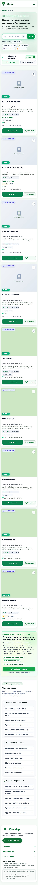

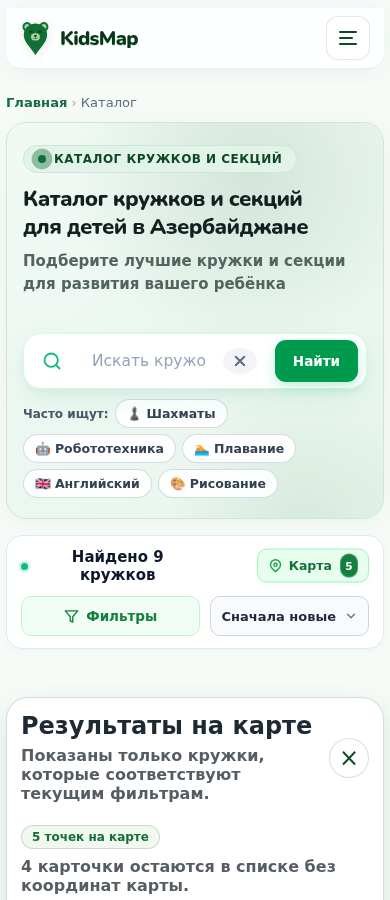


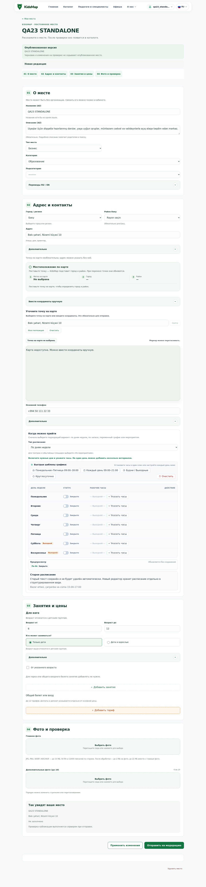


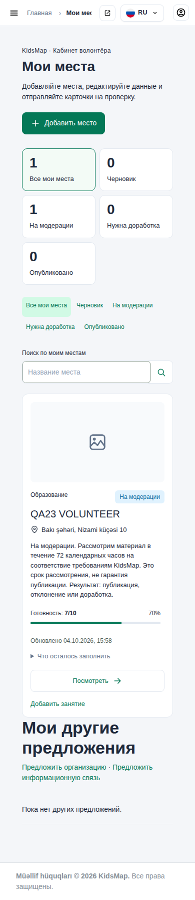


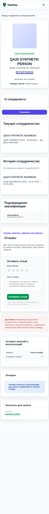

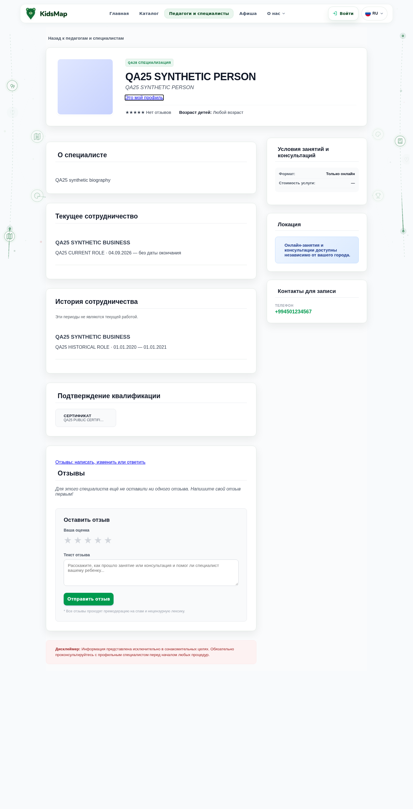

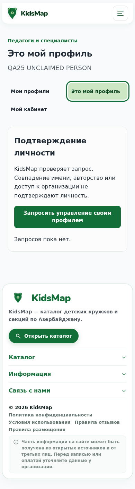

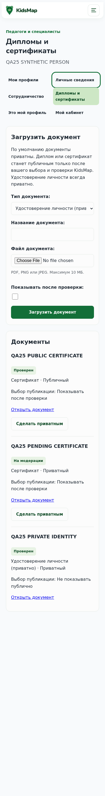


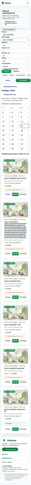

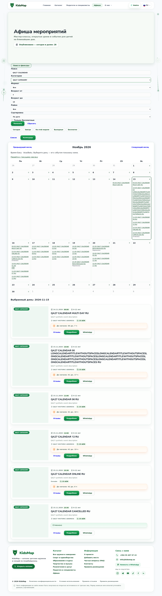

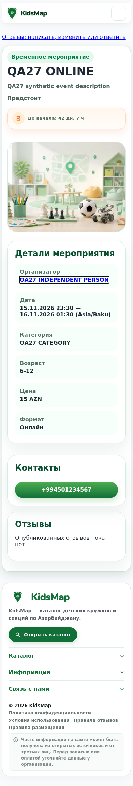


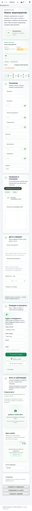

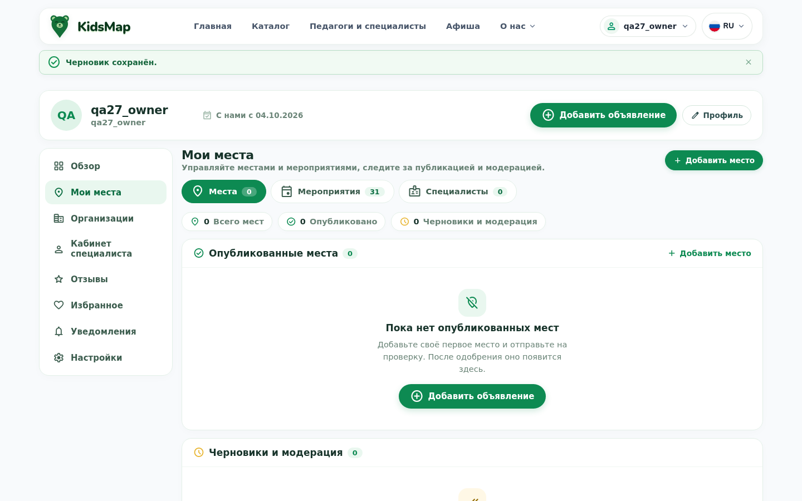

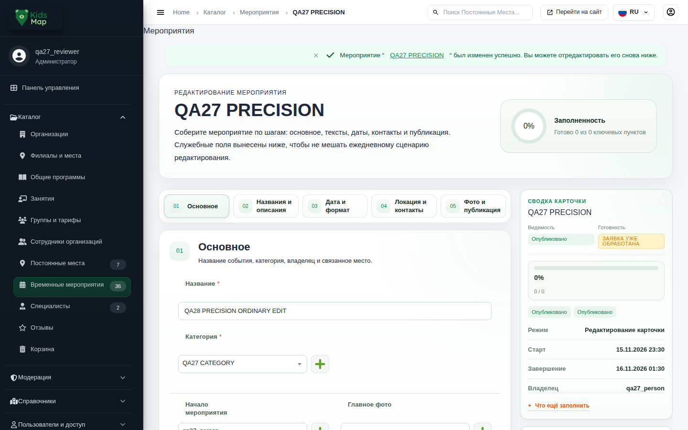

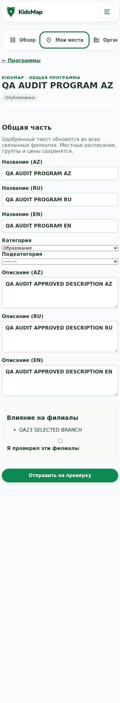

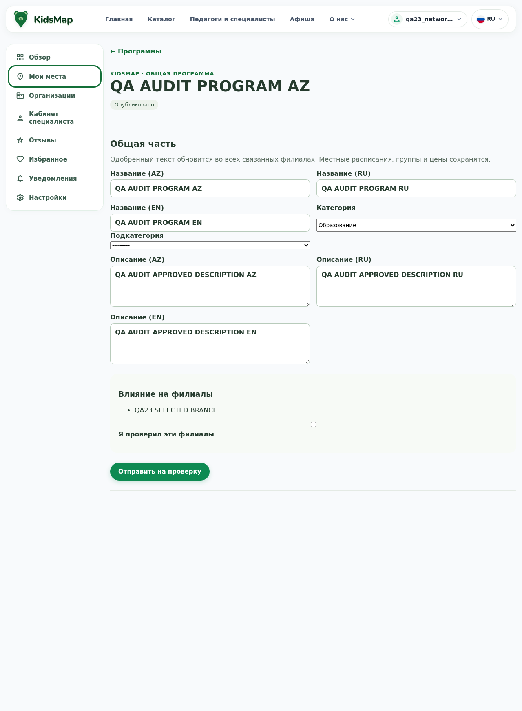

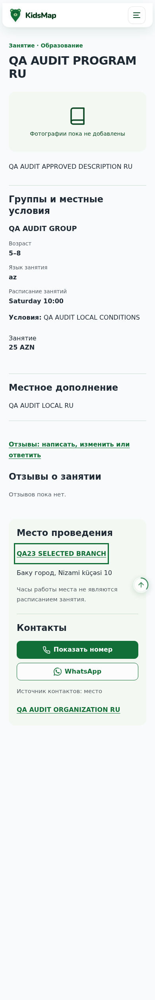

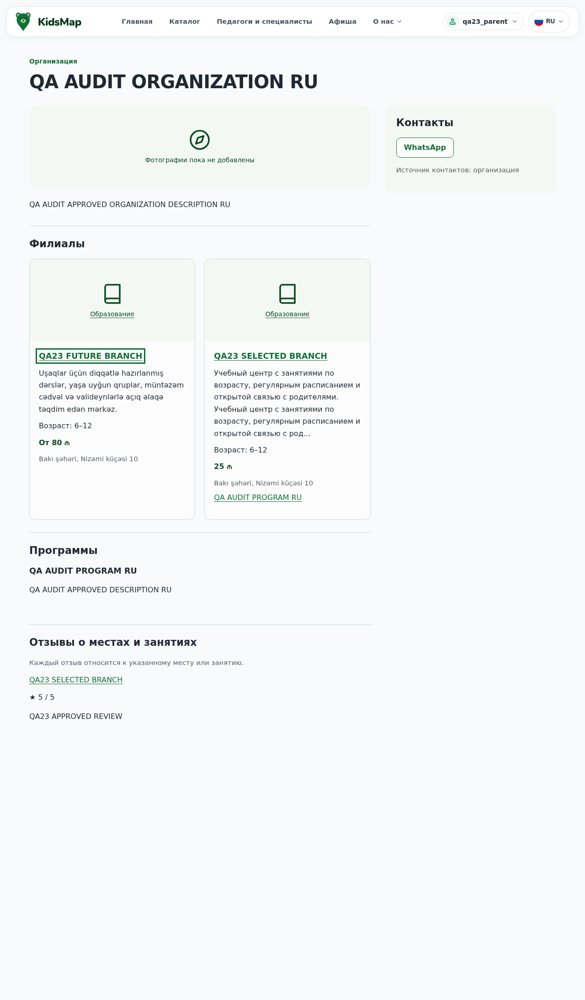

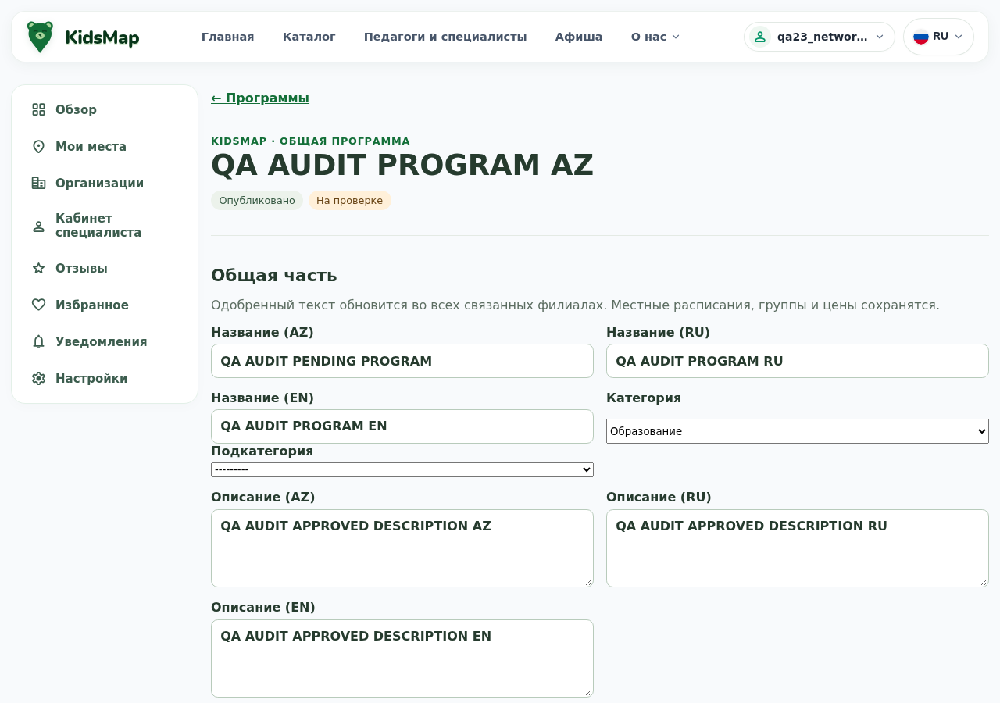

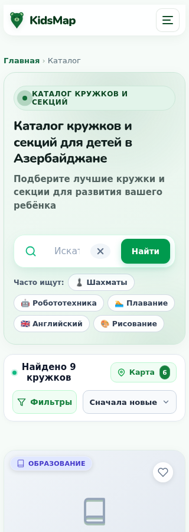

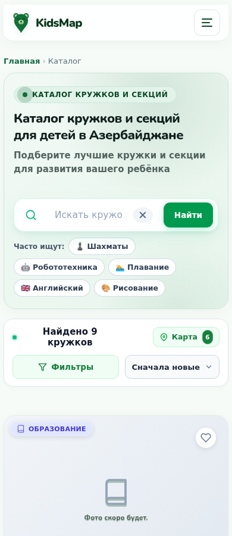

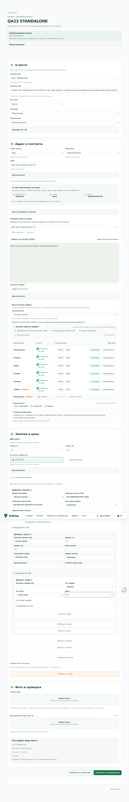

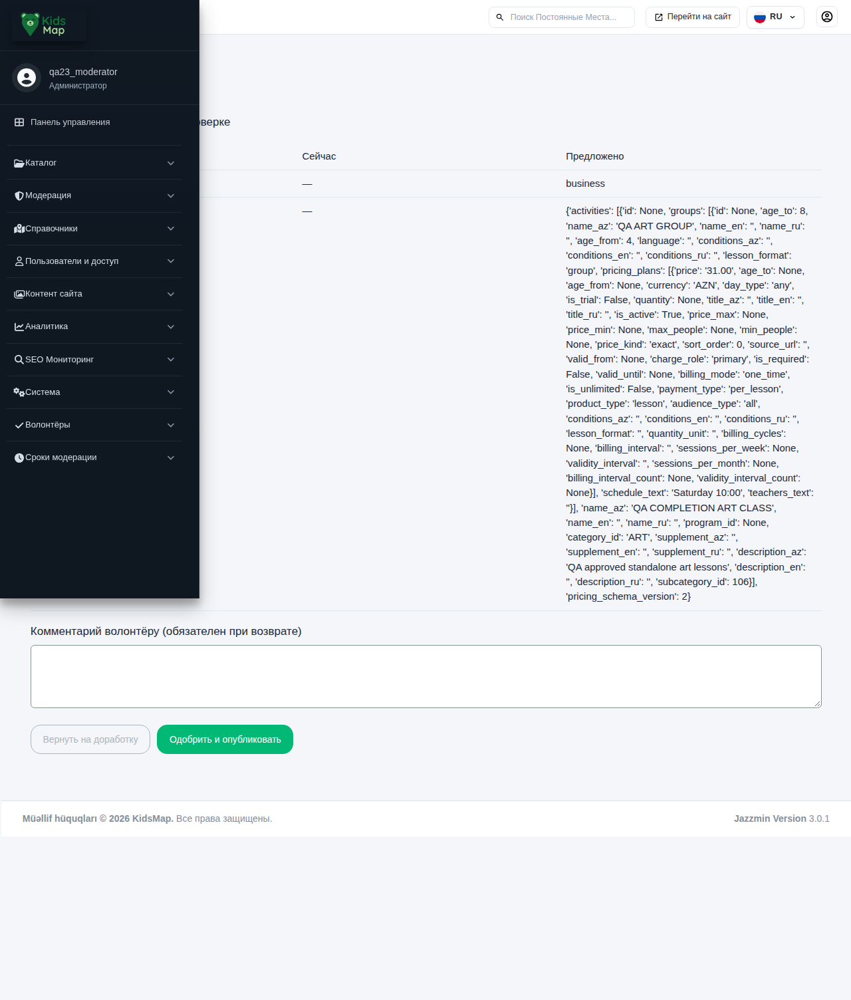

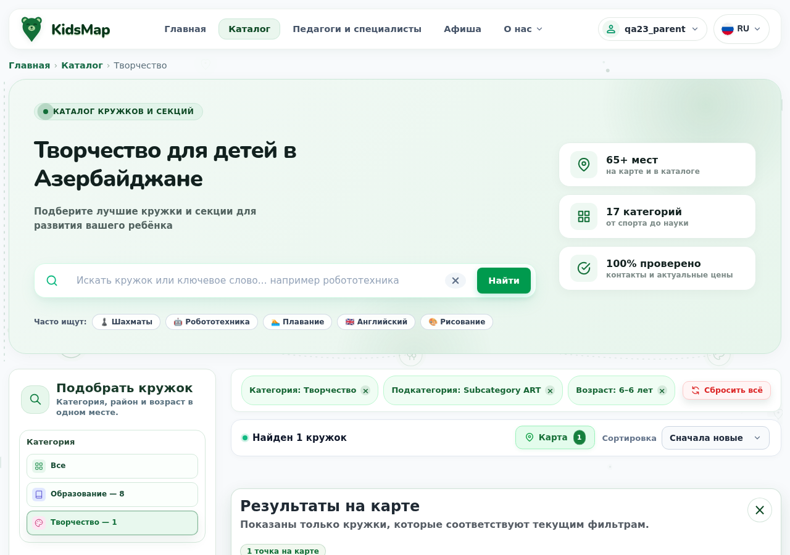
Неудачные попытки и воспроизведение
История проверок сохранена. Первый полный host candidate: 1843, 2F/0E; исправлены две устаревшие admin-фикстуры и повторены полные сценарии. Более ранние owner/admin/public повторы хранят исходные ошибки. Mixed moderation имел отдельный RED до исправления. JS-all попытка ошибочно включила интеграционные browser-скрипты и выявила устаревший client-map контракт; затем отдельно выполнен корректный unit-набор.
Browser targeted c1/c2: ошибки маршрутов и синхронизации QA-адаптера; c3: 153 бизнес-проверки прошли, но реальный HTTP 500 оставил строгий FAIL. Targeted c4: новый полный повтор после исправления. Event c4: ошибочная попытка сохранить уже опубликованное событие; приложение правильно отказало. Event c5: те же проверки перевода перенесены до публикации, всё семейство выполнено заново. Recovery c1: отсутствующий экспорт QA bridge; c2/c3: текстовое представление SQL; c4: неверный расчёт корня QA reader; c5: прежний QA reader ожидал одно занятие вместо связанных и самостоятельных; c6: окончательный повтор. Ни одна неудачная попытка не переписана успешным результатом.
Изолированная среда: DJANGO_TESTING=1, PostgreSQL 17, отдельные БД/cache/media/locmem email, network-none контейнеры и guards transport/libpq, без production credentials. Полный набор внутри образа использует только SHA-проверенный read-only документ аналитики как дополнительный вход; application code не монтируется.
LOCAL HEAD 015d031d8eb17114bd860159dde805b38df3c13c; dirty WORKTREE сохранён. Image sha256:bb90c815dc2b7d19993a682ddfb117b832164b56ac412634650881c8e4d85c2a. Artifact r2-local-sha256-fb2b79949d6134a2790031ac9a9ab7753d33b71a81e334af805d5cbe1985c55c; 2803 файлов. Старый образ и historical final-audit сохранены.
Команды ниже запущены из WSL Ubuntu-24.04; при повторе нужны новые уникальные stamp, чтобы не перезаписывать evidence. Полные raw-логи находятся в /root/task33-evidence/completion-*; в репозитории только безопасные результаты и синтетические скриншоты.
| Проверка | Команда |
|---|---|
| Host | python3 /mnt/c/kidsmap/docs/task33/completion/qa/backend.py --role domain --stamp full-host-final-c2 |
| Build | /root/kidsmap-task33/.venv/bin/python /mnt/c/kidsmap/docs/task33/completion/qa/build_artifact.py --stamp c2 |
| Image | python3 /mnt/c/kidsmap/docs/task33/completion/qa/image_suite.py --stamp c2 |
| Browser | python3 /mnt/c/kidsmap/docs/task33/completion/qa/browser_batch.py --stamp c4; после исправления порядка QA — bash browser_sync.sh и bash browser_run.sh event c5 из того же completion/qa |
| Recovery | python3 /mnt/c/kidsmap/docs/task33/completion/qa/domain_recovery_execute.py --stamp recovery-c6 --artifact <artifact.json из identity выше> |
| JS | node --test scripts/test_activity_taxonomy.cjs scripts/test_program_taxonomy.cjs scripts/test_phone_reveal.cjs scripts/test_photo_editor.cjs scripts/test_permanent_wizard_leave.cjs scripts/test_location_resolution.cjs scripts/tests/home_map_filters.test.cjs; KIDSMAP_JSDOM=C:/kidsmap/.tmp/phone-dom/node_modules/jsdom |
Дорожная карта после этой приёмки
| Порядок | Состояние | Результат / дальнейшая работа |
|---|---|---|
| 1 → 2 → 3 → 4 → 5 | Завершены локально | Категории → конкурентные операции → интерфейсы → аварии уведомлений → общая регрессия. |
| 6. Эксплуатационная готовность | Отдельный согласуемый объём | Целевая конфигурация, реальные данные/миграция/recovery, секреты/доступы, мониторинг, worker schedule, внешние сервисы, нагрузка и план выпуска. |
| Production / commit / push / deploy | Не выполнялись | Текущий результат находится в сохранённом WORKTREE; запуск не разрешался этим планом. |
| Дополнительная проверка устройств | Не выполнялась | Физические iOS/Android, Safari/Firefox, полный screen-reader/contrast audit и реальные звонки. Это границы доказательств, а не утверждение об обнаруженном дефекте. |
Все 120 исходных замечаний
120 записей
1 · catalog.testcases.admin.TestAdminBulkActions.test_event_make_published_and_draft_action · host PASS / image PASS
Fixture Event не имеет конкретного Org/verifiedperson organizer и точного interval. Current bulk использует publish_event и не применяет bypass quality mock. Originaldraft сохраняется; это accepted26 guard, не signedtoken issue.
Use actual current form/action contract, validated fixture and candidate/approved projection checks; see exact function diff and original diagnosis.
src/catalog/testcases/admin.py
--- preserved-entry
+++ completion-WORKTREE
@@ -1,7 +1,6 @@
def test_event_make_published_and_draft_action(self):
- place = create_quality_place(name="Event Place", status=Place.STATUS_PUBLISHED)
- event1 = Event.objects.create(name="Event 1", related_place=place, category="EDU", status=Event.STATUS_DRAFT)
- event2 = Event.objects.create(name="Event 2", related_place=place, category="EDU", status=Event.STATUS_PUBLISHED)
+ event1 = create_reviewable_event(self.admin_user, name='Event 1')
+ event2 = create_reviewable_event(self.admin_user, name='Event 2', published=True)
url = reverse("admin:catalog_event_changelist")
2 · catalog.testcases.admin.TestAdminBulkActions.test_place_make_published_action · host PASS / image PASS
mark_published теперь вызывает publication.publish/evaluate_place_readiness, не patched place_quality_check. create_quality_place без with_subcategory/with_pricing_plan не ready; второйPlace остаётсяdraft. ПервыйrealreadyPlace проходит. Signedtoken label здесь неверен: bulk action не formtoken.
Use actual current form/action contract, validated fixture and candidate/approved projection checks; see exact function diff and original diagnosis.
src/catalog/testcases/admin.py
--- preserved-entry
+++ completion-WORKTREE
@@ -1,8 +1,6 @@
- def test_place_make_published_action(self, mock_quality):
- mock_quality.return_value.is_ready = True
-
+ def test_place_make_published_action(self):
place1 = create_ready_place(name="Place 1", status=Place.STATUS_DRAFT)
- place2 = create_quality_place(name="Place 2", status=Place.STATUS_DRAFT)
+ place2 = create_ready_place(name="Place 2", status=Place.STATUS_DRAFT)
url = reverse("admin:catalog_place_changelist")
response = self.client.post(url, {
3 · catalog.testcases.admin.TestAdminBulkActions.test_review_action_approve_and_reject · host PASS / image PASS
Старый action approve/hide/reject или прямойlegacyURL удалён/403; currentversionedworkflowlink требуетcandidate revision. Старыйhead не меняется, рейтинг0 ожидаем дляpending. Это не проверка работоспособности новогоaction: её выполняют Task33 typedreview cases.
Use exact pending review revision and actual reviewer HTTP action; retain rejection/approval and rating checks. Legacy bulk cannot bypass version checks.
src/catalog/testcases/admin.py
--- preserved-entry
+++ completion-WORKTREE
@@ -1,24 +1,14 @@
def test_review_action_approve_and_reject(self):
- place = create_quality_place(name="Review Place", status=Place.STATUS_PUBLISHED)
- review1 = PlaceReview.objects.create(place=place, status=PlaceReview.STATUS_PENDING, rating=5, text="Good", session_key="session1")
- review2 = PlaceReview.objects.create(place=place, status=PlaceReview.STATUS_PENDING, rating=1, text="Bad", session_key="session2")
-
- url = reverse("admin:catalog_placereview_changelist")
-
- # Approve review1
- response = self.client.post(url, {
- "action": "approve_selected",
- "_selected_action": [review1.pk]
- })
+ place = create_quality_place(name='Review Place')
+ first = create_pending_review(place, 5, 'Good')
+ second = create_pending_review(place, 1, 'Needs review')
+ response = self.client.post(reverse('admin:catalog_placereview_changelist'),
+ {'action':'approve_selected', '_selected_action':[first.pk]})
self.assertEqual(response.status_code, 302)
- review1.refresh_from_db()
- self.assertEqual(review1.status, PlaceReview.STATUS_APPROVED)
-
- # Reject review2
- response = self.client.post(url, {
- "action": "reject_selected",
- "_selected_action": [review2.pk]
- })
- self.assertEqual(response.status_code, 302)
- review2.refresh_from_db()
- self.assertEqual(review2.status, PlaceReview.STATUS_REJECTED)
+ first.refresh_from_db(); self.assertEqual(first.status, 'pending')
+ self.assertEqual(decide_typed_review(self.client, first, kind='place', approve=True).status_code, 302)
+ self.assertEqual(decide_typed_review(self.client, second, kind='place', approve=False).status_code, 302)
+ first.refresh_from_db(); second.refresh_from_db(); place.refresh_from_db()
+ self.assertEqual(first.status, 'approved'); self.assertTrue(first.is_approved)
+ self.assertEqual(second.status, 'rejected'); self.assertFalse(second.is_approved)
+ self.assertEqual(place.rating_count, 1); self.assertEqual(place.rating_avg, 5)
4 · catalog.testcases.admin.TestAdminOwnershipModerationUX.test_admin_can_approve_request_with_direct_button_url · host PASS / image PASS
Управление одобрено, owner изменён; активация карточки не является действием claim. D02/D06.
Use actual current form/action contract, validated fixture and candidate/approved projection checks; see exact function diff and original diagnosis.
src/catalog/testcases/admin.py
--- preserved-entry
+++ completion-WORKTREE
@@ -16,4 +16,4 @@
self.place.refresh_from_db()
self.assertEqual(self.request_item.status, PlaceOwnershipRequest.STATUS_APPROVED)
self.assertEqual(self.place.owner, self.owner_user)
- self.assertTrue(self.place.is_active)
+ self.assertFalse(self.place.is_active) # Management approval does not publish content.
5 · catalog.testcases.admin.TestAdminOwnershipModerationUX.test_admin_index_shows_pending_badge_and_hides_internal_models · host PASS / image PASS
Assertion запрещаетвидимый navigation Группы;15требуетgroups/pricing внутриActivity и регистрация hierarchy проверена новымtest. Точное место списка/UX не принято однимsourceвердиктом.
Use actual current form/action contract, validated fixture and candidate/approved projection checks; see exact function diff and original diagnosis.
src/catalog/testcases/admin.py
--- preserved-entry
+++ completion-WORKTREE
@@ -8,5 +8,5 @@
self.assertContains(response, "Сотрудники админки")
self.assertContains(response, "Отзывы о сайте")
self.assertNotContains(response, "Профили пользователей")
- self.assertNotContains(response, "Группы")
+ self.assertContains(response, reverse('admin:catalog_offeringgroup_changelist'))
self.assertNotContains(response, "Аудит заявок на владение")
6 · catalog.testcases.admin.TestAdminOwnershipModerationUX.test_event_admin_bulk_publish_action_updates_status · host PASS / image PASS
Fixture Event не имеет конкретного Org/verifiedperson organizer и точного interval. Current bulk использует publish_event и не применяет bypass quality mock. Originaldraft сохраняется; это accepted26 guard, не signedtoken issue.
Use actual current form/action contract, validated fixture and candidate/approved projection checks; see exact function diff and original diagnosis.
src/catalog/testcases/admin.py
--- preserved-entry
+++ completion-WORKTREE
@@ -1,10 +1,5 @@
def test_event_admin_bulk_publish_action_updates_status(self):
- event = Event.objects.create(
- name="Draft Event",
- name_az="Draft Event",
- category="EDU",
- status=Event.STATUS_DRAFT,
- )
+ event = create_reviewable_event(self.superuser, name='Draft Event')
response = self.client.post(
reverse("admin:catalog_event_changelist"),
7 · catalog.testcases.admin.TestAdminOwnershipModerationUX.test_event_admin_can_publish_from_change_form · host PASS / image PASS
Старый _admin_event_change_payload не передаёт required event_format. Root causal completepayload replay даёт302 дляdraft послеV3 precision fix; publishfixture дополнительно должен иметьвалидныйorganizer/dates. First200 сампо себе неfullproofpublishflow.
Confirmed organizer and actual event interval, organizer fields in POST, plus current admin phone/photo requirements; no readiness bypass.
src/catalog/testcases/admin.py
--- preserved-entry
+++ completion-WORKTREE
@@ -1,14 +1,13 @@
def test_event_admin_can_publish_from_change_form(self):
- event = Event.objects.create(
+ event = create_reviewable_event(self.superuser,
name="Publish Admin Event",
- name_az="Publish Admin Event",
- category="EDU",
description_az="Описание для публикации",
start_datetime=timezone.now() + timedelta(days=5),
end_datetime=timezone.now() + timedelta(days=5, hours=2),
- status=Event.STATUS_DRAFT,
- published_at=None,
)
+ event.phone = '+994501234567'
+ event.photo = 'events/admin-publication-fixture.jpg'
+ event.save(update_fields=['phone', 'photo'])
payload = self._admin_event_change_payload(event)
payload["_publish_event"] = "1"
@@ -17,6 +16,8 @@
data=payload,
)
+ if response.context and response.context.get('adminform'):
+ self.assertFalse(response.context['adminform'].form.errors, response.context['adminform'].form.errors)
self.assertEqual(response.status_code, 302)
event.refresh_from_db()
self.assertEqual(event.status, Event.STATUS_PUBLISHED)
8 · catalog.testcases.admin.TestAdminOwnershipModerationUX.test_event_admin_can_save_draft_and_continue_later · host PASS / image PASS
Старый _admin_event_change_payload не передаёт required event_format. Root causal completepayload replay даёт302 дляdraft послеV3 precision fix; publishfixture дополнительно должен иметьвалидныйorganizer/dates. First200 сампо себе неfullproofpublishflow.
Use actual current form/action contract, validated fixture and candidate/approved projection checks; see exact function diff and original diagnosis.
src/catalog/testcases/admin.py
9 · catalog.testcases.admin.TestAdminOwnershipModerationUX.test_failed_publish_keeps_published_card_active_and_shows_all_issues · host PASS / image PASS
Assertion требует coords/photo blocking, которые08 сделал optional, и прежнюю message. Старый payload безpublication_token. Complete currentprotocol action не воспроизведён: не объявляется безвредным целиком.
Submit invalid coordinate bounds through real admin form; require both field errors, unchanged published projection/version and no candidate. Photo/GPS absence is covered as allowed by readiness tests.
src/catalog/testcases/admin.py
--- preserved-entry
+++ completion-WORKTREE
@@ -1,35 +1,17 @@
def test_failed_publish_keeps_published_card_active_and_shows_all_issues(self):
- # Readiness is computed from the card itself, so the gaps are real ones
- # rather than a patched quality result.
- self.place = create_quality_place(
- name="Already published place",
- name_ru="Уже опубликованная карточка",
- status=Place.STATUS_PUBLISHED,
- is_active=True,
- lat=None,
- lng=None,
- photo="",
- price_from=None,
- price_to=None,
- )
- payload = self._admin_place_change_payload(_publish_place="1")
-
- response = self.client.post(
- reverse("admin:catalog_place_change", args=[self.place.id]),
- data=payload,
- follow=True,
- )
-
+ self.place = create_ready_place(name='Approved card', name_ru='Одобренная карточка')
+ before = (self.place.name_az, self.place.description_az, self.place.content_version)
+ payload = self._admin_place_change_payload(_publish_place='1', lat='91', lng='200')
+ response = self.client.post(reverse('admin:catalog_place_change', args=[self.place.pk]), payload)
self.assertEqual(response.status_code, 200)
+ form = response.context['adminform'].form
+ self.assertIn('lat', form.errors)
+ self.assertIn('lng', form.errors)
+ for field in ('lat', 'lng'):
+ for error in form.errors[field]:
+ self.assertContains(response, escape(error))
self.place.refresh_from_db()
- self.assertEqual(self.place.status, Place.STATUS_PUBLISHED)
- self.assertTrue(self.place.is_active)
- self.assertContains(response, "Карточка осталась опубликованной")
-
- readiness = evaluate_place_readiness(self.place)
- codes = {issue.quality_code for issue in readiness.issues}
- self.assertTrue({"missing_coordinates", "missing_price", "missing_photo"} <= codes, codes)
- blocking = [issue.message for issue in readiness.issues if issue.blocking]
- self.assertTrue(blocking)
- for message in blocking:
- self.assertContains(response, escape(message))
+ self.assertEqual(self.place.status, 'published'); self.assertTrue(self.place.is_active)
+ self.assertEqual((self.place.name_az,self.place.description_az,self.place.content_version), before)
+ from catalog.models import VolunteerPlaceRevision
+ self.assertFalse(VolunteerPlaceRevision.objects.filter(place=self.place).exists())
10 · catalog.testcases.admin.TestAdminOwnershipModerationUX.test_place_admin_bulk_action_regeocodes_selected_places · host PASS / image PASS
Retainedtrace даёт actualcoordinate/region mismatch либо inferredregion либо errorattachedlatвместоlng. Defaultdata имеетBaku40.4/49.8; testcaseoutsideGanjaсохраняетих. Exactsubtest boundary ниже; нельзясчитатьвсягеографияправильной по одномуlabel.
Use actual current form/action contract, validated fixture and candidate/approved projection checks; see exact function diff and original diagnosis.
src/catalog/testcases/admin.py
--- preserved-entry
+++ completion-WORKTREE
@@ -1,9 +1,9 @@
def test_place_admin_bulk_action_regeocodes_selected_places(self, geocode_mock):
- geocode_mock.return_value = GeocodingPoint(lat=40.5001, lng=49.9001, formatted_address="Baku")
+ geocode_mock.return_value = GeocodingPoint(lat=40.409264, lng=49.867092, formatted_address="Baku")
self.place.address = "Проспект 10"
self.place.district = "Ясамал"
- self.place.lat = 40.1001
- self.place.lng = 49.1001
+ self.place.lat = 40.4093
+ self.place.lng = 49.8671
self.place.save(update_fields=["address", "district", "lat", "lng", "updated_at"])
response = self.client.post(
@@ -18,8 +18,8 @@
self.assertEqual(response.status_code, 200)
self.place.refresh_from_db()
- self.assertEqual(self.place.lat, 40.5001)
- self.assertEqual(self.place.lng, 49.9001)
+ self.assertEqual(self.place.lat, 40.409264)
+ self.assertEqual(self.place.lng, 49.867092)
response_content = response.content.decode("utf-8")
self.assertTrue(
"Повторное геокодирование завершено: обновлено 1" in response_content
11 · catalog.testcases.admin.TestAdminOwnershipModerationUX.test_place_admin_can_add_change_and_delete_phone_numbers · host PASS / image PASS
Fresh trace прямо показывает missing/invalid publication token перед ожидаемой проверкой: self.assertFalse(response.context["adminform"].form.errors, response.context["adminform"].form.errors). source_version требует signed source/schema/snapshot/dependencies. Старый helper/payload token не передаёт. Feature за этой границей не проверена этим failedcase; validtoken replay NOT_RUN.
Use actual current form/action contract, validated fixture and candidate/approved projection checks; see exact function diff and original diagnosis.
src/catalog/testcases/admin.py
--- preserved-entry
+++ completion-WORKTREE
@@ -19,6 +19,19 @@
if response.context and response.context.get("adminform"):
self.assertFalse(response.context["adminform"].form.errors, response.context["adminform"].form.errors)
self.place.refresh_from_db()
+ from catalog.models import VolunteerPlaceRevision
+ from catalog.services import publication
+ revision = VolunteerPlaceRevision.objects.get(place=self.place)
+ self.assertEqual(revision.status, 'draft')
+ self.assertEqual(self.place.phone1, '+994501112233')
+ self.assertEqual(revision.payload['phone1'], '+994509998877')
+ self.assertEqual(revision.payload['phone2'], '')
+ self.assertEqual(revision.payload['phone3'], '+994703332211')
+ revision = publication.propose(actor=self.superuser, target_type='place', target_id=self.place.pk,
+ patch=revision.payload, schema_version=1, expected_version=self.place.content_version,
+ revision_version=revision.version, submit=True)
+ publication.review(actor=self.superuser, revision_id=revision.pk, version=revision.version, approve=True)
+ self.place.refresh_from_db()
self.assertEqual(self.place.phone1, "+994509998877")
self.assertEqual(self.place.phone2, "")
self.assertEqual(self.place.phone3, "+994703332211")
12 · catalog.testcases.admin.TestAdminOwnershipModerationUX.test_place_admin_can_publish_ready_place_from_change_form · host PASS / image PASS
Точныйfailure self.assertEqual(response.status_code, 302): AssertionError: 200 != 302. Этотстарыйedit/savepayload сформированбезpublicationtoken (helper/data); source_version обязателен. Кромеэтогоname/coords/photo изменяютсяcandidate, невlive; schedule/amount отдельныйexplicitpath. Corefeatureвариантаtest_place_admin_can_publish_ready_place_from_change_form сvalidtoken/approveнепроверенаэтимfailure, требуетсяcausalreplay.
Real ready fixture, source token for the exact record and actual tariff payload; removed mocked readiness bypass.
src/catalog/testcases/admin.py
--- preserved-entry
+++ completion-WORKTREE
@@ -6,6 +6,7 @@
is_active=False,
published_at=None,
)
+ self.place = ready_place # Sign the form for the record actually being posted.
payload = self._admin_place_change_payload(
name=ready_place.name,
name_ru=ready_place.name_ru,
@@ -45,15 +46,13 @@
)
payload["_publish_place"] = "1"
- with patch("catalog.domain_admin.place.place_quality_check") as quality_check_mock:
- quality_check_mock.return_value.is_ready = True
- response = self.client.post(
- reverse("admin:catalog_place_change", args=[ready_place.id]),
- data=payload,
- )
+ payload['pricing_plans'] = json.dumps(ready_place.pricing_plans)
+ response = self.client.post(reverse('admin:catalog_place_change', args=[ready_place.pk]), payload)
+ if response.context and response.context.get('adminform'):
+ self.assertFalse(response.context['adminform'].form.errors, response.context['adminform'].form.errors)
self.assertEqual(response.status_code, 302)
ready_place.refresh_from_db()
- self.assertTrue(ready_place.is_active)
+ self.assertTrue(ready_place.is_active, [str(m) for m in response.wsgi_request._messages])
self.assertEqual(ready_place.status, Place.STATUS_PUBLISHED)
self.assertIsNotNone(ready_place.published_at)
13 · catalog.testcases.admin.TestAdminOwnershipModerationUX.test_place_admin_can_refresh_coordinates_from_address · host PASS / image PASS
Fresh trace прямо показывает missing/invalid publication token перед ожидаемой проверкой: self.assertFalse(response.context["adminform"].form.errors, response.context["adminform"].form.errors). source_version требует signed source/schema/snapshot/dependencies. Старый helper/payload token не передаёт. Feature за этой границей не проверена этим failedcase; validtoken replay NOT_RUN.
Use actual current form/action contract, validated fixture and candidate/approved projection checks; see exact function diff and original diagnosis.
src/catalog/testcases/admin.py
14 · catalog.testcases.admin.TestAdminOwnershipModerationUX.test_place_admin_can_save_an_empty_new_place_as_draft · host PASS / image PASS
Сохранение302 произошло, firstfailure ожидает invented name Черновикбезназвания, actual name пустой.09 допускает незавершённый draft без выдуманного name. Остальные assertions после старого name lookup не выполнены.
Application adapter now transfers cleaned legacy draft name when ModelForm excludes name; verify saved empty draft and continuation.
src/catalog/testcases/admin.py
15 · catalog.testcases.admin.TestAdminOwnershipModerationUX.test_place_admin_can_save_place_as_draft_and_continue_later · host PASS / image PASS
Точныйfailure self.assertEqual(response.status_code, 302): AssertionError: 200 != 302. Этотстарыйedit/savepayload сформированбезpublicationtoken (helper/data); source_version обязателен. Кромеэтогоname/coords/photo изменяютсяcandidate, невlive; schedule/amount отдельныйexplicitpath. Corefeatureвариантаtest_place_admin_can_save_place_as_draft_and_continue_later сvalidtoken/approveнепроверенаэтимfailure, требуетсяcausalreplay.
Use actual current form/action contract, validated fixture and candidate/approved projection checks; see exact function diff and original diagnosis.
src/catalog/testcases/admin.py
--- preserved-entry
+++ completion-WORKTREE
@@ -1,5 +1,6 @@
def test_place_admin_can_save_place_as_draft_and_continue_later(self):
- payload = self._admin_place_change_payload()
+ before = (self.place.status, self.place.is_active, self.place.published_at)
+ payload = self._admin_place_change_payload(name_az='Candidate draft name')
payload["_save_draft"] = "1"
response = self.client.post(
@@ -10,6 +11,11 @@
self.assertEqual(response.status_code, 302)
self.assertEqual(response["Location"], reverse("admin:catalog_place_change", args=[self.place.id]))
self.place.refresh_from_db()
- self.assertEqual(self.place.status, Place.STATUS_DRAFT)
- self.assertFalse(self.place.is_active)
- self.assertIsNone(self.place.published_at)
+ self.assertEqual((self.place.status, self.place.is_active, self.place.published_at), before)
+ from catalog.models import VolunteerPlaceRevision
+ revision = VolunteerPlaceRevision.objects.get(place=self.place)
+ self.assertEqual(revision.status, 'draft')
+ self.assertEqual(revision.payload['name_az'], 'Candidate draft name')
+ continued = self.client.get(response['Location'])
+ self.assertEqual(continued.status_code, 200)
+ self.assertEqual(continued.context['adminform'].form['name_az'].value(), 'Candidate draft name')
16 · catalog.testcases.admin.TestAdminOwnershipModerationUX.test_place_admin_can_unpublish_place_from_change_form · host PASS / image PASS
Старый POST не содержит unpublish_version. Повтор с единственным добавлением текущей версии даёт302/draft/inactive.
Use actual current form/action contract, validated fixture and candidate/approved projection checks; see exact function diff and original diagnosis.
src/catalog/testcases/admin.py
17 · catalog.testcases.admin.TestAdminOwnershipModerationUX.test_place_admin_saves_gallery_photo_with_draft · host PASS / image PASS
Точныйfailure self.assertEqual(response.status_code, 302): AssertionError: 200 != 302. Этотстарыйedit/savepayload сформированбезpublicationtoken (helper/data); source_version обязателен. Кромеэтогоname/coords/photo изменяютсяcandidate, невlive; schedule/amount отдельныйexplicitpath. Corefeatureвариантаtest_place_admin_saves_gallery_photo_with_draft сvalidtoken/approveнепроверенаэтимfailure, требуетсяcausalreplay.
Use actual current form/action contract, validated fixture and candidate/approved projection checks; see exact function diff and original diagnosis.
src/catalog/testcases/admin.py
--- preserved-entry
+++ completion-WORKTREE
@@ -22,6 +22,17 @@
)
self.assertEqual(response.status_code, 302)
+ from catalog.models import VolunteerPlaceRevision
+ from catalog.services import publication
+ revision = VolunteerPlaceRevision.objects.get(place=self.place)
+ self.assertEqual(revision.status, 'draft')
+ self.assertFalse(PlacePhoto.objects.filter(place=self.place).exists())
+ self.assertEqual(len(revision.payload['gallery']), 1)
+ self.assertEqual(revision.payload['gallery'][0]['order'], 1)
+ revision = publication.propose(actor=self.superuser, target_type='place', target_id=self.place.pk,
+ patch=revision.payload, schema_version=1, expected_version=self.place.content_version,
+ revision_version=revision.version, submit=True)
+ publication.review(actor=self.superuser, revision_id=revision.pk, version=revision.version, approve=True)
saved_photo = PlacePhoto.objects.get(place=self.place)
self.assertEqual(saved_photo.order, 1)
self.assertTrue(saved_photo.image.name.startswith("places/gallery/gallery"))
18 · catalog.testcases.admin.TestAdminOwnershipModerationUX.test_place_admin_saves_pricing_plans_from_change_form · host PASS / image PASS
Точныйfailure self.assertEqual(response.status_code, 302): AssertionError: 200 != 302. Этотстарыйedit/savepayload сформированбезpublicationtoken (helper/data); source_version обязателен. Кромеэтогоname/coords/photo изменяютсяcandidate, невlive; schedule/amount отдельныйexplicitpath. Corefeatureвариантаtest_place_admin_saves_pricing_plans_from_change_form сvalidtoken/approveнепроверенаэтимfailure, требуетсяcausalreplay.
Use actual current form/action contract, validated fixture and candidate/approved projection checks; see exact function diff and original diagnosis.
src/catalog/testcases/admin.py
--- preserved-entry
+++ completion-WORKTREE
@@ -29,6 +29,17 @@
self.assertEqual(response.status_code, 302)
self.place.refresh_from_db()
+ from catalog.models import VolunteerPlaceRevision
+ from catalog.services import publication
+ revision = VolunteerPlaceRevision.objects.get(place=self.place)
+ self.assertEqual(revision.status, 'draft')
+ self.assertEqual(len(revision.payload['pricing_plans']), 2)
+ self.assertEqual(self.place.pricing_plans, [])
+ revision = publication.propose(actor=self.superuser, target_type='place', target_id=self.place.pk,
+ patch=revision.payload, schema_version=1, expected_version=self.place.content_version,
+ revision_version=revision.version, submit=True)
+ publication.review(actor=self.superuser, revision_id=revision.pk, version=revision.version, approve=True)
+ self.place.refresh_from_db()
self.assertEqual(len(self.place.pricing_plans), 2)
self.assertEqual(self.place.pricing_plans[0]["price"], "120.00")
self.assertEqual(self.place.pricing_plans[1]["price"], "40.00")
19 · catalog.testcases.admin.TestAdminOwnershipModerationUX.test_place_admin_saves_valid_structured_schedule · host PASS / image PASS
Точныйfailure self.assertEqual(response.status_code, 302): AssertionError: 200 != 302. Этотстарыйedit/savepayload сформированбезpublicationtoken (helper/data); source_version обязателен. Кромеэтогоname/coords/photo изменяютсяcandidate, невlive; schedule/amount отдельныйexplicitpath. Corefeatureвариантаtest_place_admin_saves_valid_structured_schedule сvalidtoken/approveнепроверенаэтимfailure, требуетсяcausalreplay.
Use actual current form/action contract, validated fixture and candidate/approved projection checks; see exact function diff and original diagnosis.
src/catalog/testcases/admin.py
20 · catalog.testcases.admin.TestAdminOwnershipModerationUX.test_place_admin_shows_coordinates_and_readiness_statuses · host PASS / image PASS
Точный первый failure: self.assertContains(response, 'data-total="12"', html=False); наблюдение AssertionError: False is not true : Couldn't find 'data-total="12"' in the following response. place_readiness.py удаляет photo/coordinates из requirements, осталось10 вместо12. Для этого subtest счётчик старый; дальнейшие assertions отдельного requirement после него не выполнены и не объявлены проверенными.
Use actual current form/action contract, validated fixture and candidate/approved projection checks; see exact function diff and original diagnosis.
src/catalog/testcases/admin.py
--- preserved-entry
+++ completion-WORKTREE
@@ -15,7 +15,7 @@
self.assertContains(response, "Точка на карте есть")
self.assertContains(response, "Нет координат")
self.assertContains(response, "data-readiness-trigger", html=False)
- self.assertContains(response, 'data-total="12"', html=False)
+ self.assertContains(response, 'data-total="10"', html=False)
self.assertContains(response, "Локация")
self.assertContains(response, "Состояние")
self.assertContains(response, "Метки")
21 · catalog.testcases.admin.TestAdminOwnershipModerationUX.test_place_review_admin_bulk_hide_and_approve_actions · host PASS / image PASS
Старый action approve/hide/reject или прямойlegacyURL удалён/403; currentversionedworkflowlink требуетcandidate revision. Старыйhead не меняется, рейтинг0 ожидаем дляpending. Это не проверка работоспособности новогоaction: её выполняют Task33 typedreview cases.
Use exact pending review revision and actual reviewer HTTP action; retain rejection/approval and rating checks. Legacy bulk cannot bypass version checks.
src/catalog/testcases/admin.py
--- preserved-entry
+++ completion-WORKTREE
@@ -1,26 +1,15 @@
def test_place_review_admin_bulk_hide_and_approve_actions(self):
- review = PlaceReview.objects.create(
- place=self.place,
- author_name="Ольга",
- rating=4,
- text="Полезный отзыв",
- is_approved=True,
- )
-
- hide_response = self.client.post(
- reverse("admin:catalog_placereview_changelist"),
- data={"action": "hide_selected", "_selected_action": [str(review.id)], "index": 0},
- follow=True,
- )
- self.assertEqual(hide_response.status_code, 200)
+ from catalog.services.review_versions import submit_review
+ review = create_pending_review(self.place, 4, 'Helpful review')
+ self.assertEqual(decide_typed_review(self.client, review, kind='place', approve=True).status_code, 302)
+ review.refresh_from_db(); approved_id = review.current_revision_id
+ for action in ('hide_selected', 'approve_selected'):
+ response = self.client.post(reverse('admin:catalog_placereview_changelist'),
+ {'action':action, '_selected_action':[review.pk], 'index':0}, follow=True)
+ self.assertEqual(response.status_code, 200)
+ review.refresh_from_db()
+ self.assertTrue(review.is_approved); self.assertEqual(review.current_revision_id, approved_id)
+ review, candidate = submit_review(target=self.place, user=review.user, rating=3, text='New version')
+ self.assertEqual(decide_typed_review(self.client, review, kind='place', approve=True).status_code, 302)
review.refresh_from_db()
- self.assertFalse(review.is_approved)
-
- approve_response = self.client.post(
- reverse("admin:catalog_placereview_changelist"),
- data={"action": "approve_selected", "_selected_action": [str(review.id)], "index": 0},
- follow=True,
- )
- self.assertEqual(approve_response.status_code, 200)
- review.refresh_from_db()
- self.assertTrue(review.is_approved)
+ self.assertEqual(review.current_revision_id, candidate.pk); self.assertEqual(review.rating, 3)
22 · catalog.testcases.admin.TestAdminOwnershipModerationUX.test_place_review_admin_moderation_views_update_visibility · host PASS / image PASS
Старый action approve/hide/reject или прямойlegacyURL удалён/403; currentversionedworkflowlink требуетcandidate revision. Старыйhead не меняется, рейтинг0 ожидаем дляpending. Это не проверка работоспособности новогоaction: её выполняют Task33 typedreview cases.
Use exact pending review revision and actual reviewer HTTP action; retain rejection/approval and rating checks. Legacy bulk cannot bypass version checks.
src/catalog/testcases/admin.py
--- preserved-entry
+++ completion-WORKTREE
@@ -1,29 +1,14 @@
def test_place_review_admin_moderation_views_update_visibility(self):
- review = PlaceReview.objects.create(
- place=self.place,
- author_name="Ирина",
- rating=2,
- text="Нужно проверить",
- status=PlaceReview.STATUS_PENDING,
- is_approved=False,
- )
-
- approve_get = self.client.get(reverse("admin:catalog_placereview_approve", args=[review.id]))
- self.assertEqual(approve_get.status_code, 200)
- self.assertContains(approve_get, "Опубликовать отзыв")
-
- approve_post = self.client.post(
- reverse("admin:catalog_placereview_approve", args=[review.id]),
- follow=True,
- )
- self.assertEqual(approve_post.status_code, 200)
- review.refresh_from_db()
- self.assertTrue(review.is_approved)
-
- reject_post = self.client.post(
- reverse("admin:catalog_placereview_reject", args=[review.id]),
- follow=True,
- )
- self.assertEqual(reject_post.status_code, 200)
- review.refresh_from_db()
- self.assertFalse(review.is_approved)
+ from catalog.services.review_versions import submit_review
+ review = create_pending_review(self.place, 2, 'Needs review')
+ url = reverse('typed_review_action', args=['place',review.pk,'approve'])
+ self.assertEqual(self.client.get(url).status_code, 405)
+ self.assertEqual(decide_typed_review(self.client, review, kind='place', approve=True).status_code, 302)
+ review.refresh_from_db(); approved_id = review.current_revision_id
+ review, candidate = submit_review(target=self.place, user=review.user, rating=1, text='Rejected update')
+ self.assertEqual(decide_typed_review(self.client, review, kind='place', approve=False).status_code, 302)
+ review.refresh_from_db(); candidate.refresh_from_db()
+ self.assertTrue(review.is_approved); self.assertEqual(review.rating, 2)
+ self.assertEqual(review.current_revision_id, approved_id)
+ self.assertEqual(candidate.status, 'rejected'); self.assertIsNone(review.candidate_revision_id)
+ self.assertEqual(self.client.post(url, {'revision_id':candidate.pk}).status_code, 409)
23 · catalog.testcases.admin.TestAdminTemporaryEventInputs.test_place_admin_form_exposes_and_saves_custom_price_badges · host PASS / image PASS
Fresh trace прямо показывает missing/invalid publication token перед ожидаемой проверкой: self.assertTrue(form.is_valid(), form.errors). source_version требует signed source/schema/snapshot/dependencies. Старый helper/payload token не передаёт. Feature за этой границей не проверена этим failedcase; validtoken replay NOT_RUN.
Use actual current form/action contract, validated fixture and candidate/approved projection checks; see exact function diff and original diagnosis.
src/catalog/testcases/admin.py
--- preserved-entry
+++ completion-WORKTREE
@@ -16,6 +16,7 @@
form = form_class(
data={
"_save_draft": "1",
+ "publication_token": response.context['adminform'].form.initial['publication_token'],
"name_az": self.place.name_az,
"category": "EDU",
"pricing_plans": "[]",
24 · catalog.testcases.admin.TestAdminTemporaryEventInputs.test_place_admin_form_supports_open_ended_age · host PASS / image PASS
Fresh trace прямо показывает missing/invalid publication token перед ожидаемой проверкой: self.assertTrue(form.is_valid(), form.errors). source_version требует signed source/schema/snapshot/dependencies. Старый helper/payload token не передаёт. Feature за этой границей не проверена этим failedcase; validtoken replay NOT_RUN.
Use actual current form/action contract, validated fixture and candidate/approved projection checks; see exact function diff and original diagnosis.
src/catalog/testcases/admin.py
--- preserved-entry
+++ completion-WORKTREE
@@ -4,6 +4,7 @@
form = PlaceAdminForm(
data={
"name_az": "Yaş limiti olmayan yer",
+ "publication_token": PlaceAdminForm(instance=self.place).initial['publication_token'],
"category": "EDU",
"age_from": "3",
"age_open_ended": "on",
25 · catalog.testcases.admin.TestPlaceRatingsAdmin.test_changelist_pagination_preserves_filters_search_and_sorting · host PASS / image PASS
Созданные5 fixtures имеют baku_narimanov, query=baku даёт0. Замена только querydistrict возвращает3 корректные страницы с сохранёнными фильтрами.
Use actual current form/action contract, validated fixture and candidate/approved projection checks; see exact function diff and original diagnosis.
src/catalog/testcases/admin.py
--- preserved-entry
+++ completion-WORKTREE
@@ -3,7 +3,7 @@
place = create_quality_place(
name=f"Ratings page {index}",
name_ru=f"Пагинация рейтинг {index}",
- district="Bakı",
+ district="baku_narimanov",
is_verified=True,
)
PlaceReview.objects.create(
@@ -17,7 +17,7 @@
self.addCleanup(setattr, ratings_admin, "list_per_page", original_per_page)
ratings_admin.list_per_page = 2
url = reverse("admin:catalog_placereviewsbyclub_changelist")
- query = "?category__code__exact=EDU&district=baku&is_active__exact=1&is_verified__exact=1&q=Пагинация&o=-1"
+ query = "?category__code__exact=EDU&district=baku_narimanov&is_active__exact=1&is_verified__exact=1&q=Пагинация&o=-1"
first = self.client.get(url + query)
second = self.client.get(url + query + "&p=2")
@@ -27,7 +27,7 @@
self.assertEqual(response.status_code, 200)
self.assertContains(response, "km-changelist-pagination__nav")
self.assertContains(response, "category__code__exact=EDU")
- self.assertContains(response, "district=baku")
+ self.assertContains(response, "district=baku_narimanov")
self.assertContains(response, "is_verified__exact=1")
self.assertContains(response, "q=%D0%9F%D0%B0%D0%B3%D0%B8%D0%BD%D0%B0%D1%86%D0%B8%D1%8F")
self.assertContains(response, "o=-1")
26 · catalog.testcases.admin.TestReviewRatingSyncAndAdminBulkActions.test_place_review_bulk_approve_updates_place_rating_stats · host PASS / image PASS
Старый action approve/hide/reject или прямойlegacyURL удалён/403; currentversionedworkflowlink требуетcandidate revision. Старыйhead не меняется, рейтинг0 ожидаем дляpending. Это не проверка работоспособности новогоaction: её выполняют Task33 typedreview cases.
Use exact pending review revision and actual reviewer HTTP action; retain rejection/approval and rating checks. Legacy bulk cannot bypass version checks.
src/catalog/testcases/admin.py
--- preserved-entry
+++ completion-WORKTREE
@@ -1,18 +1,13 @@
def test_place_review_bulk_approve_updates_place_rating_stats(self):
- from catalog.models.review import PlaceReview
- review1 = PlaceReview.objects.create(place=self.place, rating=5, text="Great place!", status=PlaceReview.STATUS_PENDING, is_approved=False)
- review2 = PlaceReview.objects.create(place=self.place, rating=4, text="Good place!", status=PlaceReview.STATUS_PENDING, is_approved=False)
-
+ first = create_pending_review(self.place, 5, 'Great place!')
+ second = create_pending_review(self.place, 4, 'Good place!')
self.place.refresh_from_db()
- self.assertEqual(self.place.rating_count, 0)
- self.assertEqual(self.place.rating_avg, 0.0)
-
- response = self.client.post(
- reverse("admin:catalog_placereview_changelist"),
- {"action": "approve_selected", "_selected_action": [str(review1.pk), str(review2.pk)], "index": "0"},
- follow=True,
- )
- self.assertEqual(response.status_code, 200)
+ self.assertEqual(self.place.rating_count, 0); self.assertEqual(self.place.rating_avg, 0)
+ legacy = self.client.post(reverse('admin:catalog_placereview_changelist'),
+ {'action':'approve_selected', '_selected_action':[first.pk, second.pk]}, follow=True)
+ self.assertEqual(legacy.status_code, 200)
+ self.place.refresh_from_db(); self.assertEqual(self.place.rating_count, 0)
+ for head in (first, second):
+ self.assertEqual(decide_typed_review(self.client, head, kind='place', approve=True).status_code, 302)
self.place.refresh_from_db()
- self.assertEqual(self.place.rating_count, 2)
- self.assertEqual(self.place.rating_avg, 4.5)
+ self.assertEqual(self.place.rating_count, 2); self.assertEqual(self.place.rating_avg, 4.5)
27 · catalog.testcases.admin.TestReviewRatingSyncAndAdminBulkActions.test_specialist_review_bulk_approve_updates_specialist_rating_stats · host PASS / image PASS
Старый action approve/hide/reject или прямойlegacyURL удалён/403; currentversionedworkflowlink требуетcandidate revision. Старыйhead не меняется, рейтинг0 ожидаем дляpending. Это не проверка работоспособности новогоaction: её выполняют Task33 typedreview cases.
Use exact pending review revision and actual reviewer HTTP action; retain rejection/approval and rating checks. Legacy bulk cannot bypass version checks.
src/catalog/testcases/admin.py
--- preserved-entry
+++ completion-WORKTREE
@@ -1,22 +1,10 @@
def test_specialist_review_bulk_approve_updates_specialist_rating_stats(self):
- from catalog.models.specialist import SpecialistReview
- review = SpecialistReview.objects.create(
- specialist=self.specialist,
- author_name="Test Author",
- rating=5,
- text="Awesome specialist!",
- status=SpecialistReview.STATUS_PENDING,
- is_approved=False,
- )
+ review = create_pending_review(self.specialist, 5, 'Awesome specialist!')
+ self.specialist.refresh_from_db(); self.assertEqual(self.specialist.rating_count, 0)
+ legacy = self.client.post(reverse('admin:catalog_specialistreview_changelist'),
+ {'action':'approve_selected', '_selected_action':[review.pk]}, follow=True)
+ self.assertEqual(legacy.status_code, 200)
+ self.specialist.refresh_from_db(); self.assertEqual(self.specialist.rating_count, 0)
+ self.assertEqual(decide_typed_review(self.client, review, kind='specialist', approve=True).status_code, 302)
self.specialist.refresh_from_db()
- self.assertEqual(self.specialist.rating_count, 0)
-
- response = self.client.post(
- reverse("admin:catalog_specialistreview_changelist"),
- {"action": "approve_selected", "_selected_action": [str(review.pk)], "index": "0"},
- follow=True,
- )
- self.assertEqual(response.status_code, 200)
- self.specialist.refresh_from_db()
- self.assertEqual(self.specialist.rating_count, 1)
- self.assertEqual(self.specialist.rating_avg, 5.0)
+ self.assertEqual(self.specialist.rating_count, 1); self.assertEqual(self.specialist.rating_avg, 5)
28 · catalog.testcases.adult_classes.PlaceAdultClassesPublicTests.test_catalog_has_no_adult_filter_and_renders_compact_audience · host PASS / image PASS
Новый causalprobe воспроизвёл оба oldassertion failures. Currentcatalog содержиткороткийВзрослые, detail200содержит6–17 иВзрослыегруппы. Меняетсяexactstring/unitsplacement, age/adultfactsнеутрачены. ЭтоnativeHTTPtext,неполныйrenderedvisualproof.
Current compact adult badge plus exact child ages and absence of adult filter asserted. No audience information removed.
src/catalog/testcases/adult_classes.py
--- preserved-entry
+++ completion-WORKTREE
@@ -7,5 +7,5 @@
self.assertContains(response, "Семейный клуб")
self.assertContains(response, "Только детский клуб")
self.assertContains(response, "6–17 лет")
- self.assertContains(response, "Взрослые группы")
+ self.assertContains(response, '<span class="card-age-audience__adult">Взрослые</span>', html=True)
self.assertNotContains(response, "Для детей")
29 · catalog.testcases.adult_classes.PlaceAdultClassesPublicTests.test_place_detail_renders_children_only_and_mixed_audience · host PASS / image PASS
Новый causalprobe воспроизвёл оба oldassertion failures. Currentcatalog содержиткороткийВзрослые, detail200содержит6–17 иВзрослыегруппы. Меняетсяexactstring/unitsplacement, age/adultfactsнеутрачены. ЭтоnativeHTTPtext,неполныйrenderedvisualproof.
Exact 6–17 age values in current fact markup; adult-group fact only on mixed card.
src/catalog/testcases/adult_classes.py
--- preserved-entry
+++ completion-WORKTREE
@@ -3,7 +3,8 @@
family_response = self.client.get(self.family_place.get_absolute_url())
children_response = self.client.get(self.children_only.get_absolute_url())
- self.assertContains(family_response, "6–17 лет")
+ self.assertContains(family_response, '<strong>6–17</strong>', html=True)
+ self.assertContains(children_response, '<strong>6–17</strong>', html=True)
self.assertContains(family_response, "Взрослые группы")
self.assertNotContains(children_response, "Взрослые группы")
self.assertNotContains(children_response, "Для детей")
30 · catalog.testcases.catalog.CatalogMapQueryEfficiencyTests.test_map_serialization_query_count_does_not_grow_with_schedules · host PASS / image PASS
Actual9queries вместоold4. Это реальноеувеличениеfixedoverhead наэтомfixture; новоеmatched/venuepresentationдобавляетработу, ноaccepted4budgetнеустановлен. Scalingtestsиотдельный41→8comparison неотменяютэтотfailure. Timing/perfacceptanceчастичная.
Application: fresh QuerySet is evaluated once, schedules once; unused gallery query removed and empty Activity query avoided through Exists. Original four-query assertion retained; new-structure scaling checked separately.
src/catalog/testcases/catalog.py
31 · catalog.testcases.catalog.CatalogSubcategoryFilterTests.test_subcategory_combines_with_other_filters · host PASS / image PASS
Fixtureписалdesired district приодинаковыхBakucoords; normalSaveканонизирует district. Districtquery проверяетstoredcanonicalcode. Реальныеfullcombinedsearchтрасы нужны отдельно; не blanketobsolete.
Correct Ganja address-only fixture; category+age represented by two real approved Activity/OfferingGroup pairs with own category/subcategory. Exact category, district and same-group age assertions retained.
src/catalog/testcases/catalog.py
--- preserved-entry
+++ completion-WORKTREE
@@ -1,5 +1,13 @@
def test_subcategory_combines_with_other_filters(self):
- create_quality_place(name="Robotics in Ganja", category="EDU", subcategory=self.robotics, district="Gəncə", age_from=10, age_to=14)
+ from catalog.models import Activity, OfferingGroup
+ ganja = create_quality_place(name="Robotics in Ganja", category="EDU", subcategory=self.robotics,
+ district="Gəncə", lat=None, lng=None, age_from=10, age_to=14)
+ # Category + age must refer to the same approved real group, never to a
+ # guessed lesson synthesized from the Place's broad age range.
+ for place, low, high in ((self.robotics_place, 6, 12), (ganja, 10, 14)):
+ activity = Activity.objects.create(place=place, status='published', name_az='Robot dərsi',
+ category=self.edu, subcategory=self.robotics)
+ OfferingGroup.objects.create(activity=activity, age_from=low, age_to=high)
response = self.client.get(
reverse("place_list"),
32 · catalog.testcases.image_uploads.TestOwnerImagePersistenceFailures.test_card_changes_are_not_saved_when_gallery_storage_fails · host PASS / image PASS
Fresh trace прямо показывает missing/invalid publication token перед ожидаемой проверкой: self.assertIn("gallery_images", result.form.errors). source_version требует signed source/schema/snapshot/dependencies. Старый helper/payload token не передаёт. Feature за этой границей не проверена этим failedcase; validtoken replay NOT_RUN.
Valid signed source token reaches storage failure; unchanged name/gallery and concrete gallery_images error remain required.
src/catalog/testcases/image_uploads.py
--- preserved-entry
+++ completion-WORKTREE
@@ -13,7 +13,7 @@
result = self.controller.save_edit_form(
request=self.request,
place_id=place.id,
- data={"name_az": "Dəyişdirilmiş ad", "category": "EDU"},
+ data={"name_az": "Dəyişdirilmiş ad", "category": "EDU", "publication_token": self.token(place)},
files=MultiValueDict(
{"gallery_images": [build_image_upload("gallery.png")]}
),
33 · catalog.testcases.image_uploads.TestOwnerImagePersistenceFailures.test_gallery_can_be_added_and_owner_can_delete_a_photo · host PASS / image PASS
Fresh trace прямо показывает missing/invalid publication token перед ожидаемой проверкой: self.assertTrue(save_result.ok, save_result.form.errors). source_version требует signed source/schema/snapshot/dependencies. Старый helper/payload token не передаёт. Feature за этой границей не проверена этим failedcase; validtoken replay NOT_RUN.
Signed candidate upload, unchanged live gallery, real moderation, then owner deletion proposal and second real moderation. Deleted public row absent; referenced base_snapshot bytes retained.
src/catalog/testcases/image_uploads.py
--- preserved-entry
+++ completion-WORKTREE
@@ -4,15 +4,15 @@
name_az="Qalereya həyat dövrü",
category="EDU",
owner=self.user,
- status=Place.STATUS_DRAFT,
- is_active=False,
+ status=Place.STATUS_PUBLISHED,
+ is_active=True,
photo=build_image_upload("main.png"),
)
save_result = self.controller.save_edit_form(
request=self.request,
place_id=place.id,
- data={"name_az": place.name_az, "category": "EDU"},
+ data={"name_az": place.name_az, "category": "EDU", "publication_token": self.token(place)},
files=MultiValueDict(
{
"gallery_images": [
@@ -25,6 +25,8 @@
)
self.assertTrue(save_result.ok, save_result.form.errors)
+ self.assertFalse(place.gallery.exists())
+ self.approve_candidate(place)
gallery_photos = list(place.gallery.order_by("order"))
self.assertEqual(len(gallery_photos), 2)
for gallery_photo in gallery_photos:
@@ -42,5 +44,11 @@
)
self.assertTrue(delete_result.ok)
+ self.assertTrue(place.gallery.filter(pk=deleted_photo.id).exists())
+ with self.captureOnCommitCallbacks(execute=True):
+ self.approve_candidate(place)
self.assertFalse(place.gallery.filter(pk=deleted_photo.id).exists())
- self.assertFalse(storage.exists(deleted_name))
+ from catalog.models import VolunteerPlaceRevision
+ base = VolunteerPlaceRevision.objects.get(place=place).base_snapshot['gallery']
+ self.assertIn(deleted_name, [row['image'] for row in base])
+ self.assertTrue(storage.exists(deleted_name))
34 · catalog.testcases.image_uploads.TestOwnerImagePersistenceFailures.test_main_photo_can_be_replaced_and_then_removed · host PASS / image PASS
Точныйfailure self.assertTrue(replace_result.ok): AssertionError: False is not true. Этотстарыйedit/savepayload сформированбезpublicationtoken (helper/data); source_version обязателен. Кромеэтогоname/coords/photo изменяютсяcandidate, невlive; schedule/amount отдельныйexplicitpath. Corefeatureвариантаtest_main_photo_can_be_replaced_and_then_removed сvalidtoken/approveнепроверенаэтимfailure, требуетсяcausalreplay.
Signed owner edit → unchanged approved photo → candidate submission → real moderator approval → replacement/removal. Byte existence retained for the base_snapshot reference; public photo removal and new WebP bytes are checked.
src/catalog/testcases/image_uploads.py
--- preserved-entry
+++ completion-WORKTREE
@@ -4,8 +4,8 @@
name_az="Foto həyat dövrü",
category="EDU",
owner=self.user,
- status=Place.STATUS_DRAFT,
- is_active=False,
+ status=Place.STATUS_PUBLISHED,
+ is_active=True,
photo=build_image_upload("old.png", color="#cc3344"),
)
old_name = place.photo.name
@@ -15,20 +15,27 @@
replace_result = self.controller.save_edit_form(
request=self.request,
place_id=place.id,
- data={"name_az": place.name_az, "category": "EDU"},
+ data={"name_az": place.name_az, "category": "EDU", "publication_token": self.token(place)},
files=MultiValueDict(
{"photo": [build_image_upload("new.webp", color="#3366cc")]}
),
draft_save_only=True,
)
- self.assertTrue(replace_result.ok)
+ self.assertTrue(replace_result.ok, replace_result.form.errors)
+ place.refresh_from_db()
+ self.assertEqual(place.photo.name, old_name)
+ with self.captureOnCommitCallbacks(execute=True):
+ self.approve_candidate(place)
place.refresh_from_db()
replacement_name = place.photo.name
self.assertNotEqual(replacement_name, old_name)
self.assertTrue(replacement_name.endswith(".webp"))
self.assertTrue(storage.exists(replacement_name))
- self.assertFalse(storage.exists(old_name))
+ # The moderation source snapshot still references the previous bytes.
+ from catalog.models import VolunteerPlaceRevision
+ self.assertEqual(VolunteerPlaceRevision.objects.get(place=place).base_snapshot['photo'], old_name)
+ self.assertTrue(storage.exists(old_name))
with self.captureOnCommitCallbacks(execute=True):
remove_result = self.controller.save_edit_form(
@@ -38,12 +45,18 @@
"name_az": place.name_az,
"category": "EDU",
"photo-clear": "on",
+ "publication_token": self.token(place),
},
files=MultiValueDict(),
draft_save_only=True,
)
- self.assertTrue(remove_result.ok)
+ self.assertTrue(remove_result.ok, remove_result.form.errors)
+ place.refresh_from_db()
+ self.assertEqual(place.photo.name, replacement_name)
+ with self.captureOnCommitCallbacks(execute=True):
+ self.approve_candidate(place)
place.refresh_from_db()
self.assertFalse(place.photo)
- self.assertFalse(storage.exists(replacement_name))
+ self.assertEqual(VolunteerPlaceRevision.objects.get(place=place).base_snapshot['photo'], replacement_name)
+ self.assertTrue(storage.exists(replacement_name))
35 · catalog.testcases.owner.TestOwnerPlaceManagementAndPermissions.test_owner_can_resubmit_published_place_for_moderation · host PASS / image PASS
Firstfailure self.assertEqual(self.manager_place.status, Place.STATUS_PENDING): AssertionError: 'published' != 'pending'. Pending находитсявVolunteerPlaceRevision; newPlacebase остаётсяdraft, publishedcurrent не заменяетсяpending. Sourcepublication.propose поддерживает current/candidate. Массовыеполя/staffsecurityдальнейшихassertions этимfailureнепроверены.
Use signed current source/candidate protocol and accepted optional-field/permission contract; assert approved data versus pending edits and actual post-review outcome where applicable.
src/catalog/testcases/owner.py
--- preserved-entry
+++ completion-WORKTREE
@@ -10,6 +10,11 @@
status=PlaceOwnershipRequest.STATUS_APPROVED,
)
self.client.login(username="owner_manager", password="StrongPass123!!")
+ from catalog.services import publication
+ revision = publication.propose(actor=self.manager_user, target_type='place', target_id=self.manager_place.pk,
+ patch={'description_az': self.manager_place.description_az + ' Yeni məlumat.'},
+ schema_version=publication.SCHEMA_VERSION, expected_version=self.manager_place.content_version,
+ revision_version=0, submit=False, explicit_save=True)
response = self.client.post(
reverse("owner_place_submit_review", args=[self.manager_place.id]),
@@ -18,12 +23,16 @@
self.assertEqual(response.status_code, 200)
self.manager_place.refresh_from_db()
- self.assertEqual(self.manager_place.status, Place.STATUS_PENDING)
- self.assertFalse(self.manager_place.is_active)
+ self.assertEqual(self.manager_place.status, Place.STATUS_PUBLISHED)
+ self.assertTrue(self.manager_place.is_active)
+ revision.refresh_from_db()
+ self.assertEqual(revision.status, 'pending')
+ self.assertEqual(revision.author_id, self.manager_user.pk)
+ self.assertEqual(revision.version, 2)
self.assertTrue(
PlaceOwnershipRequest.objects.filter(
place=self.manager_place,
applicant=self.manager_user,
- status=PlaceOwnershipRequest.STATUS_PENDING,
+ status=PlaceOwnershipRequest.STATUS_APPROVED,
).exists()
)
36 · catalog.testcases.owner.TestOwnerPlaceManagementAndPermissions.test_owner_can_save_and_exit_create_draft_before_category_is_selected · host PASS / image PASS
POST сначалаredirected, firstfailure ищет submittedname_az/name_ru вPlace approved projection: place = Place.objects.get(owner=self.manager_user, name_az="Erkən saxlanan qaralama"). create_from_form создаёт base(name/category/owner,draft), переводы/остальное publication.propose хранитвcandidate. Source показывает другуюпроекцию; candidatecontent именноэтогоfixture runtimeнепроверен, неclaimполностьюharmless.
Use signed current source/candidate protocol and accepted optional-field/permission contract; assert approved data versus pending edits and actual post-review outcome where applicable.
src/catalog/testcases/owner.py
--- preserved-entry
+++ completion-WORKTREE
@@ -21,6 +21,6 @@
self.assertEqual(response.status_code, 302)
self.assertEqual(response.url, reverse("owner_places_dashboard"))
- place = Place.objects.get(owner=self.manager_user, name_az="Erkən saxlanan qaralama")
+ place = VolunteerPlaceRevision.objects.get(place__owner=self.manager_user, payload__name_az="Erkən saxlanan qaralama").place
self.assertEqual(place.status, Place.STATUS_DRAFT)
self.assertIsNotNone(place.category_id)
37 · catalog.testcases.owner.TestOwnerPlaceManagementAndPermissions.test_owner_cannot_create_more_than_ten_places · host PASS / image PASS
06убираетfixed10limit. OriginalassertищетLimitdolub,11-еPlaceдопускается; конкретныйpositive новыйcase test_eleventh_place_form_is_available rootPASS.
Use signed current source/candidate protocol and accepted optional-field/permission contract; assert approved data versus pending edits and actual post-review outcome where applicable.
src/catalog/testcases/owner.py
--- preserved-entry
+++ completion-WORKTREE
@@ -13,4 +13,5 @@
response = self.client.get(reverse("owner_place_create"), follow=True)
self.assertEqual(response.status_code, 200)
- self.assertContains(response, "Limit dolub")
+ self.assertNotContains(response, "Limit dolub")
+ self.assertContains(response, reverse("owner_place_create"))
38 · catalog.testcases.owner.TestOwnerPlaceManagementAndPermissions.test_owner_cannot_submit_incomplete_draft_for_moderation · host PASS / image PASS
Первый failure self.assertContains(first_response, "Фото: загрузите основное фото"): AssertionError: False is not true : Couldn't find 'Фото: загрузите основное фото' in the following response. Фото/координаты по08 не обязательны. Конкретная проверка требует прежнюю ошибку/issue/required field; другие действительные errors (price/subcategory/region) остаются и не отменены этим диагнозом.
Use signed current source/candidate protocol and accepted optional-field/permission contract; assert approved data versus pending edits and actual post-review outcome where applicable.
src/catalog/testcases/owner.py
--- preserved-entry
+++ completion-WORKTREE
@@ -8,8 +8,11 @@
self.assertEqual(first_response.status_code, 200)
self.assertEqual(first_response.wsgi_request.LANGUAGE_CODE, "ru")
self.assertContains(first_response, "Перед отправкой на проверку исправьте")
- self.assertContains(first_response, "Фото: загрузите основное фото")
- self.assertContains(first_response, "Точка на карте: выберите точку вручную")
+ self.assertContains(first_response, 'Название: заполните название на азербайджанском.')
+ self.assertContains(first_response, 'Описание: добавьте описание на азербайджанском.')
+ self.assertContains(first_response, 'Телефон: укажите номер телефона.')
+ self.assertNotContains(first_response, 'Фото: загрузите основное фото')
+ self.assertNotContains(first_response, 'Точка на карте: выберите точку вручную')
self.editor_place.refresh_from_db()
self.assertNotEqual(self.editor_place.status, Place.STATUS_PENDING)
self.assertEqual(
39 · catalog.testcases.owner.TestOwnerPlaceManagementAndPermissions.test_owner_create_page_has_review_and_draft_actions · host PASS / image PASS
Firstassert требуетpw-step/sidebar/7steps/permanent_place_wizard.js.13заменилowner flow наcontinuous4sections/отдельныйJS. Последующиеуникальныеphoto/map/pricingassertions заэтимfirstfailure не выполнены; shared volunteer selectors должныпроверятьсяотдельно.
Update selectors and copy to the current accepted editor; retain rendered values, localization and visibility checks.
src/catalog/testcases/owner.py
--- preserved-entry
+++ completion-WORKTREE
@@ -4,7 +4,8 @@
response = self.client.get(reverse("owner_place_create"), {"type": "permanent"})
self.assertEqual(response.status_code, 200)
- self.assertContains(response, 'data-pw-submit', html=False)
+ self.assertContains(response, 'data-pc-submit', html=False)
self.assertContains(response, 'value="save_and_publish"', html=False)
- self.assertContains(response, 'value="save_draft"', html=False)
- self.assertContains(response, 'data-pw-readiness', html=False)
+ self.assertContains(response, 'data-pc-save-draft', html=False)
+ self.assertContains(response, reverse('server_draft_collection'), html=False)
+ self.assertContains(response, 'data-pc-errors', html=False)
40 · catalog.testcases.owner.TestOwnerPlaceManagementAndPermissions.test_owner_create_page_renders_map_picker · host PASS / image PASS
Firstassert требуетpw-step/sidebar/7steps/permanent_place_wizard.js.13заменилowner flow наcontinuous4sections/отдельныйJS. Последующиеуникальныеphoto/map/pricingassertions заэтимfirstfailure не выполнены; shared volunteer selectors должныпроверятьсяотдельно.
Update selectors and copy to the current accepted editor; retain rendered values, localization and visibility checks.
src/catalog/testcases/owner.py
--- preserved-entry
+++ completion-WORKTREE
@@ -4,16 +4,16 @@
self.assertEqual(response.status_code, 200)
self.assertContains(response, "data-owner-map-picker")
- self.assertContains(response, "pw-step-head")
+ self.assertContains(response, "pc-section")
self.assertContains(response, "AZ")
self.assertContains(response, 'name="lat"', html=False)
self.assertContains(response, 'name="lng"', html=False)
self.assertContains(response, "data-permanent-place-form")
self.assertContains(response, "data-map-search-input")
self.assertContains(response, "data-map-search")
- self.assertContains(response, "data-pw-errors")
+ self.assertContains(response, "data-pc-errors")
self.assertContains(response, "owner_place_map_picker.js")
- self.assertContains(response, "permanent_place_wizard.js")
+ self.assertContains(response, "owner_place_continuous.js")
self.assertContains(response, "leaflet@1.9.4/dist/leaflet.css")
self.assertNotContains(response, '<footer class="site-footer panel">', html=False)
self.assertNotContains(response, "Фото для шапки")
41 · catalog.testcases.owner.TestOwnerPlaceManagementAndPermissions.test_owner_create_requires_selected_coordinates_before_saving · host PASS / image PASS
Первый failure self.assertIn("lat", response.context["form"].errors): KeyError: 'form'. Фото/координаты по08 не обязательны. Конкретная проверка требует прежнюю ошибку/issue/required field; другие действительные errors (price/subcategory/region) остаются и не отменены этим диагнозом.
Use signed current source/candidate protocol and accepted optional-field/permission contract; assert approved data versus pending edits and actual post-review outcome where applicable.
src/catalog/testcases/owner.py
--- preserved-entry
+++ completion-WORKTREE
@@ -45,6 +45,10 @@
)
self.assertEqual(response.status_code, 200)
- self.assertIn("lat", response.context["form"].errors)
- self.assertFalse(Place.objects.filter(owner=self.manager_user, name_ru="Карточка с геокодированием").exists())
- geocode_mock.assert_not_called()
+ revision = VolunteerPlaceRevision.objects.get(place__owner=self.manager_user, payload__name_ru="Карточка с геокодированием")
+ self.assertEqual(revision.status, 'pending')
+ self.assertEqual(revision.payload['lat'], 40.401)
+ self.assertEqual(revision.payload['lng'], 49.801)
+ self.assertIsNone(revision.place.lat)
+ self.assertFalse(revision.place.is_active)
+ geocode_mock.assert_called_once()
42 · catalog.testcases.owner.TestOwnerPlaceManagementAndPermissions.test_owner_edit_form_can_force_refresh_coordinates · host PASS / image PASS
Точныйfailure self.assertEqual(self.manager_place.lat, 40.666666): AssertionError: 40.111111 != 40.666666. Этотстарыйedit/savepayload сформированбезpublicationtoken (helper/data); source_version обязателен. Кромеэтогоname/coords/photo изменяютсяcandidate, невlive; schedule/amount отдельныйexplicitpath. Corefeatureвариантаtest_owner_edit_form_can_force_refresh_coordinates сvalidtoken/approveнепроверенаэтимfailure, требуетсяcausalreplay.
Application fix: explicit geocoding goes through a new validated moderation candidate; approved coordinates stay unchanged until review. The fixture uses two valid points in the same district.
src/catalog/testcases/owner.py
--- preserved-entry
+++ completion-WORKTREE
@@ -1,16 +1,17 @@
def test_owner_edit_form_can_force_refresh_coordinates(self, geocode_mock):
self.manager_place.address = "Тот же адрес"
- self.manager_place.district = "Ясамал"
+ self.manager_place.district = "baku_narimanov"
self.manager_place.metro = "Иншаатчылар"
- self.manager_place.lat = 40.111111
- self.manager_place.lng = 49.111111
+ self.manager_place.lat = 40.4093
+ self.manager_place.lng = 49.8671
self.manager_place.save(update_fields=["address", "district", "metro", "lat", "lng", "updated_at"])
- geocode_mock.return_value = GeocodingPoint(lat=40.666666, lng=49.777777, formatted_address="Baku")
+ geocode_mock.return_value = GeocodingPoint(lat=40.409264, lng=49.867092, formatted_address="Baku")
self.client.login(username="owner_manager", password="StrongPass123!!")
response = self.client.post(
reverse("owner_place_edit", args=[self.manager_place.id]),
data={
+ "publication_token": version_token(self.manager_place),
"name_ru": "Кружок менеджера",
"name_az": "",
"name_en": "",
@@ -23,7 +24,7 @@
"age_to": "",
"price_from": "",
"price_to": "",
- "district": "Yasamal",
+ "district": "baku_narimanov",
"metro": "İnşaatçılar",
"address": "Тот же адрес",
"phone1": "",
@@ -40,7 +41,12 @@
self.assertEqual(response.status_code, 200)
self.manager_place.refresh_from_db()
- self.assertEqual(self.manager_place.lat, 40.666666)
- self.assertEqual(self.manager_place.lng, 49.777777)
- self.assertContains(response, "40.666666, 49.777777")
+ self.assertEqual(self.manager_place.lat, 40.4093)
+ self.assertEqual(self.manager_place.lng, 49.8671)
+ if response.context and response.context.get('form'):
+ self.assertFalse(response.context['form'].errors, response.context['form'].errors)
geocode_mock.assert_called_once()
+ self.assertEqual(candidate_payload(self.manager_place)['lat'], 40.409264)
+ self.assertEqual(candidate_payload(self.manager_place)['lng'], 49.867092)
+ self.assertContains(response, 'value="40.409264"')
+ geocode_mock.assert_called_once()
43 · catalog.testcases.owner.TestOwnerPlaceManagementAndPermissions.test_owner_edit_keeps_manual_map_coordinates_when_address_changes · host PASS / image PASS
Точныйfailure self.assertEqual(self.manager_place.lat, 40.4555): AssertionError: 40.111111 != 40.4555. Этотстарыйedit/savepayload сформированбезpublicationtoken (helper/data); source_version обязателен. Кромеэтогоname/coords/photo изменяютсяcandidate, невlive; schedule/amount отдельныйexplicitpath. Corefeatureвариантаtest_owner_edit_keeps_manual_map_coordinates_when_address_changes сvalidtoken/approveнепроверенаэтимfailure, требуетсяcausalreplay.
Use signed current source/candidate protocol and accepted optional-field/permission contract; assert approved data versus pending edits and actual post-review outcome where applicable.
src/catalog/testcases/owner.py
--- preserved-entry
+++ completion-WORKTREE
@@ -10,6 +10,7 @@
response = self.client.post(
reverse("owner_place_edit", args=[self.manager_place.id]),
data={
+ "publication_token": version_token(self.manager_place),
"name_ru": "Кружок менеджера",
"name_az": "",
"name_en": "",
@@ -40,6 +41,8 @@
self.assertEqual(response.status_code, 200)
self.manager_place.refresh_from_db()
- self.assertEqual(self.manager_place.lat, 40.4555)
- self.assertEqual(self.manager_place.lng, 49.8333)
+ self.assertEqual(self.manager_place.lat, 40.111111)
+ self.assertEqual(self.manager_place.lng, 49.111111)
+ self.assertEqual(candidate_payload(self.manager_place)['lat'], 40.4555)
+ self.assertEqual(candidate_payload(self.manager_place)['lng'], 49.8333)
geocode_mock.assert_not_called()
44 · catalog.testcases.owner.TestOwnerPlaceManagementAndPermissions.test_owner_edit_page_hides_public_link_for_inactive_place · host PASS / image PASS
Firstassert требуетpw-step/sidebar/7steps/permanent_place_wizard.js.13заменилowner flow наcontinuous4sections/отдельныйJS. Последующиеуникальныеphoto/map/pricingassertions заэтимfirstfailure не выполнены; shared volunteer selectors должныпроверятьсяотдельно.
Update selectors and copy to the current accepted editor; retain rendered values, localization and visibility checks.
src/catalog/testcases/owner.py
--- preserved-entry
+++ completion-WORKTREE
@@ -4,4 +4,4 @@
self.assertEqual(response.status_code, 200)
self.assertNotContains(response, "Открыть страницу кружка")
- self.assertContains(response, "pw-sidebar")
+ self.assertContains(response, "pc-nav")
45 · catalog.testcases.owner.TestOwnerPlaceManagementAndPermissions.test_owner_edit_page_rehydrates_saved_pricing_plans · host PASS / image PASS
Firstassert требуетpw-step/sidebar/7steps/permanent_place_wizard.js.13заменилowner flow наcontinuous4sections/отдельныйJS. Последующиеуникальныеphoto/map/pricingassertions заэтимfirstfailure не выполнены; shared volunteer selectors должныпроверятьсяотдельно.
Update selectors and copy to the current accepted editor; retain rendered values, localization and visibility checks.
src/catalog/testcases/owner.py
--- preserved-entry
+++ completion-WORKTREE
@@ -18,5 +18,5 @@
self.assertEqual(response.status_code, 200)
self.assertContains(response, "Индивидуальный")
self.assertContains(response, ""price": "40.00"", html=False)
- self.assertContains(response, "permanent_place_wizard.js")
+ self.assertContains(response, "owner_place_continuous.js")
self.assertContains(response, "data-tariff-input")
46 · catalog.testcases.owner.TestOwnerPlaceManagementAndPermissions.test_owner_edit_page_shows_current_photo_preview · host PASS / image PASS
Firstassert требуетpw-step/sidebar/7steps/permanent_place_wizard.js.13заменилowner flow наcontinuous4sections/отдельныйJS. Последующиеуникальныеphoto/map/pricingassertions заэтимfirstfailure не выполнены; shared volunteer selectors должныпроверятьсяотдельно.
Update selectors and copy to the current accepted editor; retain rendered values, localization and visibility checks.
src/catalog/testcases/owner.py
--- preserved-entry
+++ completion-WORKTREE
@@ -8,8 +8,8 @@
self.assertEqual(response.status_code, 200)
self.assertContains(response, self.editor_place.photo.url)
self.assertContains(response, "data-permanent-place-form")
- self.assertContains(response, 'data-pw-step="6"')
- self.assertContains(response, 'data-pw-step="7"')
+ self.assertContains(response, 'data-place-section="4"')
+ self.assertContains(response, 'data-pc-save-status')
self.assertContains(response, 'name="photo-clear"')
- self.assertContains(response, "permanent_place_wizard.js")
+ self.assertContains(response, "owner_place_continuous.js")
self.assertNotContains(response, 'name="cover_photo"')
47 · catalog.testcases.owner.TestOwnerPlaceManagementAndPermissions.test_owner_edit_saves_structured_schedule_and_creates_schedule_audit · host PASS / image PASS
Точныйfailure self.assertTrue(self.editor_place.schedule_days.filter(weekday="mon", is_closed=False).exists()): AssertionError: False is not true. Этотстарыйedit/savepayload сформированбезpublicationtoken (helper/data); source_version обязателен. Кромеэтогоname/coords/photo изменяютсяcandidate, невlive; schedule/amount отдельныйexplicitpath. Corefeatureвариантаtest_owner_edit_saves_structured_schedule_and_creates_schedule_audit сvalidtoken/approveнепроверенаэтимfailure, требуетсяcausalreplay.
Use signed current source/candidate protocol and accepted optional-field/permission contract; assert approved data versus pending edits and actual post-review outcome where applicable.
src/catalog/testcases/owner.py
--- preserved-entry
+++ completion-WORKTREE
@@ -6,6 +6,7 @@
response = self.client.post(
reverse("owner_place_edit", args=[self.editor_place.id]),
data={
+ "publication_token": version_token(self.editor_place),
"name_ru": "Кружок редактора",
"name_az": "Редактор dərnəyi",
"name_en": "",
@@ -43,11 +44,7 @@
self.assertEqual(response.status_code, 200)
self.editor_place.refresh_from_db()
self.assertTrue(self.editor_place.schedule_days.filter(weekday="mon", is_closed=False).exists())
- self.assertTrue(
- PlaceChangeAudit.objects.filter(
- place=self.editor_place,
- changed_by=self.editor_user,
- source=PlaceChangeAudit.SOURCE_OWNER_PANEL,
- field_name="schedule",
- ).exists()
- )
+ revision = VolunteerPlaceRevision.objects.get(place=self.editor_place)
+ self.assertEqual(revision.author_id, self.editor_user.pk)
+ self.assertEqual(revision.base_content_version, self.editor_place.content_version)
+ self.assertTrue(any(day['weekday'] == 'mon' and not day['is_closed'] for day in revision.base_snapshot['structured_schedule']))
48 · catalog.testcases.owner.TestOwnerPlaceManagementAndPermissions.test_owner_editor_can_edit_but_cannot_publish · host PASS / image PASS
Точныйfailure self.assertEqual(self.editor_place.name_ru, "Кружок редактора обновлен"): AssertionError: 'Кружок редактора' != 'Кружок редактора обновлен'. Этотстарыйedit/savepayload сформированбезpublicationtoken (helper/data); source_version обязателен. Кромеэтогоname/coords/photo изменяютсяcandidate, невlive; schedule/amount отдельныйexplicitpath. Corefeatureвариантаtest_owner_editor_can_edit_but_cannot_publish сvalidtoken/approveнепроверенаэтимfailure, требуетсяcausalreplay.
Use signed current source/candidate protocol and accepted optional-field/permission contract; assert approved data versus pending edits and actual post-review outcome where applicable.
src/catalog/testcases/owner.py
--- preserved-entry
+++ completion-WORKTREE
@@ -4,6 +4,7 @@
edit_response = self.client.post(
reverse("owner_place_edit", args=[self.editor_place.id]),
data={
+ "publication_token": version_token(self.editor_place),
"name_ru": "Кружок редактора обновлен",
"name_az": "",
"name_en": "",
@@ -31,7 +32,8 @@
)
self.assertEqual(edit_response.status_code, 200)
self.editor_place.refresh_from_db()
- self.assertEqual(self.editor_place.name_ru, "Кружок редактора обновлен")
+ self.assertEqual(self.editor_place.name_ru, "Кружок редактора")
+ self.assertEqual(candidate_payload(self.editor_place)["name_ru"], "Кружок редактора обновлен")
publish_response = self.client.post(
reverse("owner_place_publish", args=[self.editor_place.id]),
49 · catalog.testcases.owner.TestOwnerPlaceManagementAndPermissions.test_owner_editor_can_save_draft_and_exit_to_dashboard · host PASS / image PASS
Точныйfailure self.assertEqual(response.status_code, 302): AssertionError: 200 != 302. Этотстарыйedit/savepayload сформированбезpublicationtoken (helper/data); source_version обязателен. Кромеэтогоname/coords/photo изменяютсяcandidate, невlive; schedule/amount отдельныйexplicitpath. Corefeatureвариантаtest_owner_editor_can_save_draft_and_exit_to_dashboard сvalidtoken/approveнепроверенаэтимfailure, требуетсяcausalreplay.
Use signed current source/candidate protocol and accepted optional-field/permission contract; assert approved data versus pending edits and actual post-review outcome where applicable.
src/catalog/testcases/owner.py
--- preserved-entry
+++ completion-WORKTREE
@@ -10,6 +10,7 @@
response = self.client.post(
reverse("owner_place_edit", args=[self.editor_place.id]),
data={
+ "publication_token": version_token(self.editor_place),
"form_action": "save_draft_exit",
"name_ru": "",
"name_az": "Redakte qaralama cixis",
@@ -47,6 +48,7 @@
self.assertEqual(response.status_code, 302)
self.assertEqual(response.url, reverse("owner_places_dashboard"))
self.editor_place.refresh_from_db()
- self.assertEqual(self.editor_place.name_az, "Redakte qaralama cixis")
- self.assertEqual(self.editor_place.description_az, "Yenilenmis cixis qaralamasi")
+ self.assertEqual(candidate_payload(self.editor_place)["name_az"], "Redakte qaralama cixis")
+ self.assertEqual(candidate_payload(self.editor_place)["description_az"], "Yenilenmis cixis qaralamasi")
self.assertEqual(self.editor_place.status, Place.STATUS_DRAFT)
+ self.assertEqual(VolunteerPlaceRevision.objects.get(place=self.editor_place).status, "draft")
50 · catalog.testcases.owner.TestOwnerPlaceManagementAndPermissions.test_owner_editor_can_save_incomplete_edit_as_draft · host PASS / image PASS
Точныйfailure self.assertEqual(self.editor_place.description_az, "Yenilenmis qaralama tesviri"): AssertionError: 'Ilkin tesvir' != 'Yenilenmis qaralama tesviri'. Этотстарыйedit/savepayload сформированбезpublicationtoken (helper/data); source_version обязателен. Кромеэтогоname/coords/photo изменяютсяcandidate, невlive; schedule/amount отдельныйexplicitpath. Corefeatureвариантаtest_owner_editor_can_save_incomplete_edit_as_draft сvalidtoken/approveнепроверенаэтимfailure, требуетсяcausalreplay.
Use signed current source/candidate protocol and accepted optional-field/permission contract; assert approved data versus pending edits and actual post-review outcome where applicable.
src/catalog/testcases/owner.py
--- preserved-entry
+++ completion-WORKTREE
@@ -11,6 +11,7 @@
response = self.client.post(
reverse("owner_place_edit", args=[self.editor_place.id]),
data={
+ "publication_token": version_token(self.editor_place),
"form_action": "save_draft",
"name_ru": "",
"name_az": "Redakte qaralama",
@@ -49,5 +50,6 @@
self.assertEqual(response.status_code, 200)
self.editor_place.refresh_from_db()
self.assertEqual(self.editor_place.name_az, "Redakte qaralama")
- self.assertEqual(self.editor_place.description_az, "Yenilenmis qaralama tesviri")
+ self.assertEqual(candidate_payload(self.editor_place)["description_az"], "Yenilenmis qaralama tesviri")
self.assertEqual(self.editor_place.status, Place.STATUS_DRAFT)
+ self.assertEqual(VolunteerPlaceRevision.objects.get(place=self.editor_place).status, "draft")
51 · catalog.testcases.owner.TestOwnerPlaceManagementAndPermissions.test_owner_manager_can_create_place_and_send_for_moderation · host PASS / image PASS
POST сначалаredirected, firstfailure ищет submittedname_az/name_ru вPlace approved projection: place = Place.objects.get(owner=self.manager_user, name_ru="Новая карточка владельца"). create_from_form создаёт base(name/category/owner,draft), переводы/остальное publication.propose хранитвcandidate. Source показывает другуюпроекцию; candidatecontent именноэтогоfixture runtimeнепроверен, неclaimполностьюharmless.
Use signed current source/candidate protocol and accepted optional-field/permission contract; assert approved data versus pending edits and actual post-review outcome where applicable.
src/catalog/testcases/owner.py
--- preserved-entry
+++ completion-WORKTREE
@@ -59,10 +59,13 @@
)
self.assertEqual(response.headers["Location"], reverse("owner_places_dashboard"))
- place = Place.objects.get(owner=self.manager_user, name_ru="Новая карточка владельца")
+ place = VolunteerPlaceRevision.objects.get(place__owner=self.manager_user, payload__name_ru="Новая карточка владельца").place
self.assertFalse(place.is_active)
self.assertFalse(place.is_verified)
self.assertEqual(place.name, "Yeni owner karti")
- self.assertEqual(PlacePhoto.objects.filter(place=place).count(), 4)
- ownership_request = PlaceOwnershipRequest.objects.get(place=place, applicant=self.manager_user)
- self.assertEqual(ownership_request.status, PlaceOwnershipRequest.STATUS_PENDING)
+ self.assertEqual(PlacePhoto.objects.filter(place=place).count(), 0)
+ self.assertEqual(len(candidate_payload(place)["gallery"]), 4)
+ self.assertEqual(candidate_payload(place)["name_ru"], "Новая карточка владельца")
+ self.assertEqual(VolunteerPlaceRevision.objects.get(place=place).status, "pending")
+ self.assertEqual(place.owner_id, self.manager_user.pk)
+ self.assertFalse(PlaceOwnershipRequest.objects.filter(place=place).exists())
52 · catalog.testcases.owner.TestOwnerPlaceManagementAndPermissions.test_owner_manager_can_save_incomplete_place_as_draft · host PASS / image PASS
POST сначалаredirected, firstfailure ищет submittedname_az/name_ru вPlace approved projection: place = Place.objects.get(owner=self.manager_user, name_az="Yarımçıq qaralama"). create_from_form создаёт base(name/category/owner,draft), переводы/остальное publication.propose хранитвcandidate. Source показывает другуюпроекцию; candidatecontent именноэтогоfixture runtimeнепроверен, неclaimполностьюharmless.
Use signed current source/candidate protocol and accepted optional-field/permission contract; assert approved data versus pending edits and actual post-review outcome where applicable.
src/catalog/testcases/owner.py
--- preserved-entry
+++ completion-WORKTREE
@@ -20,7 +20,7 @@
)
self.assertEqual(response.status_code, 200)
- place = Place.objects.get(owner=self.manager_user, name_az="Yarımçıq qaralama")
+ place = VolunteerPlaceRevision.objects.get(place__owner=self.manager_user, payload__name_az="Yarımçıq qaralama").place
self.assertEqual(place.status, Place.STATUS_DRAFT)
self.assertFalse(place.is_active)
self.assertFalse(place.is_verified)
53 · catalog.testcases.owner.TestOwnerPlaceManagementAndPermissions.test_owner_manager_cannot_submit_a_place_without_coordinates · host PASS / image PASS
Первый failure self.assertIn("lat", response.context["form"].errors): AssertionError: 'lat' not found in {'subcategory': ['Bu sahə vacibdir.', 'Seçilmiş kateqoriyanın alt kateqoriyasını seçin.'], '__all__': ['Kart dərc edilə bilməz. 10 məcburi bənddən 9 doldurulub. Doldurulmalıdır: Alt kateqoriya — Seçilmiş kateqoriyan. Фото/координаты по08 не обязательны. Конкретная проверка требует прежнюю ошибку/issue/required field; другие действительные errors (price/subcategory/region) остаются и не отменены этим диагнозом.
Use signed current source/candidate protocol and accepted optional-field/permission contract; assert approved data versus pending edits and actual post-review outcome where applicable.
src/catalog/testcases/owner.py
--- preserved-entry
+++ completion-WORKTREE
@@ -29,5 +29,7 @@
)
self.assertEqual(response.status_code, 200)
- self.assertIn("lat", response.context["form"].errors)
+ self.assertNotIn("lat", response.context["form"].errors)
+ self.assertNotIn("lng", response.context["form"].errors)
+ self.assertIn("subcategory", response.context["form"].errors)
self.assertFalse(Place.objects.filter(name_ru="Карточка без точки").exists())
54 · catalog.testcases.owner.TestOwnerPlaceManagementAndPermissions.test_owner_manager_create_place_keeps_manual_map_coordinates · host PASS / image PASS
POST сначалаredirected, firstfailure ищет submittedname_az/name_ru вPlace approved projection: place = Place.objects.get(owner=self.manager_user, name_ru="Карточка с ручной точкой"). create_from_form создаёт base(name/category/owner,draft), переводы/остальное publication.propose хранитвcandidate. Source показывает другуюпроекцию; candidatecontent именноэтогоfixture runtimeнепроверен, неclaimполностьюharmless.
Use signed current source/candidate protocol and accepted optional-field/permission contract; assert approved data versus pending edits and actual post-review outcome where applicable.
src/catalog/testcases/owner.py
--- preserved-entry
+++ completion-WORKTREE
@@ -45,14 +45,13 @@
)
self.assertEqual(response.status_code, 200)
- place = Place.objects.get(owner=self.manager_user, name_ru="Карточка с ручной точкой")
- self.assertEqual(place.lat, 40.3777)
- self.assertEqual(place.lng, 49.8922)
+ place = VolunteerPlaceRevision.objects.get(place__owner=self.manager_user, payload__name_ru="Карточка с ручной точкой").place
+ self.assertIsNone(place.lat)
+ self.assertIsNone(place.lng)
+ self.assertEqual(candidate_payload(place)["lat"], 40.3777)
+ self.assertEqual(candidate_payload(place)["lng"], 49.8922)
geocode_mock.assert_not_called()
- self.assertTrue(
- PlaceChangeAudit.objects.filter(
- place=place,
- source=PlaceChangeAudit.SOURCE_OWNER_PANEL,
- field_name="lat",
- ).exists()
- )
+ revision = VolunteerPlaceRevision.objects.get(place=place)
+ self.assertEqual(revision.author_id, self.manager_user.pk)
+ self.assertIn("lat", revision.changed_fields)
+ self.assertIsNone(revision.base_snapshot["lat"])
55 · catalog.testcases.owner.TestOwnerPlaceManagementAndPermissions.test_owner_moderator_cannot_edit_place · host PASS / image PASS
Точныйfailure self.assertEqual(self.moderator_place.name_ru, "Изменение от модератора"): AssertionError: 'Кружок модератора' != 'Изменение от модератора'. Этотстарыйedit/savepayload сформированбезpublicationtoken (helper/data); source_version обязателен. Кромеэтогоname/coords/photo изменяютсяcandidate, невlive; schedule/amount отдельныйexplicitpath. Corefeatureвариантаtest_owner_moderator_cannot_edit_place сvalidtoken/approveнепроверенаэтимfailure, требуетсяcausalreplay.
Use signed current source/candidate protocol and accepted optional-field/permission contract; assert approved data versus pending edits and actual post-review outcome where applicable.
src/catalog/testcases/owner.py
--- preserved-entry
+++ completion-WORKTREE
@@ -3,6 +3,7 @@
response = self.client.post(
reverse("owner_place_edit", args=[self.moderator_place.id]),
data={
+ "publication_token": version_token(self.moderator_place),
"name_ru": "Изменение от модератора",
"name_az": "",
"name_en": "",
@@ -30,4 +31,5 @@
)
self.assertEqual(response.status_code, 200)
self.moderator_place.refresh_from_db()
- self.assertEqual(self.moderator_place.name_ru, "Изменение от модератора")
+ self.assertEqual(self.moderator_place.name_ru, "Кружок модератора")
+ self.assertEqual(candidate_payload(self.moderator_place)["name_ru"], "Изменение от модератора")
56 · catalog.testcases.owner.TestOwnerPlaceManagementAndPermissions.test_owner_place_create_requires_main_photo · host PASS / image PASS
Первый failure self.assertIn("photo", response.context["form"].errors): AssertionError: 'photo' not found in {'__all__': ['Kart dərc edilə bilməz. 10 məcburi bənddən 9 doldurulub. Doldurulmalıdır: Qiymət — Ən azı bir aktiv tarif əlavə edin və ya uyğun qiymət rejimini seçin (pulsuz / giriş pulsuz / tədbirlər üzrə).'], 'pr. Фото/координаты по08 не обязательны. Конкретная проверка требует прежнюю ошибку/issue/required field; другие действительные errors (price/subcategory/region) остаются и не отменены этим диагнозом.
Use signed current source/candidate protocol and accepted optional-field/permission contract; assert approved data versus pending edits and actual post-review outcome where applicable.
src/catalog/testcases/owner.py
--- preserved-entry
+++ completion-WORKTREE
@@ -31,5 +31,6 @@
)
self.assertEqual(response.status_code, 200)
- self.assertIn("photo", response.context["form"].errors)
+ self.assertNotIn("photo", response.context["form"].errors)
+ self.assertIn("pricing_plans", response.context["form"].errors)
self.assertFalse(Place.objects.filter(name_ru="Карточка без фото").exists())
57 · catalog.testcases.owner.TestOwnerPlaceManagementAndPermissions.test_owner_place_create_requires_name_in_azerbaijani · host PASS / image PASS
Firstassert требуетdescription_azerror, ноfixtureимеетdescription_az; отсутствующийname_az даётдругуюошибку. Точноеobservedexception сохранено; name-requiredpositive/negativeTask33source проверяется отдельно.
Use signed current source/candidate protocol and accepted optional-field/permission contract; assert approved data versus pending edits and actual post-review outcome where applicable.
src/catalog/testcases/owner.py
--- preserved-entry
+++ completion-WORKTREE
@@ -33,5 +33,5 @@
self.assertEqual(response.status_code, 200)
self.assertIn("name_az", response.context["form"].errors)
- self.assertIn("description_az", response.context["form"].errors)
+ self.assertNotIn("description_az", response.context["form"].errors)
self.assertFalse(Place.objects.filter(name_ru="Карточка без AZ названия").exists())
58 · catalog.testcases.owner.TestOwnerPlaceManagementAndPermissions.test_owner_place_create_requires_point_when_region_cannot_be_resolved · host PASS / image PASS
Первый failure self.assertIn("lat", response.context["form"].errors): AssertionError: 'lat' not found in {'__all__': ['Kart dərc edilə bilməz. 10 məcburi bənddən 8 doldurulub. Doldurulmalıdır: Rayon / bölgə — Şəhər və ya bölgəni, Bakı üçün isə rayonu seçin.; Qiymət — Ən azı bir aktiv tarif əlavə edin və ya uyğun qiymət. Фото/координаты по08 не обязательны. Конкретная проверка требует прежнюю ошибку/issue/required field; другие действительные errors (price/subcategory/region) остаются и не отменены этим диагнозом.
Use signed current source/candidate protocol and accepted optional-field/permission contract; assert approved data versus pending edits and actual post-review outcome where applicable.
src/catalog/testcases/owner.py
--- preserved-entry
+++ completion-WORKTREE
@@ -33,6 +33,6 @@
self.assertEqual(response.status_code, 200)
self.assertIn("district", response.context["form"].errors)
- self.assertIn("lat", response.context["form"].errors)
+ self.assertNotIn("lat", response.context["form"].errors)
self.assertNotIn("metro", response.context["form"].errors)
self.assertFalse(Place.objects.filter(name_ru="Карточка без локации").exists())
59 · catalog.testcases.owner.TestOwnerPlaceManagementAndPermissions.test_staff_with_change_place_permission_can_publish_after_approval · host PASS / image PASS
Старый сценарий ожидаетis_active послеownershipapproval; _decide_claim/_change_owner меняет управление, не publication. Тот же boundary воспроизведён отдельным legacy_claimprobe. Реальныйpublishдляэтойstaffроли не доказан этимcase.
Publication approval is explicitly KIND_PUBLICATION; ownership claim alone does not authorize publication.
src/catalog/testcases/owner.py
--- preserved-entry
+++ completion-WORKTREE
@@ -7,12 +7,14 @@
name_ru="Карточка для служебной публикации",
is_active=False,
status=Place.STATUS_DRAFT,
+ district='baku_yasamal', lat=None, lng=None,
)
PlaceOwnershipRequest.objects.create(
place=self.manager_place,
applicant=self.manager_user,
status=PlaceOwnershipRequest.STATUS_APPROVED,
)
+ PlaceOwnershipRequest.objects.filter(place=self.manager_place).update(request_kind=PlaceOwnershipRequest.KIND_PUBLICATION)
staff = User.objects.create_user(username="place_staff", password="StrongPass123!!", is_staff=True)
staff.user_permissions.add(Permission.objects.get(codename="change_place"))
self.client.login(username="place_staff", password="StrongPass123!!")
60 · catalog.testcases.owner.TestOwnerTeamAndReviewModeration.test_owner_edit_creates_place_change_audit · host PASS / image PASS
Наблюдениеaudits0; currentcontroller сохраняет publicationcandidate, прежняя ветка legacyPlaceChangeAudit послеsave отсутствует. Старый payloadбезtoken такжеможетостанавливатьsave. Требуетсяtokenreplay/сопоставлениеrevisionauditсобещанием; sourceчастичный, возможныйauditUXдолг, неharmlessverdict.
Assert versioned candidate author/base/changed fields and reviewer decision; submit actual form values without treating an existing FieldFile as a fresh upload.
src/catalog/testcases/owner.py
--- preserved-entry
+++ completion-WORKTREE
@@ -1,35 +1,32 @@
def test_owner_edit_creates_place_change_audit(self):
+ # Task33 stores moderation provenance in the versioned candidate.
+ self.place = create_ready_place(owner=self.owner_manager, name_ru="Кружок команды",
+ district="baku_yasamal", lat=None, lng=None)
self.client.login(username="team_owner_manager", password="StrongPass123!!")
- response = self.client.post(
- reverse("owner_place_edit", args=[self.place.id]),
- data={
- "name_ru": "Кружок команды обновлен",
- "name_az": "",
- "name_en": "",
- "description_ru": "Описание обновлено",
- "description_az": "",
- "description_en": "",
- "category": "EDU",
- "subcategory": "",
- "age_from": "",
- "age_to": "",
- "price_from": "",
- "price_to": "",
- "district": "",
- "metro": "",
- "address": "",
- "phone1": "",
- "instagram": "",
- "website": "",
- "schedule": "",
- "is_temporary": "",
- "temporary_start": "",
- "temporary_end": "",
- },
- follow=True,
- )
-
+ url = reverse("owner_place_edit", args=[self.place.id])
+ rendered = self.client.get(url)
+ self.assertEqual(rendered.status_code, 200)
+ form = rendered.context['form']
+ from django.forms import FileField
+ data = {name: form[name].value() for name, field in form.fields.items()
+ if not isinstance(field, FileField) and form[name].value() is not None}
+ data.update(name_ru="Кружок команды обновлен", form_action="save_and_publish")
+ response = self.client.post(url, data=data, follow=True)
self.assertEqual(response.status_code, 200)
- audits = PlaceChangeAudit.objects.filter(place=self.place, changed_by=self.owner_manager)
- self.assertGreaterEqual(audits.count(), 1)
- self.assertTrue(audits.filter(field_name="name_ru").exists())
+ self.place.refresh_from_db()
+ self.assertEqual(self.place.name_ru, "Кружок команды")
+ revision = VolunteerPlaceRevision.objects.get(place=self.place)
+ self.assertEqual(revision.status, 'pending')
+ self.assertEqual(revision.author_id, self.owner_manager.pk)
+ self.assertEqual(revision.schema_version, 1)
+ self.assertEqual(revision.base_content_version, self.place.content_version)
+ self.assertEqual(revision.base_snapshot['name_ru'], "Кружок команды")
+ self.assertIn('name_ru', revision.changed_fields)
+ self.assertEqual(revision.payload['name_ru'], "Кружок команды обновлен")
+ from catalog.services import publication
+ reviewer = User.objects.create_superuser('owner_audit_reviewer', password='password')
+ publication.review(actor=reviewer, revision_id=revision.pk, version=revision.version, approve=True)
+ self.place.refresh_from_db(); revision.refresh_from_db()
+ self.assertEqual(self.place.name_ru, "Кружок команды обновлен")
+ self.assertEqual(revision.status, 'approved')
+ self.assertEqual(revision.reviewed_by_id, reviewer.pk)
61 · catalog.testcases.owner.TestOwnerTeamAndReviewModeration.test_team_moderator_can_moderate_reviews_but_cannot_edit_content · host PASS / image PASS
Старый бизнесgrant place.reviews.moderate/ownerapprove запрещёнD02/22. Currentreply/reporttargetscopeразрешён отдельно; old403/absence не означаетпотерюнужногобизнесуreply/report.
Use signed current source/candidate protocol and accepted optional-field/permission contract; assert approved data versus pending edits and actual post-review outcome where applicable.
src/catalog/testcases/owner.py
--- preserved-entry
+++ completion-WORKTREE
@@ -11,19 +11,21 @@
self.client.login(username="team_member_user", password="StrongPass123!!")
reviews_response = self.client.get(reverse("owner_reviews_dashboard"))
self.assertEqual(reviews_response.status_code, 200)
- self.assertContains(reviews_response, "Кружок команды")
+ self.assertNotContains(reviews_response, "Кружок команды")
+ self.assertFalse(has_place_permission(user=self.team_member, place=self.place, permission_code='place.reviews.reply'))
reject_response = self.client.post(
reverse("owner_review_reject", args=[self.place_review.id]),
follow=True,
)
- self.assertEqual(reject_response.status_code, 200)
+ self.assertEqual(reject_response.status_code, 403)
self.place_review.refresh_from_db()
- self.assertFalse(self.place_review.is_approved)
+ self.assertTrue(self.place_review.is_approved)
edit_response = self.client.post(
reverse("owner_place_edit", args=[self.place.id]),
data={
+ "publication_token": version_token(self.place),
"name_ru": "Нельзя менять",
"name_az": "",
"name_en": "",
62 · catalog.testcases.owner.TestPlaceScopedAccessIsolation.test_member_cannot_moderate_reviews_of_another_place · host PASS / image PASS
Старый бизнесgrant place.reviews.moderate/ownerapprove запрещёнD02/22. Currentreply/reporttargetscopeразрешён отдельно; old403/absence не означаетпотерюнужногобизнесуreply/report.
Use signed current source/candidate protocol and accepted optional-field/permission contract; assert approved data versus pending edits and actual post-review outcome where applicable.
src/catalog/testcases/owner.py
--- preserved-entry
+++ completion-WORKTREE
@@ -4,6 +4,6 @@
reverse("owner_review_reject", args=[self.other_place_review.id]),
follow=True,
)
- self.assertEqual(response.status_code, 200)
+ self.assertEqual(response.status_code, 403)
self.other_place_review.refresh_from_db()
self.assertTrue(self.other_place_review.is_approved)
63 · catalog.testcases.owner.TestPlaceScopedAccessIsolation.test_membership_grants_permissions_only_on_its_own_place · host PASS / image PASS
Старый бизнесgrant place.reviews.moderate/ownerapprove запрещёнD02/22. Currentreply/reporttargetscopeразрешён отдельно; old403/absence не означаетпотерюнужногобизнесуreply/report.
Use signed current source/candidate protocol and accepted optional-field/permission contract; assert approved data versus pending edits and actual post-review outcome where applicable.
src/catalog/testcases/owner.py
--- preserved-entry
+++ completion-WORKTREE
@@ -1,9 +1,9 @@
def test_membership_grants_permissions_only_on_its_own_place(self):
+ self.assertFalse(has_place_permission(user=self.member, place=self.granted_place, permission_code=PLACE_PERMISSION_MODERATE_REVIEWS))
+ self.assertFalse(has_place_permission(user=self.member, place=self.granted_place, permission_code=PLACE_PERMISSION_MANAGE_TEAM))
for permission in (
PLACE_PERMISSION_VIEW,
PLACE_PERMISSION_EDIT,
- PLACE_PERMISSION_MODERATE_REVIEWS,
- PLACE_PERMISSION_MANAGE_TEAM,
):
self.assertTrue(
has_place_permission(
64 · catalog.testcases.permanent_place_wizard.PermanentPlaceWizardTests.test_cannot_set_staff_fields · host PASS / image PASS
Firstfailure self.assertEqual(place.status,'pending');self.assertFalse(place.is_active);self.assertFalse(place.is_verified): AssertionError: 'draft' != 'pending'. Pending находитсявVolunteerPlaceRevision; newPlacebase остаётсяdraft, publishedcurrent не заменяетсяpending. Sourcepublication.propose поддерживает current/candidate. Массовыеполя/staffsecurityдальнейшихassertions этимfailureнепроверены.
Use signed current source/candidate protocol and accepted optional-field/permission contract; assert approved data versus pending edits and actual post-review outcome where applicable.
src/catalog/testcases/permanent_place_wizard.py
--- preserved-entry
+++ completion-WORKTREE
@@ -1,4 +1,5 @@
def test_cannot_set_staff_fields(self):
- place=self.create(status='published',is_active='1',is_verified='1',custom_price_badge_ru='Free')
- self.assertEqual(place.status,'pending');self.assertFalse(place.is_active);self.assertFalse(place.is_verified)
+ place=self.create(approve=False,status='published',is_active='1',is_verified='1',custom_price_badge_ru='Free')
+ self.assertEqual(place.status,'draft');self.assertFalse(place.is_active);self.assertFalse(place.is_verified)
+ self.assertEqual(VolunteerPlaceRevision.objects.get(place=place).status,'pending')
self.assertEqual(place.custom_price_badge_ru,'')
65 · catalog.testcases.permanent_place_wizard.PermanentPlaceWizardTests.test_edit_preserves_translations_legacy_and_staff_data · host PASS / image PASS
Fixture create() не выполняетreview; create_from_form кладётpricing вcandidate. Первыйfailure ожидаетужеlive PricingPlan: plan=place.pricing_plan_records.get();plan.verified_at=timezone.now();plan.save(); observecatalog.models.pricing_plan.PricingPlan.DoesNotExist: PricingPlan matching query does not exist.. Поэтому coreedit/rollbackfeature не достигнута. Validapprovedsetup replay NOT_RUN.
Use signed current source/candidate protocol and accepted optional-field/permission contract; assert approved data versus pending edits and actual post-review outcome where applicable.
src/catalog/testcases/permanent_place_wizard.py
66 · catalog.testcases.permanent_place_wizard.PermanentPlaceWizardTests.test_failed_resubmission_does_not_save_changes_or_delete_photo · host PASS / image PASS
Fixture create() не выполняетreview; create_from_form кладётpricing вcandidate. Первыйfailure ожидаетужеlive PricingPlan: self.assertEqual(place.pricing_plan_records.count(),1); observeAssertionError: 0 != 1. Поэтому coreedit/rollbackfeature не достигнута. Validapprovedsetup replay NOT_RUN.
Use signed current source/candidate protocol and accepted optional-field/permission contract; assert approved data versus pending edits and actual post-review outcome where applicable.
src/catalog/testcases/permanent_place_wizard.py
--- preserved-entry
+++ completion-WORKTREE
@@ -1,7 +1,7 @@
def test_failed_resubmission_does_not_save_changes_or_delete_photo(self):
place=self.create()
old_name=place.name_az
- response=self.client.post(reverse('owner_place_edit',args=[place.pk]),self.data(form_action='save_and_publish',name_az='Changed name',pricing_plans='[]'))
+ response=self.client.post(reverse('owner_place_edit',args=[place.pk]),self.edit_data(place,form_action='save_and_publish',name_az='Changed name',pricing_plans='[]'))
self.assertEqual(response.status_code,200)
place.refresh_from_db()
self.assertEqual(place.name_az,old_name)
67 · catalog.testcases.permanent_place_wizard.PermanentPlaceWizardTests.test_gallery_removal_is_validated_and_rolled_back_with_upload_failure · host PASS / image PASS
Fresh trace прямо показывает missing/invalid publication token перед ожидаемой проверкой: self.assertTrue(result.ok,result.form.errors). source_version требует signed source/schema/snapshot/dependencies. Старый helper/payload token не передаёт. Feature за этой границей не проверена этим failedcase; validtoken replay NOT_RUN.
Use signed current source/candidate protocol and accepted optional-field/permission contract; assert approved data versus pending edits and actual post-review outcome where applicable.
src/catalog/testcases/permanent_place_wizard.py
--- preserved-entry
+++ completion-WORKTREE
@@ -6,13 +6,17 @@
invalid=OwnerPlaceEditForm(instance=place,data=self.data(delete_gallery_ids=['999999']),draft_save_only=True)
self.assertFalse(invalid.is_valid())
self.assertTrue(PlacePhoto.objects.filter(pk=image.pk).exists())
- with patch.object(type(self.controller.owner_place_repository),'add_gallery_images',side_effect=OSError('Storage unavailable')):
- result=self.controller.save_edit_form(request=self.request,place_id=place.pk,data=self.data(delete_gallery_ids=[str(image.pk)]),files=MultiValueDict({'gallery_images':[self.photo('new.png')]}),draft_save_only=True)
+ with patch.object(image.image.storage,'save',side_effect=OSError('Storage unavailable')):
+ result=self.controller.save_edit_form(request=self.request,place_id=place.pk,data=self.edit_data(place,delete_gallery_ids=[str(image.pk)]),files=MultiValueDict({'gallery_images':[self.photo('new.png')]}),draft_save_only=True)
self.assertFalse(result.ok)
self.assertTrue(PlacePhoto.objects.filter(pk=image.pk).exists())
self.assertTrue(image.image.storage.exists(image_path))
with self.captureOnCommitCallbacks(execute=True):
- result=self.controller.save_edit_form(request=self.request,place_id=place.pk,data=self.data(delete_gallery_ids=[str(image.pk)]),files={},draft_save_only=True)
+ result=self.controller.save_edit_form(request=self.request,place_id=place.pk,data=self.edit_data(place,delete_gallery_ids=[str(image.pk)]),files={},draft_save_only=False)
+ self.assertTrue(PlacePhoto.objects.filter(pk=image.pk).exists())
+ self.assertNotIn(image.pk,[row['id'] for row in VolunteerPlaceRevision.objects.get(place=place).payload['gallery']])
+ self.approve(place)
self.assertTrue(result.ok,result.form.errors)
self.assertFalse(PlacePhoto.objects.filter(pk=image.pk).exists())
- self.assertFalse(image.image.storage.exists(image_path))
+ self.assertTrue(image.image.storage.exists(image_path))
+ self.assertIn(image_path,[row['image'] for row in VolunteerPlaceRevision.objects.get(place=place).base_snapshot['gallery']])
68 · catalog.testcases.permanent_place_wizard.PermanentPlaceWizardTests.test_manual_point_is_not_replaced_after_address_edit · host PASS / image PASS
Fresh trace прямо показывает missing/invalid publication token перед ожидаемой проверкой: self.assertTrue(result.ok,result.form.errors if result.form else result.message). source_version требует signed source/schema/snapshot/dependencies. Старый helper/payload token не передаёт. Feature за этой границей не проверена этим failedcase; validtoken replay NOT_RUN.
Use signed current source/candidate protocol and accepted optional-field/permission contract; assert approved data versus pending edits and actual post-review outcome where applicable.
src/catalog/testcases/permanent_place_wizard.py
--- preserved-entry
+++ completion-WORKTREE
@@ -1,7 +1,7 @@
def test_manual_point_is_not_replaced_after_address_edit(self):
place=self.create()
with patch.object(OwnerPlacesController,'_sync_place_coordinates') as geocode:
- result=self.controller.save_edit_form(request=self.request,place_id=place.pk,data=self.data(address='New address'),files={})
+ result=self.controller.save_edit_form(request=self.request,place_id=place.pk,data=self.edit_data(place,address='New address'),files={})
self.assertTrue(result.ok,result.form.errors if result.form else result.message)
geocode.assert_not_called()
place.refresh_from_db();self.assertEqual(place.lat,40.4)
69 · catalog.testcases.permanent_place_wizard.PermanentPlaceWizardTests.test_new_form_renders_seven_steps_in_all_languages · host PASS / image PASS
Firstassert требуетpw-step/sidebar/7steps/permanent_place_wizard.js.13заменилowner flow наcontinuous4sections/отдельныйJS. Последующиеуникальныеphoto/map/pricingassertions заэтимfirstfailure не выполнены; shared volunteer selectors должныпроверятьсяотдельно.
Update selectors and copy to the current accepted editor; retain rendered values, localization and visibility checks.
src/catalog/testcases/permanent_place_wizard.py
--- preserved-entry
+++ completion-WORKTREE
@@ -9,11 +9,12 @@
with override(language):
response=self.client.get(reverse('owner_place_edit',args=[place.pk]))
self.assertEqual(response.status_code,200)
- self.assertContains(response,'data-pw-step="7"')
+ self.assertContains(response,'data-place-section="4"')
self.assertContains(response,'data-permanent-place-form')
self.assertContains(response,'name="phone2"')
- self.assertContains(response,'data-pw-step="',count=7)
- self.assertContains(response,'data-pw-go="',count=7)
- self.assertContains(response,'role="progressbar"')
- self.assertContains(response,'data-pw-progress-bar')
+ self.assertContains(response,'data-place-section="',count=4)
+ self.assertContains(response,'href="#pc-section-',count=4)
+ self.assertContains(response,'data-pc-save-status')
+ self.assertContains(response,'data-pc-submit')
+ self.assertContains(response,'value="save_draft"' if response.resolver_match.url_name == 'owner_place_edit' else 'data-pc-save-draft')
self.assertContains(response,'name="name_az"')
70 · catalog.testcases.permanent_place_wizard.PermanentPlaceWizardTests.test_on_request_can_be_submitted_and_becomes_visible_after_approval · host PASS / image PASS
Firstfailure self.assertEqual(place.status, 'pending'): AssertionError: 'draft' != 'pending'. Pending находитсявVolunteerPlaceRevision; newPlacebase остаётсяdraft, publishedcurrent не заменяетсяpending. Sourcepublication.propose поддерживает current/candidate. Массовыеполя/staffsecurityдальнейшихassertions этимfailureнепроверены.
Use signed current source/candidate protocol and accepted optional-field/permission contract; assert approved data versus pending edits and actual post-review outcome where applicable.
src/catalog/testcases/permanent_place_wizard.py
--- preserved-entry
+++ completion-WORKTREE
@@ -1,8 +1,10 @@
def test_on_request_can_be_submitted_and_becomes_visible_after_approval(self):
- place = self.create()
- self.assertEqual(place.status, 'pending')
+ place = self.create(approve=False)
+ self.assertEqual(place.status, 'draft')
+ self.assertEqual(VolunteerPlaceRevision.objects.get(place=place).status, 'pending')
self.assertFalse(place.is_active)
+ self.assertFalse(public_place_queryset(Place.objects.all()).filter(pk=place.pk).exists())
+ self.approve(place)
self.assertTrue(place_quality_check(place).is_ready)
- place.status='published'; place.is_active=True; place.save()
self.assertTrue(public_place_queryset(Place.objects.all()).filter(pk=place.pk).exists())
self.assertIsNone(place.price_from)
71 · catalog.testcases.permanent_place_wizard.PermanentPlaceWizardTests.test_outside_baku_requires_no_district_or_metro · host PASS / image PASS
Retainedtrace даёт actualcoordinate/region mismatch либо inferredregion либо errorattachedlatвместоlng. Defaultdata имеетBaku40.4/49.8; testcaseoutsideGanjaсохраняетих. Exactsubtest boundary ниже; нельзясчитатьвсягеографияправильной по одномуlabel.
Use signed current source/candidate protocol and accepted optional-field/permission contract; assert approved data versus pending edits and actual post-review outcome where applicable.
src/catalog/testcases/permanent_place_wizard.py
--- preserved-entry
+++ completion-WORKTREE
@@ -1,3 +1,3 @@
def test_outside_baku_requires_no_district_or_metro(self):
- place=self.create(region='ganja',district='',metro='')
+ place=self.create(region='ganja',district='',metro='',lat='',lng='')
self.assertEqual(place.district,'ganja')
72 · catalog.testcases.permanent_place_wizard.PermanentPlaceWizardTests.test_required_fields_report_errors_but_draft_accepts_missing · host PASS / image PASS
Retainedtrace даёт actualcoordinate/region mismatch либо inferredregion либо errorattachedlatвместоlng. Defaultdata имеетBaku40.4/49.8; testcaseoutsideGanjaсохраняетих. Exactsubtest boundary ниже; нельзясчитатьвсягеографияправильной по одномуlabel.
Use signed current source/candidate protocol and accepted optional-field/permission contract; assert approved data versus pending edits and actual post-review outcome where applicable.
src/catalog/testcases/permanent_place_wizard.py
--- preserved-entry
+++ completion-WORKTREE
@@ -1,8 +1,13 @@
def test_required_fields_report_errors_but_draft_accepts_missing(self):
- for field in ('description_az','category','age_from','age_to','address','region','phone1','lat','lng'):
+ for field in ('description_az','category','age_from','age_to','address','phone1'):
with self.subTest(field=field):
form = OwnerPlaceCreateForm(data=self.data(**{field:''}), files={'photo':self.photo()})
self.assertFalse(form.is_valid())
self.assertIn(field, form.errors)
draft = OwnerPlaceCreateForm(data={}, draft_save_only=True)
self.assertTrue(draft.is_valid(), draft.errors)
+ optional = OwnerPlaceCreateForm(data=self.data(lat='', lng=''))
+ self.assertTrue(optional.is_valid(), optional.errors)
+ inferred = OwnerPlaceCreateForm(data=self.data(region=''), files={'photo':self.photo()})
+ self.assertTrue(inferred.is_valid(), inferred.errors)
+ self.assertEqual(inferred.cleaned_data['region'], 'baku')
73 · catalog.testcases.permanent_place_wizard.PermanentPlaceWizardTests.test_required_fields_report_errors_but_draft_accepts_missing · host PASS / image PASS
Retainedtrace даёт actualcoordinate/region mismatch либо inferredregion либо errorattachedlatвместоlng. Defaultdata имеетBaku40.4/49.8; testcaseoutsideGanjaсохраняетих. Exactsubtest boundary ниже; нельзясчитатьвсягеографияправильной по одномуlabel.
Use signed current source/candidate protocol and accepted optional-field/permission contract; assert approved data versus pending edits and actual post-review outcome where applicable.
src/catalog/testcases/permanent_place_wizard.py
--- preserved-entry
+++ completion-WORKTREE
@@ -1,8 +1,13 @@
def test_required_fields_report_errors_but_draft_accepts_missing(self):
- for field in ('description_az','category','age_from','age_to','address','region','phone1','lat','lng'):
+ for field in ('description_az','category','age_from','age_to','address','phone1'):
with self.subTest(field=field):
form = OwnerPlaceCreateForm(data=self.data(**{field:''}), files={'photo':self.photo()})
self.assertFalse(form.is_valid())
self.assertIn(field, form.errors)
draft = OwnerPlaceCreateForm(data={}, draft_save_only=True)
self.assertTrue(draft.is_valid(), draft.errors)
+ optional = OwnerPlaceCreateForm(data=self.data(lat='', lng=''))
+ self.assertTrue(optional.is_valid(), optional.errors)
+ inferred = OwnerPlaceCreateForm(data=self.data(region=''), files={'photo':self.photo()})
+ self.assertTrue(inferred.is_valid(), inferred.errors)
+ self.assertEqual(inferred.cleaned_data['region'], 'baku')
74 · catalog.testcases.photo_workflow.PhotoWorkflowTests.test_gallery_order_is_persisted_and_foreign_ids_rejected · host PASS / image PASS
Точныйfailure self.assertEqual(response.status_code, 200): AssertionError: 422 != 200. Этотстарыйedit/savepayload сформированбезpublicationtoken (helper/data); source_version обязателен. Кромеэтогоname/coords/photo изменяютсяcandidate, невlive; schedule/amount отдельныйexplicitpath. Corefeatureвариантаtest_gallery_order_is_persisted_and_foreign_ids_rejected сvalidtoken/approveнепроверенаэтимfailure, требуетсяcausalreplay.
Signed versioned photo endpoint; exact candidate order [oldB,new,oldA], durable upload and unchanged live order. Fresh token for foreign-ID rejection, candidate and live remain unchanged.
src/catalog/testcases/photo_workflow.py
--- preserved-entry
+++ completion-WORKTREE
@@ -1,14 +1,23 @@
def test_gallery_order_is_persisted_and_foreign_ids_rejected(self):
+ from catalog.models import VolunteerPlaceRevision
+ from catalog.services.publication_forms import version_token
place = Place.objects.create(name='Gallery', name_az='Gallery', category='EDU', owner=self.user, status='draft')
a = place.gallery.create(image=build_image_upload('a.png'), order=1)
b = place.gallery.create(image=build_image_upload('b.png'), order=2)
url = f'/account/places/{place.pk}/save-photos/'
- data = {'form_action':'save_draft', 'name_az':'Gallery', 'category':'EDU', 'photo_request_id':str(uuid4()), 'gallery_order':json.dumps([f'saved:{b.pk}', 'new:0', f'saved:{a.pk}'])}
+ data = {'publication_token':version_token(place), 'form_action':'save_draft', 'name_az':'Gallery', 'category':'EDU', 'photo_request_id':str(uuid4()), 'gallery_order':json.dumps([f'saved:{b.pk}', 'new:0', f'saved:{a.pk}'])}
response = self.client.post(url, {**data, 'gallery_images':build_image_upload('new.png')})
self.assertEqual(response.status_code, 200)
+ # Draft ordering belongs to the candidate; published gallery is unchanged.
ids = list(place.gallery.order_by('order').values_list('pk', flat=True))
- self.assertEqual(ids[0], b.pk); self.assertEqual(ids[-1], a.pk)
- data.update(photo_request_id=str(uuid4()), gallery_order=json.dumps(['saved:99999']))
+ self.assertEqual(ids, [a.pk, b.pk])
+ revision = VolunteerPlaceRevision.objects.get(place=place)
+ candidate = sorted(revision.payload['gallery'], key=lambda row: row['order'])
+ self.assertEqual([row['id'] for row in candidate], [b.pk, None, a.pk])
+ self.assertTrue(a.image.storage.exists(candidate[1]['image']))
+ data.update(publication_token=version_token(place), photo_request_id=str(uuid4()), gallery_order=json.dumps(['saved:99999']))
response = self.client.post(url, data)
self.assertEqual(response.status_code, 422)
self.assertEqual(list(place.gallery.order_by('order').values_list('pk', flat=True)), ids)
+ revision.refresh_from_db()
+ self.assertEqual(sorted(revision.payload['gallery'], key=lambda row: row['order']), candidate)
75 · catalog.testcases.place_readiness.PlaceAdminFormReadinessTests.test_form_readiness_matches_the_saved_card · host PASS / image PASS
Точный первый failure: self.assertEqual(form.place_readiness.completed_count, 11); наблюдение AssertionError: 9 != 11. place_readiness.py удаляет photo/coordinates из requirements, осталось10 вместо12. Для этого subtest счётчик старый; дальнейшие assertions отдельного requirement после него не выполнены и не объявлены проверенными.
Approved readiness has ten required items, with photo/GPS optional. Exact progress, required-code set, field messages and form/shared-reader consistency updated; signed candidate token supplied where needed.
src/catalog/testcases/place_readiness.py
--- preserved-entry
+++ completion-WORKTREE
@@ -9,7 +9,7 @@
# cleaned_data after validation would read the stored subcategory back
# (an errored field is dropped from cleaned_data) and call the card ready.
self.assertEqual([issue.code for issue in form.place_readiness.issues], ["subcategory"])
- self.assertEqual(form.place_readiness.completed_count, 11)
+ self.assertEqual(form.place_readiness.completed_count, 9)
self.assertEqual(
[item["code"] for item in self._summary(form, place)["missing"]],
["subcategory"],
76 · catalog.testcases.place_readiness.PlaceAdminFormReadinessTests.test_location_section_names_the_missing_district · host PASS / image PASS
Первый failure self.assertEqual(states["location"]["done"], 4): AssertionError: 3 != 4. Location requirements теперь region/address/phone/schedule безcoordinates; старое ожидаемое число/список содержитcoordinates.
Approved readiness has ten required items, with photo/GPS optional. Exact progress, required-code set, field messages and form/shared-reader consistency updated; signed candidate token supplied where needed.
src/catalog/testcases/place_readiness.py
--- preserved-entry
+++ completion-WORKTREE
@@ -12,6 +12,6 @@
summary = admin_instance._build_place_form_summary(form=form, obj=place)
states = admin_instance._build_place_section_states(summary, [])
- self.assertEqual(states["location"]["done"], 4)
- self.assertEqual(states["location"]["total"], 5)
+ self.assertEqual(states["location"]["done"], 3)
+ self.assertEqual(states["location"]["total"], 4)
self.assertEqual(states["location"]["missing_message"], "Не заполнено: Район / регион")
77 · catalog.testcases.place_readiness.PlaceAdminFormReadinessTests.test_publish_is_refused_with_the_concrete_missing_items · host PASS / image PASS
Первый assertion требует summary9из12; реально missing signed token плюс текущие9из10 иphone issue. Это точная совместная причина, не доказательство правильного currentprotocol publish UX.
Signed token reaches real readiness. Address-only card retains district, missing phone fails9/10 with exact field/message; no fictitious GPS requirement.
src/catalog/testcases/place_readiness.py
--- preserved-entry
+++ completion-WORKTREE
@@ -11,17 +11,17 @@
self.assertFalse(form.is_valid())
summary = " ".join(form.errors.get("__all__", []))
self.assertIn("Карточка не может быть опубликована", summary)
- self.assertIn("9 из 12 обязательных пунктов", summary)
+ self.assertIn("9 из 10 обязательных пунктов", summary)
# Labels are localized, so pin the verdict on the codes and check that
# the message actually spells the reasons out.
self.assertEqual(
sorted(issue.code for issue in form.place_readiness.issues),
- ["coordinates", "phone", "region"],
+ ["phone"],
)
for issue in form.place_readiness.issues:
self.assertIn(issue.message, summary)
# The same reasons are attached to the fields the editor has to fix.
- # Removing the point also clears its district; all three are missing.
- self.assertIn("district", form.errors)
+ # Address-only cards retain a selected district; GPS is optional.
+ self.assertNotIn("district", form.errors)
self.assertIn("phone1", form.errors)
- self.assertIn("lat", form.errors)
+ self.assertNotIn("lat", form.errors)
78 · catalog.testcases.place_readiness.PlaceAdminFormReadinessTests.test_published_legacy_card_can_still_be_saved · host PASS / image PASS
Точный первый failure: self.assertEqual(form.place_readiness.completed_count, 10); наблюдение AssertionError: 8 != 10. place_readiness.py удаляет photo/coordinates из requirements, осталось10 вместо12. Для этого subtest счётчик старый; дальнейшие assertions отдельного requirement после него не выполнены и не объявлены проверенными.
Approved readiness has ten required items, with photo/GPS optional. Exact progress, required-code set, field messages and form/shared-reader consistency updated; signed candidate token supplied where needed.
src/catalog/testcases/place_readiness.py
--- preserved-entry
+++ completion-WORKTREE
@@ -20,4 +20,4 @@
sorted(issue.quality_code for issue in form.place_readiness.issues),
["legacy_price_not_migrated", "legacy_schedule_not_migrated"],
)
- self.assertEqual(form.place_readiness.completed_count, 10)
+ self.assertEqual(form.place_readiness.completed_count, 8)
79 · catalog.testcases.place_readiness.PlaceReadinessConsistencyTests.test_progress_never_reaches_hundred_while_an_issue_blocks_publication · host PASS / image PASS
Первый failure self.assertLess(readiness.percentage, 100): AssertionError: 100 not less than 100. Фото/координаты по08 не обязательны. Конкретная проверка требует прежнюю ошибку/issue/required field; другие действительные errors (price/subcategory/region) остаются и не отменены этим диагнозом.
Required address/subcategory/contact each prevent100%; optional GPS no longer treated as blocking.
src/catalog/testcases/place_readiness.py
--- preserved-entry
+++ completion-WORKTREE
@@ -1,5 +1,5 @@
def test_progress_never_reaches_hundred_while_an_issue_blocks_publication(self):
- for overrides in ({"lat": None, "lng": None}, {"subcategory": None}, {"phone1": ""}):
+ for overrides in ({"address": ""}, {"subcategory": None}, {"phone1": ""}):
with self.subTest(overrides=tuple(overrides)):
place = create_ready_place(**overrides)
80 · catalog.testcases.place_readiness.PlaceReadinessConsistencyTests.test_requirement_codes_are_unique_and_documented · host PASS / image PASS
Точный первый failure: self.assertEqual(len(codes), 12); наблюдение AssertionError: 10 != 12. place_readiness.py удаляет photo/coordinates из requirements, осталось10 вместо12. Для этого subtest счётчик старый; дальнейшие assertions отдельного requirement после него не выполнены и не объявлены проверенными.
Approved readiness has ten required items, with photo/GPS optional. Exact progress, required-code set, field messages and form/shared-reader consistency updated; signed candidate token supplied where needed.
src/catalog/testcases/place_readiness.py
--- preserved-entry
+++ completion-WORKTREE
@@ -2,4 +2,5 @@
codes = [requirement.code for requirement in PLACE_READINESS_REQUIREMENTS]
self.assertEqual(len(codes), len(set(codes)))
- self.assertEqual(len(codes), 12)
+ self.assertEqual(set(codes), {"name", "description", "category", "subcategory",
+ "region", "address", "age", "price", "phone", "schedule"})
81 · catalog.testcases.place_readiness.PlaceReadinessRulesTests.test_complete_card_is_ready_with_full_progress · host PASS / image PASS
Точный первый failure: self.assertEqual(readiness.required_count, 12); наблюдение AssertionError: 10 != 12. place_readiness.py удаляет photo/coordinates из requirements, осталось10 вместо12. Для этого subtest счётчик старый; дальнейшие assertions отдельного requirement после него не выполнены и не объявлены проверенными.
Approved readiness has ten required items, with photo/GPS optional. Exact progress, required-code set, field messages and form/shared-reader consistency updated; signed candidate token supplied where needed.
src/catalog/testcases/place_readiness.py
--- preserved-entry
+++ completion-WORKTREE
@@ -4,7 +4,7 @@
readiness = evaluate_place_readiness(place)
self.assertTrue(readiness.is_ready)
- self.assertEqual(readiness.required_count, 12)
- self.assertEqual(readiness.completed_count, 12)
+ self.assertEqual(readiness.required_count, 10)
+ self.assertEqual(readiness.completed_count, 10)
self.assertEqual(readiness.percentage, 100)
self.assertEqual(readiness.issues, ())
82 · catalog.testcases.place_readiness.PlaceReadinessRulesTests.test_every_requirement_blocks_publication_on_its_own · host PASS / image PASS
Точный первый failure: self.assertEqual(readiness.completed_count, 11); наблюдение AssertionError: 9 != 11. place_readiness.py удаляет photo/coordinates из requirements, осталось10 вместо12. Для этого subtest счётчик старый; дальнейшие assertions отдельного requirement после него не выполнены и не объявлены проверенными.
All ten actual requirements tested independently at9/10 and90%; optional photo/GPS moved to explicit positive compatibility check; added real schedule omission.
src/catalog/testcases/place_readiness.py
--- preserved-entry
+++ completion-WORKTREE
@@ -6,11 +6,10 @@
("subcategory", {"subcategory": None}),
("region", {"district": ""}),
("address", {"address": ""}),
- ("coordinates", {"lat": None, "lng": None}),
("age", {"age_from": None}),
("price", {"with_pricing_plan": False, "price_from": None, "price_to": None}),
("phone", {"phone1": ""}),
- ("photo", {"photo": "", "cover_photo": ""}),
+ ("schedule", {"with_schedule_days": False, "schedule": ""}),
)
for code, overrides in cases:
@@ -29,5 +28,5 @@
self.assertFalse(readiness.is_ready)
self.assertEqual([issue.code for issue in readiness.issues], [code])
- self.assertEqual(readiness.completed_count, 11)
- self.assertEqual(readiness.percentage, 92)
+ self.assertEqual(readiness.completed_count, 9)
+ self.assertEqual(readiness.percentage, 90)
83 · catalog.testcases.place_readiness.PlaceReadinessRulesTests.test_every_requirement_blocks_publication_on_its_own · host PASS / image PASS
Точный первый failure: self.assertEqual(readiness.completed_count, 11); наблюдение AssertionError: 9 != 11. place_readiness.py удаляет photo/coordinates из requirements, осталось10 вместо12. Для этого subtest счётчик старый; дальнейшие assertions отдельного requirement после него не выполнены и не объявлены проверенными.
All ten actual requirements tested independently at9/10 and90%; optional photo/GPS moved to explicit positive compatibility check; added real schedule omission.
src/catalog/testcases/place_readiness.py
--- preserved-entry
+++ completion-WORKTREE
@@ -6,11 +6,10 @@
("subcategory", {"subcategory": None}),
("region", {"district": ""}),
("address", {"address": ""}),
- ("coordinates", {"lat": None, "lng": None}),
("age", {"age_from": None}),
("price", {"with_pricing_plan": False, "price_from": None, "price_to": None}),
("phone", {"phone1": ""}),
- ("photo", {"photo": "", "cover_photo": ""}),
+ ("schedule", {"with_schedule_days": False, "schedule": ""}),
)
for code, overrides in cases:
@@ -29,5 +28,5 @@
self.assertFalse(readiness.is_ready)
self.assertEqual([issue.code for issue in readiness.issues], [code])
- self.assertEqual(readiness.completed_count, 11)
- self.assertEqual(readiness.percentage, 92)
+ self.assertEqual(readiness.completed_count, 9)
+ self.assertEqual(readiness.percentage, 90)
84 · catalog.testcases.place_readiness.PlaceReadinessRulesTests.test_every_requirement_blocks_publication_on_its_own · host PASS / image PASS
Точный первый failure: self.assertEqual(readiness.completed_count, 11); наблюдение AssertionError: 9 != 11. place_readiness.py удаляет photo/coordinates из requirements, осталось10 вместо12. Для этого subtest счётчик старый; дальнейшие assertions отдельного requirement после него не выполнены и не объявлены проверенными.
All ten actual requirements tested independently at9/10 and90%; optional photo/GPS moved to explicit positive compatibility check; added real schedule omission.
src/catalog/testcases/place_readiness.py
--- preserved-entry
+++ completion-WORKTREE
@@ -6,11 +6,10 @@
("subcategory", {"subcategory": None}),
("region", {"district": ""}),
("address", {"address": ""}),
- ("coordinates", {"lat": None, "lng": None}),
("age", {"age_from": None}),
("price", {"with_pricing_plan": False, "price_from": None, "price_to": None}),
("phone", {"phone1": ""}),
- ("photo", {"photo": "", "cover_photo": ""}),
+ ("schedule", {"with_schedule_days": False, "schedule": ""}),
)
for code, overrides in cases:
@@ -29,5 +28,5 @@
self.assertFalse(readiness.is_ready)
self.assertEqual([issue.code for issue in readiness.issues], [code])
- self.assertEqual(readiness.completed_count, 11)
- self.assertEqual(readiness.percentage, 92)
+ self.assertEqual(readiness.completed_count, 9)
+ self.assertEqual(readiness.percentage, 90)
85 · catalog.testcases.place_readiness.PlaceReadinessRulesTests.test_every_requirement_blocks_publication_on_its_own · host PASS / image PASS
Точный первый failure: self.assertEqual(readiness.completed_count, 11); наблюдение AssertionError: 9 != 11. place_readiness.py удаляет photo/coordinates из requirements, осталось10 вместо12. Для этого subtest счётчик старый; дальнейшие assertions отдельного requirement после него не выполнены и не объявлены проверенными.
All ten actual requirements tested independently at9/10 and90%; optional photo/GPS moved to explicit positive compatibility check; added real schedule omission.
src/catalog/testcases/place_readiness.py
--- preserved-entry
+++ completion-WORKTREE
@@ -6,11 +6,10 @@
("subcategory", {"subcategory": None}),
("region", {"district": ""}),
("address", {"address": ""}),
- ("coordinates", {"lat": None, "lng": None}),
("age", {"age_from": None}),
("price", {"with_pricing_plan": False, "price_from": None, "price_to": None}),
("phone", {"phone1": ""}),
- ("photo", {"photo": "", "cover_photo": ""}),
+ ("schedule", {"with_schedule_days": False, "schedule": ""}),
)
for code, overrides in cases:
@@ -29,5 +28,5 @@
self.assertFalse(readiness.is_ready)
self.assertEqual([issue.code for issue in readiness.issues], [code])
- self.assertEqual(readiness.completed_count, 11)
- self.assertEqual(readiness.percentage, 92)
+ self.assertEqual(readiness.completed_count, 9)
+ self.assertEqual(readiness.percentage, 90)
86 · catalog.testcases.place_readiness.PlaceReadinessRulesTests.test_every_requirement_blocks_publication_on_its_own · host PASS / image PASS
Точный первый failure: self.assertEqual(readiness.completed_count, 11); наблюдение AssertionError: 9 != 11. place_readiness.py удаляет photo/coordinates из requirements, осталось10 вместо12. Для этого subtest счётчик старый; дальнейшие assertions отдельного requirement после него не выполнены и не объявлены проверенными.
All ten actual requirements tested independently at9/10 and90%; optional photo/GPS moved to explicit positive compatibility check; added real schedule omission.
src/catalog/testcases/place_readiness.py
--- preserved-entry
+++ completion-WORKTREE
@@ -6,11 +6,10 @@
("subcategory", {"subcategory": None}),
("region", {"district": ""}),
("address", {"address": ""}),
- ("coordinates", {"lat": None, "lng": None}),
("age", {"age_from": None}),
("price", {"with_pricing_plan": False, "price_from": None, "price_to": None}),
("phone", {"phone1": ""}),
- ("photo", {"photo": "", "cover_photo": ""}),
+ ("schedule", {"with_schedule_days": False, "schedule": ""}),
)
for code, overrides in cases:
@@ -29,5 +28,5 @@
self.assertFalse(readiness.is_ready)
self.assertEqual([issue.code for issue in readiness.issues], [code])
- self.assertEqual(readiness.completed_count, 11)
- self.assertEqual(readiness.percentage, 92)
+ self.assertEqual(readiness.completed_count, 9)
+ self.assertEqual(readiness.percentage, 90)
87 · catalog.testcases.place_readiness.PlaceReadinessRulesTests.test_every_requirement_blocks_publication_on_its_own · host PASS / image PASS
Точный первый failure: self.assertEqual(readiness.completed_count, 11); наблюдение AssertionError: 9 != 11. place_readiness.py удаляет photo/coordinates из requirements, осталось10 вместо12. Для этого subtest счётчик старый; дальнейшие assertions отдельного requirement после него не выполнены и не объявлены проверенными.
All ten actual requirements tested independently at9/10 and90%; optional photo/GPS moved to explicit positive compatibility check; added real schedule omission.
src/catalog/testcases/place_readiness.py
--- preserved-entry
+++ completion-WORKTREE
@@ -6,11 +6,10 @@
("subcategory", {"subcategory": None}),
("region", {"district": ""}),
("address", {"address": ""}),
- ("coordinates", {"lat": None, "lng": None}),
("age", {"age_from": None}),
("price", {"with_pricing_plan": False, "price_from": None, "price_to": None}),
("phone", {"phone1": ""}),
- ("photo", {"photo": "", "cover_photo": ""}),
+ ("schedule", {"with_schedule_days": False, "schedule": ""}),
)
for code, overrides in cases:
@@ -29,5 +28,5 @@
self.assertFalse(readiness.is_ready)
self.assertEqual([issue.code for issue in readiness.issues], [code])
- self.assertEqual(readiness.completed_count, 11)
- self.assertEqual(readiness.percentage, 92)
+ self.assertEqual(readiness.completed_count, 9)
+ self.assertEqual(readiness.percentage, 90)
88 · catalog.testcases.place_readiness.PlaceReadinessRulesTests.test_every_requirement_blocks_publication_on_its_own · host PASS / image PASS
Первый failure self.assertFalse(readiness.is_ready): AssertionError: True is not false. Фото/координаты по08 не обязательны. Конкретная проверка требует прежнюю ошибку/issue/required field; другие действительные errors (price/subcategory/region) остаются и не отменены этим диагнозом.
All ten actual requirements tested independently at9/10 and90%; optional photo/GPS moved to explicit positive compatibility check; added real schedule omission.
src/catalog/testcases/place_readiness.py
--- preserved-entry
+++ completion-WORKTREE
@@ -6,11 +6,10 @@
("subcategory", {"subcategory": None}),
("region", {"district": ""}),
("address", {"address": ""}),
- ("coordinates", {"lat": None, "lng": None}),
("age", {"age_from": None}),
("price", {"with_pricing_plan": False, "price_from": None, "price_to": None}),
("phone", {"phone1": ""}),
- ("photo", {"photo": "", "cover_photo": ""}),
+ ("schedule", {"with_schedule_days": False, "schedule": ""}),
)
for code, overrides in cases:
@@ -29,5 +28,5 @@
self.assertFalse(readiness.is_ready)
self.assertEqual([issue.code for issue in readiness.issues], [code])
- self.assertEqual(readiness.completed_count, 11)
- self.assertEqual(readiness.percentage, 92)
+ self.assertEqual(readiness.completed_count, 9)
+ self.assertEqual(readiness.percentage, 90)
89 · catalog.testcases.place_readiness.PlaceReadinessRulesTests.test_every_requirement_blocks_publication_on_its_own · host PASS / image PASS
Точный первый failure: self.assertEqual(readiness.completed_count, 11); наблюдение AssertionError: 9 != 11. place_readiness.py удаляет photo/coordinates из requirements, осталось10 вместо12. Для этого subtest счётчик старый; дальнейшие assertions отдельного requirement после него не выполнены и не объявлены проверенными.
All ten actual requirements tested independently at9/10 and90%; optional photo/GPS moved to explicit positive compatibility check; added real schedule omission.
src/catalog/testcases/place_readiness.py
--- preserved-entry
+++ completion-WORKTREE
@@ -6,11 +6,10 @@
("subcategory", {"subcategory": None}),
("region", {"district": ""}),
("address", {"address": ""}),
- ("coordinates", {"lat": None, "lng": None}),
("age", {"age_from": None}),
("price", {"with_pricing_plan": False, "price_from": None, "price_to": None}),
("phone", {"phone1": ""}),
- ("photo", {"photo": "", "cover_photo": ""}),
+ ("schedule", {"with_schedule_days": False, "schedule": ""}),
)
for code, overrides in cases:
@@ -29,5 +28,5 @@
self.assertFalse(readiness.is_ready)
self.assertEqual([issue.code for issue in readiness.issues], [code])
- self.assertEqual(readiness.completed_count, 11)
- self.assertEqual(readiness.percentage, 92)
+ self.assertEqual(readiness.completed_count, 9)
+ self.assertEqual(readiness.percentage, 90)
90 · catalog.testcases.place_readiness.PlaceReadinessRulesTests.test_every_requirement_blocks_publication_on_its_own · host PASS / image PASS
Точный первый failure: self.assertEqual(readiness.completed_count, 11); наблюдение AssertionError: 9 != 11. place_readiness.py удаляет photo/coordinates из requirements, осталось10 вместо12. Для этого subtest счётчик старый; дальнейшие assertions отдельного requirement после него не выполнены и не объявлены проверенными.
All ten actual requirements tested independently at9/10 and90%; optional photo/GPS moved to explicit positive compatibility check; added real schedule omission.
src/catalog/testcases/place_readiness.py
--- preserved-entry
+++ completion-WORKTREE
@@ -6,11 +6,10 @@
("subcategory", {"subcategory": None}),
("region", {"district": ""}),
("address", {"address": ""}),
- ("coordinates", {"lat": None, "lng": None}),
("age", {"age_from": None}),
("price", {"with_pricing_plan": False, "price_from": None, "price_to": None}),
("phone", {"phone1": ""}),
- ("photo", {"photo": "", "cover_photo": ""}),
+ ("schedule", {"with_schedule_days": False, "schedule": ""}),
)
for code, overrides in cases:
@@ -29,5 +28,5 @@
self.assertFalse(readiness.is_ready)
self.assertEqual([issue.code for issue in readiness.issues], [code])
- self.assertEqual(readiness.completed_count, 11)
- self.assertEqual(readiness.percentage, 92)
+ self.assertEqual(readiness.completed_count, 9)
+ self.assertEqual(readiness.percentage, 90)
91 · catalog.testcases.place_readiness.PlaceReadinessRulesTests.test_every_requirement_blocks_publication_on_its_own · host PASS / image PASS
Точный первый failure: self.assertEqual(readiness.completed_count, 11); наблюдение AssertionError: 9 != 11. place_readiness.py удаляет photo/coordinates из requirements, осталось10 вместо12. Для этого subtest счётчик старый; дальнейшие assertions отдельного requirement после него не выполнены и не объявлены проверенными.
All ten actual requirements tested independently at9/10 and90%; optional photo/GPS moved to explicit positive compatibility check; added real schedule omission.
src/catalog/testcases/place_readiness.py
--- preserved-entry
+++ completion-WORKTREE
@@ -6,11 +6,10 @@
("subcategory", {"subcategory": None}),
("region", {"district": ""}),
("address", {"address": ""}),
- ("coordinates", {"lat": None, "lng": None}),
("age", {"age_from": None}),
("price", {"with_pricing_plan": False, "price_from": None, "price_to": None}),
("phone", {"phone1": ""}),
- ("photo", {"photo": "", "cover_photo": ""}),
+ ("schedule", {"with_schedule_days": False, "schedule": ""}),
)
for code, overrides in cases:
@@ -29,5 +28,5 @@
self.assertFalse(readiness.is_ready)
self.assertEqual([issue.code for issue in readiness.issues], [code])
- self.assertEqual(readiness.completed_count, 11)
- self.assertEqual(readiness.percentage, 92)
+ self.assertEqual(readiness.completed_count, 9)
+ self.assertEqual(readiness.percentage, 90)
92 · catalog.testcases.place_readiness.PlaceReadinessRulesTests.test_every_requirement_blocks_publication_on_its_own · host PASS / image PASS
Первый failure self.assertFalse(readiness.is_ready): AssertionError: True is not false. Фото/координаты по08 не обязательны. Конкретная проверка требует прежнюю ошибку/issue/required field; другие действительные errors (price/subcategory/region) остаются и не отменены этим диагнозом.
All ten actual requirements tested independently at9/10 and90%; optional photo/GPS moved to explicit positive compatibility check; added real schedule omission.
src/catalog/testcases/place_readiness.py
--- preserved-entry
+++ completion-WORKTREE
@@ -6,11 +6,10 @@
("subcategory", {"subcategory": None}),
("region", {"district": ""}),
("address", {"address": ""}),
- ("coordinates", {"lat": None, "lng": None}),
("age", {"age_from": None}),
("price", {"with_pricing_plan": False, "price_from": None, "price_to": None}),
("phone", {"phone1": ""}),
- ("photo", {"photo": "", "cover_photo": ""}),
+ ("schedule", {"with_schedule_days": False, "schedule": ""}),
)
for code, overrides in cases:
@@ -29,5 +28,5 @@
self.assertFalse(readiness.is_ready)
self.assertEqual([issue.code for issue in readiness.issues], [code])
- self.assertEqual(readiness.completed_count, 11)
- self.assertEqual(readiness.percentage, 92)
+ self.assertEqual(readiness.completed_count, 9)
+ self.assertEqual(readiness.percentage, 90)
93 · catalog.testcases.place_readiness.PlaceReadinessRulesTests.test_gallery_photo_does_not_replace_the_main_photo · host PASS / image PASS
Первый failure self.assertEqual(: AssertionError: Lists differ: [] != ['photo']. Фото/координаты по08 не обязательны. Конкретная проверка требует прежнюю ошибку/issue/required field; другие действительные errors (price/subcategory/region) остаются и не отменены этим диагнозом.
Photo and GPS are optional by approved contract; no main-photo mutation, ready with gallery and with absent GPS.
src/catalog/testcases/place_readiness.py
--- preserved-entry
+++ completion-WORKTREE
@@ -4,6 +4,8 @@
place = create_ready_place(photo="", cover_photo="")
PlacePhoto.objects.create(place=place, image="places/gallery-1.jpg", order=1)
- self.assertEqual(
- [issue.code for issue in evaluate_place_readiness(place).issues], ["photo"]
- )
+ # Main photo and GPS are optional; gallery still does not mutate main photo.
+ self.assertFalse(place.photo)
+ self.assertTrue(evaluate_place_readiness(place).is_ready)
+ place.lat = place.lng = None
+ self.assertTrue(evaluate_place_readiness(place).is_ready)
94 · catalog.testcases.place_readiness.PlaceReadinessRulesTests.test_instagram_and_website_do_not_replace_the_phone · host PASS / image PASS
Тест требует phone issue даже при website; D06/08 допускает business phone/WhatsApp/website. Текущий _check_phone использует other_contact; observe issues[] против старого[phone]. Не означает принятие Instagram как достаточного контакта.
Business accepts website contact, Instagram handle alone still fails contact requirement.
src/catalog/testcases/place_readiness.py
--- preserved-entry
+++ completion-WORKTREE
@@ -1,4 +1,6 @@
def test_instagram_and_website_do_not_replace_the_phone(self):
place = create_ready_place(phone1="", instagram="kidsmap", website="https://example.com")
-
+ # The approved contact rule accepts a website, but not an Instagram handle alone.
+ self.assertTrue(evaluate_place_readiness(place).is_ready)
+ place.website = ""
self.assertEqual([issue.code for issue in evaluate_place_readiness(place).issues], ["phone"])
95 · catalog.testcases.place_readiness.PlaceReadinessRulesTests.test_location_reports_the_persisted_district_as_the_missing_fifth_item · host PASS / image PASS
Первый failure self.assertEqual([item.code for item in location_items], ["region", "address", "coordinates", "phone", "schedule"]): AssertionError: Lists differ: ['region', 'address', 'phone', 'schedule'] != ['region', 'address', 'coordinates', 'phone', 'schedule']. Location requirements теперь region/address/phone/schedule безcoordinates; старое ожидаемое число/список содержитcoordinates.
Approved readiness has ten required items, with photo/GPS optional. Exact progress, required-code set, field messages and form/shared-reader consistency updated; signed candidate token supplied where needed.
src/catalog/testcases/place_readiness.py
--- preserved-entry
+++ completion-WORKTREE
@@ -7,7 +7,7 @@
readiness = evaluate_place_readiness(place)
location_items = [item for item in readiness.items if item.requirement.section == "location"]
- self.assertEqual([item.code for item in location_items], ["region", "address", "coordinates", "phone", "schedule"])
- self.assertEqual(sum(item.is_complete for item in location_items), 4)
+ self.assertEqual([item.code for item in location_items], ["region", "address", "phone", "schedule"])
+ self.assertEqual(sum(item.is_complete for item in location_items), 3)
self.assertEqual(location_items[0].requirement.field, "district")
self.assertEqual(location_items[0].label, "Район / регион")
96 · catalog.testcases.place_readiness.PlaceReadinessRulesTests.test_short_description_is_advice_and_never_blocks · host PASS / image PASS
Точный первый failure: self.assertEqual(readiness.completed_count, 12); наблюдение AssertionError: 10 != 12. place_readiness.py удаляет photo/coordinates из requirements, осталось10 вместо12. Для этого subtest счётчик старый; дальнейшие assertions отдельного requirement после него не выполнены и не объявлены проверенными.
Approved readiness has ten required items, with photo/GPS optional. Exact progress, required-code set, field messages and form/shared-reader consistency updated; signed candidate token supplied where needed.
src/catalog/testcases/place_readiness.py
--- preserved-entry
+++ completion-WORKTREE
@@ -4,7 +4,7 @@
readiness = evaluate_place_readiness(place)
self.assertTrue(readiness.is_ready)
- self.assertEqual(readiness.completed_count, 12)
+ self.assertEqual(readiness.completed_count, 10)
self.assertEqual(readiness.percentage, 100)
self.assertEqual([hint.code for hint in readiness.advice], ["description_length"])
self.assertFalse(readiness.advice[0].blocking)
97 · catalog.testcases.public.EventsLandingTests.test_event_address_is_localized_for_az_public_pages · host PASS / image PASS
Fixture меняет Event.address послесозданияapproved snapshot; public26читаетimmutablevenue_snapshot, не новый address. Localized snapshot сама должнапроверятьсяотдельно; старыймутабельныйsourceнеисточникпрошлогоEvent.
Immutable approved venue fixture replaces obsolete mutable address edit; found actual rendering regression. Event.public_venue returns localized copy used by listing/detail/SEO, with exact AZ address, no legacy leak and unchanged stored snapshot.
src/catalog/testcases/public.py
--- preserved-entry
+++ completion-WORKTREE
@@ -1,6 +1,5 @@
def test_event_address_is_localized_for_az_public_pages(self):
- self.upcoming_event.address = "ул. Школьная 9, Баку"
- self.upcoming_event.save(update_fields=["address", "updated_at"])
+ self.upcoming_event = self.event_with_approved_address('ул. Школьная 9, Баку')
with override("az"):
events_response = self.client.get(reverse("events_landing"))
@@ -8,3 +7,6 @@
self.assertContains(events_response, "küç. Məktəb 9, Bakı")
self.assertContains(detail_response, "küç. Məktəb 9, Bakı")
+ self.assertNotContains(detail_response, 'Legacy address must not leak')
+ self.upcoming_event.refresh_from_db()
+ self.assertEqual(self.upcoming_event.venue_snapshot['address'], 'ул. Школьная 9, Баку')
98 · catalog.testcases.public.EventsLandingTests.test_event_address_is_localized_for_en_public_pages · host PASS / image PASS
Fixture меняет Event.address послесозданияapproved snapshot; public26читаетimmutablevenue_snapshot, не новый address. Localized snapshot сама должнапроверятьсяотдельно; старыймутабельныйsourceнеисточникпрошлогоEvent.
Same actual venue localization fix; exact English address and unchanged approved snapshot checked.
src/catalog/testcases/public.py
--- preserved-entry
+++ completion-WORKTREE
@@ -1,8 +1,10 @@
def test_event_address_is_localized_for_en_public_pages(self):
- self.upcoming_event.address = "пр. Гусейна Джавида 18, Баку"
- self.upcoming_event.save(update_fields=["address", "updated_at"])
+ self.upcoming_event = self.event_with_approved_address('пр. Гусейна Джавида 18, Баку')
with override("en"):
response = self.client.get(reverse("events_landing"))
self.assertContains(response, "Ave. Huseyn Javid 18, Baku")
+ self.assertNotContains(response, 'Legacy address must not leak')
+ self.upcoming_event.refresh_from_db()
+ self.assertEqual(self.upcoming_event.venue_snapshot['address'], 'пр. Гусейна Джавида 18, Баку')
99 · catalog.testcases.public.EventsLandingTests.test_events_landing_does_not_render_filter_controls · host PASS / image PASS
27требуетq/category/age/format preserving list/calendar. OldassertNotContainsname=q прямо противоположен принятому27.
Stage27 calendar explicitly supports query/category/district/format/age controls. Assert actual supported controls rather than superseded absence.
src/catalog/testcases/public.py
--- preserved-entry
+++ completion-WORKTREE
@@ -2,8 +2,9 @@
response = self.client.get(reverse("events_landing"))
self.assertEqual(response.status_code, 200)
- self.assertNotContains(response, 'name="q"')
- self.assertNotContains(response, 'name="category"')
- self.assertNotContains(response, 'name="district"')
- self.assertNotContains(response, 'name="age_from"')
- self.assertNotContains(response, 'name="age_to"')
+ self.assertContains(response, 'name="q"')
+ self.assertContains(response, 'name="category"')
+ self.assertContains(response, 'name="district"')
+ self.assertContains(response, 'name="format"')
+ self.assertContains(response, 'name="age_from"')
+ self.assertContains(response, 'name="age_to"')
100 · catalog.testcases.public.TestCatalogContentSettingsWiring.test_catalog_filter_values_are_sorted_alphabetically · host PASS / image PASS
Точноенаблюдение ниже. Несколькоdistrict/count/SEOfixturesиспользуютодноизвестноеBakuместо сдругимlabel иполучаютcanonicaldistrict; metadata21учитываетsubstantivetranslation. ДляэтогоIDбезcurrentfixture replay причинатолькочастичноустановлена, possibleUX/querydefectнеисключён.
Address-only district fixtures no longer conflict with Baku GPS; district aliases resolve canonical IDs. Exact stable IDs, alphabetic labels and metro order asserted.
src/catalog/testcases/public.py
--- preserved-entry
+++ completion-WORKTREE
@@ -3,14 +3,16 @@
settings_obj.districts_json = ["Забрат", "Ахмедлы", "Бинагади"]
settings_obj.metro_stations_json = ["Нариман Нариманов", "20 Января", "Азадлыг проспекти"]
settings_obj.save(update_fields=["districts_json", "metro_stations_json", "updated_at"])
- create_quality_place(name="District 1", name_ru="District 1", district="Забрат", metro="Нариман Нариманов")
- create_quality_place(name="District 2", name_ru="District 2", district="Ахмедлы", metro="20 Января")
- create_quality_place(name="District 3", name_ru="District 3", district="Бинагади", metro="Азадлыг проспекти")
+ create_quality_place(name="District 1", name_ru="District 1", district="Забрат", lat=None, lng=None, metro="Нариман Нариманов")
+ create_quality_place(name="District 2", name_ru="District 2", district="Ахмедлы", lat=None, lng=None, metro="20 Января")
+ create_quality_place(name="District 3", name_ru="District 3", district="Бинагади", lat=None, lng=None, metro="Азадлыг проспекти")
response = self.client.get(reverse("place_list"), follow=True)
self.assertEqual(response.status_code, 200)
- self.assertEqual([item["value"] for item in response.context["district_options"]], ["baku", "baku_binagadi", "ахмедлы", "забрат"])
+ self.assertEqual([item["value"] for item in response.context["district_options"]], ["baku", "baku_binagadi", "baku_sabunchu", "baku_khatai"])
+ labels = [item['label'] for item in response.context['district_options']]
+ self.assertEqual(labels, sorted(labels, key=str.casefold))
self.assertEqual(
[item["value"] for item in response.context["metro_options"]],
["20 Января", "Азадлыг проспекти", "Нариман Нариманов"],
101 · catalog.testcases.public.TestCatalogContentSettingsWiring.test_home_page_uses_catalog_settings_districts · host PASS / image PASS
Точноенаблюдение ниже. Несколькоdistrict/count/SEOfixturesиспользуютодноизвестноеBakuместо сдругимlabel иполучаютcanonicaldistrict; metadata21учитываетsubstantivetranslation. ДляэтогоIDбезcurrentfixture replay причинатолькочастичноустановлена, possibleUX/querydefectнеисключён.
Address-only fixture permits the intended legacy custom district; exact home option remains asserted.
src/catalog/testcases/public.py
--- preserved-entry
+++ completion-WORKTREE
@@ -5,7 +5,7 @@
create_quality_place(
name="District Visible",
name_ru="Район в фильтре",
- district="Тестовый район",
+ district="Тестовый район", lat=None, lng=None,
)
response = self.client.get("/", follow=True)
102 · catalog.testcases.public.TestCatalogEnhancements.test_catalog_card_uses_localized_district_instead_of_code · host PASS / image PASS
Точноенаблюдение ниже. Несколькоdistrict/count/SEOfixturesиспользуютодноизвестноеBakuместо сдругимlabel иполучаютcanonicaldistrict; metadata21учитываетsubstantivetranslation. ДляэтогоIDбезcurrentfixture replay причинатолькочастичноустановлена, possibleUX/querydefectнеисключён.
Ağdaş address-only fixture no longer carries default Baku coordinates. Exact localized labels and absence of raw codes retained.
src/catalog/testcases/public.py
--- preserved-entry
+++ completion-WORKTREE
@@ -7,7 +7,7 @@
region_place = create_quality_place(
name="Region Code Place",
name_az="Region Kodlu Məkan",
- district="agdash",
+ district="agdash", lat=None, lng=None,
)
response = self.client.get("/az/catalog/", follow=True)
103 · catalog.testcases.public.TestCatalogEnhancements.test_catalog_district_filter_matches_exact_value_only · host PASS / image PASS
Точноенаблюдение ниже. Несколькоdistrict/count/SEOfixturesиспользуютодноизвестноеBakuместо сдругимlabel иполучаютcanonicaldistrict; metadata21учитываетsubstantivetranslation. ДляэтогоIDбезcurrentfixture replay причинатолькочастичноустановлена, possibleUX/querydefectнеисключён.
Address-only exact/similar district fixtures avoid point normalization; exact match included, similar district excluded.
src/catalog/testcases/public.py
--- preserved-entry
+++ completion-WORKTREE
@@ -2,12 +2,12 @@
exact_place = create_quality_place(
name="Exact District",
name_ru="Точный район",
- district="Ясамал",
+ district="Ясамал", lat=None, lng=None,
)
partial_place = create_quality_place(
name="Partial District",
name_ru="Похожий район",
- district="Новый Ясамал",
+ district="Новый Ясамал", lat=None, lng=None,
)
with override("ru"):
104 · catalog.testcases.public.TestCatalogEnhancements.test_catalog_map_serialization_includes_card_fields · host PASS / image PASS
20payloadдобавляетvenuekey/members/matchedoffers, searchtextнаmemberа невtop-level. Старыйdictcomparison/lookupsearch_textнеподдерживаетnestedshape. MapUIconsumptionтребуетотдельногобраузера.
Current venue-point/member payload fully compared: stable IDs, coordinates, category icons/colors, district/metro codes and labels, contacts, rating, price, approved language fallback and schedule.
src/catalog/testcases/public.py
--- preserved-entry
+++ completion-WORKTREE
@@ -1,11 +1,12 @@
def test_catalog_map_serialization_includes_card_fields(self):
+ self.maxDiff = None
place = create_quality_place(
name="Map Card Place",
name_ru="Карточка на карте",
district="Ясамал",
metro="Низами",
- lat=40.3771,
- lng=49.8412,
+ lat=40.4,
+ lng=49.8,
address="Bakı, Yasamal, Mərkəzi küçə 12",
phone1="+994501234567",
rating_avg=4.6,
@@ -21,9 +22,7 @@
expected_url = place.get_absolute_url()
expected_price = str(place.card_price_badge)
- self.assertEqual(
- serialized,
- [
+ expected = [
{
"id": place.id,
"name": place.name_i18n("ru"),
@@ -42,7 +41,7 @@
"image_url": "",
"price": expected_price,
"location": "Баку, Ясамальский район / Низами",
- "address": "Bakı, Yasamal, Mərkəzi küçə 12, Баку, Ясамальский район",
+ "address": "Bakı, Yasamal, Mərkəzi küçə 12",
"district": "Баку, Ясамальский район",
"metro": "Низами",
"rating": 4.6,
@@ -50,5 +49,11 @@
"has_phone": True,
"schedule": "Bazar ertəsi, çərşənbə və cümə 15:00-17:00",
}
- ],
- )
+ ]
+ member = expected[0]
+ member.update(district=place.district, district_label=place.district_i18n('ru'),
+ metro=place.metro, metro_label=place.metro_i18n('ru'),
+ matched_offers=[], translation_fallback=True,
+ content_language='az', translation_label='Текст на азербайджанском')
+ expected = [{**member, 'key': f'place:{place.pk}', 'members': [member]}]
+ self.assertEqual(serialized, expected)
105 · catalog.testcases.public.TestCatalogEnhancements.test_catalog_map_uses_only_filtered_map_ready_places · host PASS / image PASS
Точноенаблюдение ниже. Несколькоdistrict/count/SEOfixturesиспользуютодноизвестноеBakuместо сдругимlabel иполучаютcanonicaldistrict; metadata21учитываетsubstantivetranslation. ДляэтогоIDбезcurrentfixture replay причинатолькочастичноустановлена, possibleUX/querydefectнеисключён.
Yasamal fixture point actually lies in Yasamal; one mapped and one address-only match. Full point/member transport comparison retained with canonical codes and separate labels.
src/catalog/testcases/public.py
--- preserved-entry
+++ completion-WORKTREE
@@ -1,11 +1,12 @@
def test_catalog_map_uses_only_filtered_map_ready_places(self):
+ self.maxDiff = None
matching_place = create_quality_place(
name="Map Match",
name_ru="Точка на карте",
district="Ясамал",
metro="Низами",
- lat=40.3771,
- lng=49.8412,
+ lat=40.4,
+ lng=49.8,
)
Place.objects.create(
name="Map Other District",
@@ -38,9 +39,7 @@
part for part in (get_location_translation(matching_place.district, language_code), translate(matching_place.metro)) if part
)
expected_category = matching_place.get_category_display()
- self.assertEqual(
- response.context["catalog_map_places"],
- [
+ expected = [
{
"id": matching_place.id,
"name": matching_place.name_i18n(language_code),
@@ -59,7 +58,7 @@
"image_url": "",
"price": str(matching_place.card_price_badge),
"location": expected_location,
- "address": "Bakı şəhəri, Nizami küçəsi 10, " + get_location_translation(matching_place.district, language_code),
+ "address": matching_place.address_i18n(language_code),
"district": get_location_translation(matching_place.district, language_code),
"metro": translate(matching_place.metro),
"rating": 0.0,
@@ -67,5 +66,11 @@
"has_phone": True,
"schedule": "Bazar ertəsi, çərşənbə və cümə 15:00-17:00",
}
- ],
- )
+ ]
+ member = expected[0]
+ member.update(district=matching_place.district, district_label=matching_place.district_i18n(language_code),
+ metro=matching_place.metro, metro_label=matching_place.metro_i18n(language_code),
+ matched_offers=[], translation_fallback=False,
+ content_language=language_code, translation_label='')
+ expected = [{**member, 'key': f'place:{matching_place.pk}', 'members': [member]}]
+ self.assertEqual(response.context["catalog_map_places"], expected)
106 · catalog.testcases.public.TestCatalogEnhancements.test_catalog_price_filter_uses_range_overlap · host PASS / image PASS
19удаляетbudgetcontrols/pricefilter. Pricequeryignored, старыйassertожидаетфильтрацию/обещаниеbudget. Actualfirstfailure сохранён; localesвдругихстроках не покрыты.
Accepted decision D10 removes incomparable budget filters. Legacy price parameters must not hide either fixture, and no price controls are rendered; tariff amounts remain explicit fixture data.
src/catalog/testcases/public.py
--- preserved-entry
+++ completion-WORKTREE
@@ -34,4 +34,7 @@
self.assertEqual(response.status_code, 200)
names = [item.name_ru for item in response.context["places"]]
self.assertIn(overlapping_place.name_ru, names)
- self.assertNotIn(out_of_range_place.name_ru, names)
+ self.assertIn(out_of_range_place.name_ru, names)
+ # Budget filtering was removed: a legacy URL must not silently hide cards.
+ self.assertNotContains(response, 'name="price_from"')
+ self.assertNotContains(response, 'name="price_to"')
107 · catalog.testcases.public.TestPublicFilterCounts.test_catalog_filters_hide_zero_options_and_show_public_counts · host PASS / image PASS
Точноенаблюдение ниже. Несколькоdistrict/count/SEOfixturesиспользуютодноизвестноеBakuместо сдругимlabel иполучаютcanonicaldistrict; metadata21учитываетsubstantivetranslation. ДляэтогоIDбезcurrentfixture replay причинатолькочастичноустановлена, possibleUX/querydefectнеисключён.
Baku-wide fixture cards are address-only, district-specific fixture has its matching point; exact category/district/metro/subcategory counts retained.
src/catalog/testcases/public.py
108 · catalog.testcases.public.TestPublicPagesSmoke.test_home_hero_statistics_do_not_add_plus_to_exact_counts · host PASS / image PASS
Assertищетliteraltemplateexpressionmap_places|length; currentcountсчитаетbusinessmembersвsharedvenue, нечислоточек. Неявляетсяruntimeпроверкойexactdisplaycounts.
Hero counts businesses (map_business_count), not physical venue points; exact count and no plus signs retained.
src/catalog/testcases/public.py
--- preserved-entry
+++ completion-WORKTREE
@@ -1,10 +1,10 @@
def test_home_hero_statistics_do_not_add_plus_to_exact_counts(self):
template_source = (settings.BASE_DIR / "src/catalog/templates/pages/home.html").read_text(encoding="utf-8")
- self.assertIn("<strong>{{ map_places|length }}</strong>", template_source)
+ self.assertIn("<strong>{{ map_business_count }}</strong>", template_source)
self.assertIn(
"<strong>{% if total_place_reviews_count %}{{ total_place_reviews_count }}{% else %}—{% endif %}</strong>",
template_source,
)
- self.assertNotIn("{{ map_places|length }}+</strong>", template_source)
+ self.assertNotIn("{{ map_business_count }}+</strong>", template_source)
self.assertNotIn("{{ total_place_reviews_count }}+", template_source)
109 · catalog.testcases.public.TestPublicPagesSmoke.test_home_map_search_text_includes_subcategory_name · host PASS / image PASS
20payloadдобавляетvenuekey/members/matchedoffers, searchtextнаmemberа невtop-level. Старыйdictcomparison/lookupsearch_textнеподдерживаетnestedshape. MapUIconsumptionтребуетотдельногобраузера.
Map filtering moved to shared server endpoint. Real category/subcategory request returns exact member; unrelated category returns no points, instead of reading removed search_text field.
src/catalog/testcases/public.py
--- preserved-entry
+++ completion-WORKTREE
@@ -36,4 +36,11 @@
response = self.client.get("/", follow=True)
self.assertEqual(response.status_code, 200)
- self.assertIn("дзюдо", response.context["map_places"][0]["search_text"])
+ # Map search now uses the shared server endpoint, including subcategory filters.
+ point = response.context["map_places"][0]
+ filtered = self.client.get(reverse('public_map'), {'category': category.pk, 'subcategory': subcategory.pk})
+ self.assertEqual(filtered.status_code, 200)
+ self.assertEqual([p['id'] for p in filtered.json()['points']], [point['id']])
+ self.assertEqual(filtered.json()['points'][0]['members'][0]['id'], point['id'])
+ wrong = self.client.get(reverse('public_map'), {'category': 'EDU'})
+ self.assertEqual(wrong.json()['points'], [])
110 · catalog.testcases.public.TestPublicPagesSmoke.test_place_detail_page_includes_breadcrumb_and_aggregate_rating_schema · host PASS / image PASS
Точноенаблюдение ниже. Несколькоdistrict/count/SEOfixturesиспользуютодноизвестноеBakuместо сдругимlabel иполучаютcanonicaldistrict; metadata21учитываетsubstantivetranslation. ДляэтогоIDбезcurrentfixture replay причинатолькочастичноустановлена, possibleUX/querydefectнеисключён.
Substantive approved Russian description/name and coherent address-only Yasamal fixture make Russian SEO eligible. Exact title, breadcrumb and AggregateRating retained.
src/catalog/testcases/public.py
--- preserved-entry
+++ completion-WORKTREE
@@ -1,10 +1,10 @@
def test_place_detail_page_includes_breadcrumb_and_aggregate_rating_schema(self):
place = create_quality_place(
name="Seo Place",
- name_ru="SEO кружок",
+ name_ru="SEO кружок", description_ru="Занятия для детей и родителей с опытными педагогами.",
category="EDU",
is_active=True,
- district="Ясамал",
+ district="Ясамал", lat=None, lng=None,
rating_avg=4.7,
rating_count=12,
)
111 · catalog.testcases.public.TestPublicPagesSmoke.test_sitemap_includes_all_languages_and_hreflang_alternates · host PASS / image PASS
FixtureнеимеетполнойRU/ENdescription.21публикуетalternativesтолькосодержательныхпереводов; стараяall-languagesexpectedRUlinkотсутствует.
Fixture supplies substantive approved AZ/RU/EN content; all localized sitemap URLs and alternates remain required.
src/catalog/testcases/public.py
--- preserved-entry
+++ completion-WORKTREE
@@ -2,6 +2,8 @@
place = create_quality_place(
name="Sitemap place",
name_ru="Место для sitemap",
+ name_en="Sitemap place", description_ru="Занятия для детей с опытными педагогами.",
+ description_en="Classes for children led by experienced teachers.",
category="EDU",
is_active=True,
district="Баку",
112 · catalog.testcases.public.TestReviewEnhancements.test_home_and_catalog_use_localized_strings_in_az_and_en · host PASS / image PASS
19удаляетbudgetcontrols/pricefilter. Pricequeryignored, старыйassertожидаетфильтрацию/обещаниеbudget. Actualfirstfailure сохранён; localesвдругихстроках не покрыты.
Current copy follows accepted removal of budget filter; multilingual checks and absence of foreign-language copy retained.
src/catalog/testcases/public.py
--- preserved-entry
+++ completion-WORKTREE
@@ -14,7 +14,7 @@
az_catalog = self.client.get("/az/catalog/", follow=True)
self.assertEqual(az_catalog.status_code, 200)
self.assertContains(az_catalog, "Dərnək seçin")
- self.assertContains(az_catalog, "Kateqoriya, rayon, yaş və büdcə bir yerdə.")
+ self.assertContains(az_catalog, "Kateqoriya, rayon və yaş bir yerdə.")
self.assertNotContains(az_catalog, "Подобрать кружок")
self.assertNotContains(az_catalog, "Категория, район, возраст и бюджет в одном месте.")
113 · catalog.testcases.public.TestReviewEnhancements.test_review_models_disable_anonymous_flag_and_keep_author_name · host PASS / image PASS
LegacyReviewis_anonymous=Trueсохранён, старыйassertFalseтребуетотменуprivacyflag.22сохраняетисторию/анонимизацию,непереключаетpolicy.
Place typed reviews preserve explicit anonymity and mask display name, while retaining internal author_name; legacy SiteReview still disables anonymity.
src/catalog/testcases/public.py
--- preserved-entry
+++ completion-WORKTREE
@@ -16,7 +16,9 @@
place_review.refresh_from_db()
site_review.refresh_from_db()
- self.assertFalse(place_review.is_anonymous)
+ self.assertTrue(place_review.is_anonymous)
self.assertFalse(site_review.is_anonymous)
- self.assertEqual(place_review.author_name_i18n, "Мария")
+ with override("ru"):
+ self.assertEqual(place_review.author_name_i18n, "Аноним")
+ self.assertEqual(place_review.author_name, "Мария")
self.assertEqual(site_review.author_name_i18n, "Ирина")
114 · catalog.testcases.specialists.TestOwnerSpecialistManagement.test_owner_can_create_offline_profile_with_location · host PASS / image PASS
Авторпредложениянеownerperson; oldqueryowner=self.owner не находитperson. Legacy diploma is_published+approved безverifiedperson/optedinby/at неpubliccertificate. Нужныclaim/личноеconsent; старыйmanagementдоступбизнесанеpersonpermission.
Use confirmed person/claim and explicit certificate publication consent; verify private-document ACL and actual publication projection.
src/catalog/testcases/specialists.py
--- preserved-entry
+++ completion-WORKTREE
@@ -10,7 +10,9 @@
)
self.assertEqual(response.status_code, 302)
- specialist = Specialist.objects.get(owner=self.owner)
+ specialist = Specialist.objects.get(created_by=self.owner)
+ self.assertIsNone(specialist.owner_id)
+ self.assertIsNone(specialist.verified_person_user_id)
location = specialist.practice_locations.get()
self.assertEqual(specialist.status, Specialist.STATUS_PENDING)
self.assertEqual(location.region, self.region)
115 · catalog.testcases.specialists.TestOwnerSpecialistManagement.test_owner_can_create_online_profile_without_location · host PASS / image PASS
Авторпредложениянеownerperson; oldqueryowner=self.owner не находитperson. Legacy diploma is_published+approved безverifiedperson/optedinby/at неpubliccertificate. Нужныclaim/личноеconsent; старыйmanagementдоступбизнесанеpersonpermission.
Use confirmed person/claim and explicit certificate publication consent; verify private-document ACL and actual publication projection.
src/catalog/testcases/specialists.py
--- preserved-entry
+++ completion-WORKTREE
@@ -3,7 +3,10 @@
response = self.client.post(reverse("owner_specialist_create"), data=self._valid_payload())
self.assertEqual(response.status_code, 302)
- specialist = Specialist.objects.get(owner=self.owner)
+ specialist = Specialist.objects.get(created_by=self.owner)
+ self.assertIsNone(specialist.owner_id)
+ self.assertIsNone(specialist.verified_person_user_id)
+ self.assertIsNone(specialist.person_verified_at)
self.assertEqual(specialist.status, Specialist.STATUS_PENDING)
self.assertEqual(specialist.consultation_format, Specialist.FORMAT_ONLINE)
self.assertFalse(specialist.practice_locations.exists())
116 · catalog.testcases.specialists.TestOwnerSpecialistManagement.test_owner_can_save_incomplete_draft · host PASS / image PASS
Авторпредложениянеownerperson; oldqueryowner=self.owner не находитperson. Legacy diploma is_published+approved безverifiedperson/optedinby/at неpubliccertificate. Нужныclaim/личноеconsent; старыйmanagementдоступбизнесанеpersonpermission.
Use confirmed person/claim and explicit certificate publication consent; verify private-document ACL and actual publication projection.
src/catalog/testcases/specialists.py
--- preserved-entry
+++ completion-WORKTREE
@@ -6,5 +6,7 @@
)
self.assertEqual(response.status_code, 302)
- specialist = Specialist.objects.get(owner=self.owner)
+ specialist = Specialist.objects.get(created_by=self.owner)
+ self.assertIsNone(specialist.owner_id)
+ self.assertIsNone(specialist.verified_person_user_id)
self.assertEqual(specialist.status, Specialist.STATUS_DRAFT)
117 · catalog.testcases.specialists.TestOwnerSpecialistManagement.test_owner_uploads_documents_as_pending_private_certificates · host PASS / image PASS
Авторпредложениянеownerperson; oldqueryowner=self.owner не находитperson. Legacy diploma is_published+approved безverifiedperson/optedinby/at неpubliccertificate. Нужныclaim/личноеconsent; старыйmanagementдоступбизнесанеpersonpermission.
Use confirmed person/claim and explicit certificate publication consent; verify private-document ACL and actual publication projection.
src/catalog/testcases/specialists.py
--- preserved-entry
+++ completion-WORKTREE
@@ -8,8 +8,26 @@
},
)
+ # A proposer cannot upload person evidence before an independently reviewed claim.
+ self.assertEqual(response.status_code, 400)
+ self.assertFalse(Specialist.objects.filter(created_by=self.owner).exists())
+ self.assertEqual(SpecialistDocument.objects.count(), 0)
+ response = self.client.post(reverse('owner_specialist_create'), data=self._valid_payload())
self.assertEqual(response.status_code, 302)
- document = SpecialistDocument.objects.get(specialist__owner=self.owner)
+ person = Specialist.objects.get(created_by=self.owner)
+ self.assertIsNone(person.verified_person_user_id)
+ self.assertEqual(self.client.get(reverse('owner_specialist_edit', args=[person.pk])).status_code, 404)
+ from catalog.services import specialist_domain
+ reviewer = User.objects.create_superuser('spec-document-reviewer', email='reviewer@example.invalid', password='synthetic')
+ claim = specialist_domain.request_claim(actor=self.owner, specialist_id=person.pk)
+ specialist_domain.review_claim(actor=reviewer, claim_id=claim.pk, expected_version=1, approve=True)
+ person.refresh_from_db()
+ response = self.client.post(reverse('owner_specialist_edit', args=[person.pk]), data={
+ **self._valid_payload(), 'expected_updated_at': person.updated_at.isoformat(),
+ 'documents': [SimpleUploadedFile('certificate.pdf', b'pdf', content_type='application/pdf')],
+ })
+ self.assertEqual(response.status_code, 302)
+ document = SpecialistDocument.objects.get(specialist=person)
self.assertEqual(document.status, SpecialistDocument.STATUS_PENDING)
self.assertEqual(document.document_type, SpecialistDocument.TYPE_CERTIFICATE)
self.assertFalse(document.is_published)
118 · catalog.testcases.specialists.TestSpecialistFlows.test_document_download_authorization · host PASS / image PASS
Авторпредложениянеownerperson; oldqueryowner=self.owner не находитperson. Legacy diploma is_published+approved безverifiedperson/optedinby/at неpubliccertificate. Нужныclaim/личноеconsent; старыйmanagementдоступбизнесанеpersonpermission.
Use confirmed person/claim and explicit certificate publication consent; verify private-document ACL and actual publication projection.
src/catalog/testcases/specialists.py
119 · catalog.testcases.specialists.TestSpecialistFlows.test_specialist_detail_opens · host PASS / image PASS
Авторпредложениянеownerperson; oldqueryowner=self.owner не находитperson. Legacy diploma is_published+approved безverifiedperson/optedinby/at неpubliccertificate. Нужныclaim/личноеconsent; старыйmanagementдоступбизнесанеpersonpermission.
Use confirmed person/claim and explicit certificate publication consent; verify private-document ACL and actual publication projection.
src/catalog/testcases/specialists.py
120 · catalog.testcases.test_task33_ownership.OwnershipConcurrencyTests.test_transfer_racing_confirmation_never_grants_stale_network_right · host PASS / image PASS
Fresh rootfull+security aggregate fail; focusedsecurity causal6PASS не отменяет повтора. Отдельный новый approved/retry structural conflict fixture PASS. Нужны trace/outcome каждого actor, user-visible conflict/retry contract; no demonstrated foreign-access claim.
Deterministic operation ordering and explicit success/conflict outcomes; inspect all invariants after each operation and successful retry.
src/catalog/testcases/test_task33_ownership.py
--- preserved-entry
+++ completion-WORKTREE
@@ -1,6 +1,18 @@
def test_transfer_racing_confirmation_never_grants_stale_network_right(self):
item=self.service.request_join(actor=self.a,place_id=self.place.pk,organization_id=self.org.pk)
- self.race([lambda:self.service.confirm_join(actor=self.b,request_id=item.pk),lambda:self.service.transfer_owner(actor=self.a,target_type='place',target_id=self.place.pk,new_owner_id=self.c.pk,expected_ownership_version=1)])
+ # Either lock order is valid. An anchor conflict must be explicit and
+ # caller-owned retry must re-read the now-current parent/version.
+ conflict=[]
+ def transfer():
+ try:self.service.transfer_owner(actor=self.a,target_type='place',target_id=self.place.pk,new_owner_id=self.c.pk,expected_ownership_version=1)
+ except ValidationError as exc:
+ conflict.append(exc.code)
+ raise
+ self.race([lambda:self.service.confirm_join(actor=self.b,request_id=item.pk),transfer])
+ self.place.refresh_from_db()
+ if self.place.owner_id!=self.c.pk:
+ self.assertEqual(conflict,['structure_changed'])
+ self.service.transfer_owner(actor=self.a,target_type='place',target_id=self.place.pk,new_owner_id=self.c.pk,expected_ownership_version=self.place.ownership_version)
self.place.refresh_from_db();self.assertEqual(self.place.owner_id,self.c.pk)
from catalog.services.place_access import has_place_permission
self.assertFalse(has_place_permission(user=self.b,place=self.place,permission_code='place.edit'))